Core practicals and skills
Units 3 and 6 are written papers that test practical skills through the 18 core practicals and the recommended additional practicals. This page has the five skill sections that both papers reward (P1 to P5: planning, apparatus and techniques, data, evaluation, command words and statistics), with the Unit 6 (A2) extras marked, followed by Core practicals 1 to 18, each with its method, variables, safety, calculations and the mistakes that cost marks.
The WBI13 paper. 1 hour 20 minutes, 50 marks, every question compulsory, calculator allowed. There are usually three questions of about 16–17 marks. Each one is set in a practical context: a core practical (CP1–CP9) or one of the five recommended additional practicals, often with an unfamiliar organism or chemical and new data.
- About 5 marks per paper are plain recall of Unit 1 and 2 biology (starch structure, membranes, mitosis, the pollen tube, mineral ions).
- At least 5 marks are maths: percentage change, rate, initial rate, mitotic index, graticule and magnification, dilutions, standard form.
- Every paper has a "describe a method" question (4–6 marks), a table or a graph (3–5 marks each), and questions on variables, variability (standard deviation) and evaluating a conclusion.
Most-tested practicals 2019–2026: CP9 antimicrobial plants (7 papers), CP4 enzymes and initial rate (7), CP5 microscope and graticule (6), then CP1, CP2, CP3, CP6 and pollen tubes (5 each).
The five recommended additional practicals are examined as often as some core practicals, and examiners say students who haven't done them struggle. In these notes: plant mineral deficiencies in P1, heart dissection in P2, the biuret test in CP1, tissue water potential in CP3, pollen tube growth in CP5.
The WBI16 paper. 1 hour 20 minutes, 50 marks, every question compulsory, calculator allowed. Nearly every paper since Oct 2020 has the same four-question shape:
- Q1 (8–11 marks): "Describe an experiment to…" based on a core practical (5–6 marks), plus a few marks of recall biology linked to it.
- Q2 (9–13 marks): a second practical context: a calculation from a graph or table, abiotic and biotic variables, risk, ethics.
- Q3 (13–17 marks): data handling in any biological context: null hypothesis → table → graph → statistical test → conclusion → extension.
- Q4 (15–18 marks): "Plan an investigation" with the hypothesis given: (a) preliminary work, (b) detailed method, (c) record, present and analyse, (d) limitations.
Planning is the biggest single block (15–26 marks per paper). The sections below follow that: P1 planning, P2 apparatus and techniques, P3 data, P4 evaluation, P5 statistics. The core practicals CP10–CP18 follow in the next topic.
SpecP1Planning an investigation
Unit 3 (AS):
Plan an experiment: choose apparatus, identify the independent, dependent and controlled variables, say how to measure and control them, decide on repeats, deal with hazards, say how the data will be used, spot sources of error, and comment on the wider implications of the biology.
Unit 6 (A2):
Plan an investigation to test a given hypothesis: choose and describe apparatus, write a null hypothesis, identify and control variables, decide on repeats, deal with risks and ethics, and say how the data will be used.
What planning looks like in WBI13
There is no 15-mark plan in Unit 3 (that comes in Unit 6). Instead, planning is tested in short pieces, every paper:
- "Describe a method that could have been used to obtain these results" (4–6 marks): potato mass in sucrose (Oct 2020); beetroot and temperature (Jan 2024); pumpkin in sugar solution (Oct 2025).
- "Devise a procedure / experiment" using the apparatus given (5–6 marks): pollen tubes from a 500 g dm⁻³ stock (Jun 2019); optimum temperature of a protease with a colorimeter (Jan 2026).
- "Suggest how the method could be modified to…" reduce error, test significance, give a standard deviation (2–3 marks).
- Name the IV / DV, a controlled variable and how you control it (1–3 marks, almost every paper).
- "Explain why…" a step was done: why 25 °C, why five discs, why equilibrate, why germinate the seeds first (1–2 marks).
- Safety: a hazard and how to reduce it, with a reason: acid and stain in root-tip squashes, microbes in CP9 (1–2 marks).
Unit 6 (A2): What the planning question looks like
| Part | What it asks | Marks |
|---|---|---|
| (a) | "Describe preliminary practical work you might do to make sure your method gives quantitative results" (some papers swap this for ethics or safety) | 2–3 |
| (b) | "Describe a method you could use to test this hypothesis" (with controls and how you monitor them) | 8–9 |
| (c) | "Describe how you would record, present and analyse your results" | 3 |
| (d) | "Describe the limitations of your proposed method" | 2–3 |
The context is usually built on a core practical, but the organism or the chemical may be new to you (sea slugs, watermelon seeds, Piper betle leaves). Use the technique you know and fit every sentence to the organism in the question.
Unit 6 (A2): Hypothesis and null hypothesis
- A hypothesis is a testable prediction: "the higher the temperature, the faster yeast respires". The exam gives you this in Q4.
- A null hypothesis (H₀) says there is no effect. Your statistical test tries to reject it.
- Difference test: "There is no significant difference between the mean [DV] of [group 1] and [group 2]."
- Correlation test: "There is no significant correlation between [variable X] and [variable Y]."
- Chi-squared: "There is no significant difference between the observed and expected numbers" (or "no preference").
- Three parts earn the mark: "no significant difference/correlation", the measured variable, and the two groups or two variables in the words of the question. "Sample A and B" is not enough: say what A and B are.
Unit 3 (AS): Variables
| Variable | What to write | Example (beetroot and temperature) |
|---|---|---|
| Independent (IV) | the factor you change, and its values: at least five, with a sensible range and interval | temperature: 20, 30, 40, 50, 60 °C |
| Dependent (DV) | what you measure, as a number, with a unit | transmission of light through the surrounding solution / % (or absorbance) |
| Controlled (standardised) | other variables that could affect the DV, each with how you keep it constant | size of beetroot pieces: cut with the same cork borer to 1 cm lengths; volume of water: 10 cm³ with a pipette |
- Name the IV exactly: "concentration of sucrose", not "sucrose". "Temperature", not "heat".
- The DV must be a number you can measure: "diameter of the zone of inhibition / mm", "time for the film to clear / s", "number of pollen grains germinated". "Observe the colour" or "get results" earns nothing.
- Don't list a controlled variable that is the DV (pH can't be controlled if pH change is what you measure) or that has nothing to do with the system (humidity in an enzyme test tube).
- Mark schemes for AS sometimes write "(environmental)" in place of "abiotic". Variables can be environmental/abiotic (temperature, pH, light, volume, concentration) or biotic (variety, age, mass, surface area of the tissue).
Unit 6 (A2): Variables
| Variable | What to write | Example (yeast and temperature) |
|---|---|---|
| Independent (IV) | what you change, how, the values: at least five, with the range and the interval; include zero/control where it makes sense | five temperatures, 15, 20, 25, 30, 35 °C, each set with a thermostatically controlled water bath |
| Dependent (DV) | exactly what you measure, with units, per unit time if it is a rate | time for methylene blue to decolourise / s, then rate = 1 ÷ time |
| Control (standardised) | name the variable and how you keep it constant | pH: same volume of pH 7 buffer in every tube; mass of yeast: weigh 1.0 g on a balance |
| Monitored (field work) | variables you can't fix: measure them and check they are similar | soil pH with a probe at each quadrat |
The first marking point in almost every plan is a "clear statement of the dependent variable". Write it as a sentence on its own: "The dependent variable is the volume of oxygen collected per minute (cm³ min⁻¹)." The mark is not pieced together from scattered phrases.
How to control a variable (the "how" mark)
| Variable | Method that earns the mark |
|---|---|
| Temperature | thermostatically controlled water bath (or incubator, or a controlled-temperature room), at a stated temperature |
| pH | a buffer solution of stated pH. Measuring the pH does not control it |
| Volume | measured with a pipette or syringe (state the volume) |
| Concentration | made from the same stock by dilution |
| Mass or size of tissue | weigh on a balance; cut with the same cork borer to the same length (same surface area) |
| Light | same lamp at a fixed distance, or a growth cabinet |
| Plant or organism | same species, variety (cultivar), age, source |
| Time | stated time with a stop clock |
A control is not a controlled variable
- A controlled variable is kept the same in every tube.
- A control (control experiment) is an extra set-up without the active factor, to show that any effect is caused by the IV and nothing else: a disc soaked only in the solvent (CP9); boiled enzyme or water instead of enzyme (CP4); 0% detergent or alcohol (CP3); complete nutrient solution and distilled water (mineral deficiency); roots grown in solvent without the herbicide (CP6).
- Its importance: "so that any change can be attributed to the [extract / enzyme / chemical] only, and not to the solvent or the handling" (Jun 2024, Jun 2025).
Unit 6 (A2): Preliminary work: part (a)
Every credited point starts "find a suitable…" and says why. Imagine you wrote the method and ask how you chose each number.
- a suitable concentration range or volume/mass of the active material (so the effect is measurable but not total), e.g. "find a suitable range of abscisic acid concentrations";
- a suitable temperature, pH or time (e.g. "how long to leave the respirometer so the bubble moves a measurable distance");
- a suitable method of measuring the DV (e.g. "find a way to measure oxygen production", "find how to judge when the gill has fully re-emerged");
- context-specific points: how to germinate seeds or check they are viable; the time of day grasshoppers are active; how to touch a sea slug's gill.
"Practise the method" or "do a trial run" with no detail scores nothing. A method statement ("use a water bath") is not preliminary work either.
Unit 3 (AS): Range, interval and repeats
- At least five values of the IV, at equal intervals, covering the range where the change happens. If the question gives a context (temperatures plants actually meet), stay inside it.
- Preliminary work may be needed to find a suitable range, concentration or time: "choose a concentration where the reaction is neither too fast nor too slow to measure" (Jun 2019).
- Repeat each value at least three times so you can calculate a mean, identify anomalies and calculate a standard deviation (to see the spread). "To make it reliable" or "repeat many times" on its own gets nothing.
Unit 6 (A2): Repeats
- Repeat each value at least three times and calculate a mean. This lets you spot anomalies and see the spread (range or SD), so it improves repeatability (reliability). It does not make a single reading more accurate.
- In field work and behaviour work, "repeats" usually means more samples (more quadrats, more animals).
Unit 6 (A2): Apparatus: range, resolution and calibration
- Range of an instrument: the smallest to largest value it can read. Choose one that covers your readings (a 10 cm³ syringe, not a 100 cm³ cylinder, for 3 cm³ of gas).
- Resolution: the smallest change it can show (a ruler in mm; a thermometer in 0.5 °C; a balance to 0.01 g). Choose the finest practical resolution.
- Calibration: check the instrument reads correctly against a known standard: zero a balance with nothing on it, zero a colorimeter with a blank (sterile broth or distilled water), make a calibration curve from known concentrations and read unknowns off it.
- Relevant dimensions: quadrat area (0.25 m² or 1 m²), capillary internal radius, disc diameter (6 mm).
Unit 3 (AS): Safety
Write a specific hazard and a matching precaution, with the reason. "Wear goggles" on its own, or "be careful", earns nothing.
- "Hydrochloric acid and acetic orcein are corrosive/irritant, so wear gloves and eye protection" (CP6).
- "Ethanol is flammable, so keep it away from the Bunsen flame" (CP3, CP9).
- "Bacteria could be pathogenic, so use aseptic technique and incubate below 30 °C" (CP9).
- More in the P2 safety table.
Unit 6 (A2): Risk and ethics
- Risk: two marks, one for a specific hazard, one for a matching control. Generic "wear a lab coat" or "be careful" scores nothing. Examples in P2.
- Ethics when you use living organisms:
- use invertebrates or plants where you can; use the minimum number of animals;
- the stimulus must not cause pain or damage (gentle touch, sound not too loud, temperatures not lethal);
- give rest periods; don't test the same animal over and over;
- return animals to where they were found; don't take endangered species;
- human volunteers: informed consent, free to withdraw, health check (no asthma or heart problems).
- Credited ethics reasons: "invertebrates such as shrimp are not thought to feel pain", "the plant is not endangered / is a farmed crop". "Not harmed" on its own is too vague.
Unit 3 (AS): Dealing with the data, and with error
The spec also wants you to say how the data will be used and where error comes from. In a method answer, one line each is enough:
- Use of data: "calculate the mean and standard deviation for each concentration; plot mean against concentration; compare/test for a significant difference". See P3 and P4.
- Error: name a real source and how to reduce it: "judging the end point by eye is subjective, so use a colour standard or a colorimeter"; "the pieces lose mass on handling, so blot them all the same way". See P4.
Implications and context
The spec asks you to comment on benefits, risks and wider context. In WBI13 this has come up as:
- Seed banks and conservation: seeds are dried and stored cold to slow ageing; the aim is to keep genetic diversity (Jun 2021).
- Food preservation with plant extracts, sugar solutions or edible coatings (Oct 2019, Oct 2025, Jun 2024).
- Drug trials: placebos and double-blind design (Jan 2022, see the beyond box).
- Fertiliser use and crop growth (Oct 2022, Oct 2024).
Unit 6 (A2): Record, present, analyse: part (c)
Three marks, nearly the same every paper. Write all three:
- A results table for the raw data with headings and units, spaces for repeats, and a column for the mean. Raw data only: "distance moved / mm", not "rate" or "RQ".
- A graph that matches the IV: a line or scatter graph when the IV is continuous with several values; a bar graph when the IV is two treatments or categories. Say which (or sketch it with labelled axes).
- A named statistical test that matches the graph: correlation test (Spearman's rank) with a scatter graph of several values; t test (or Mann-Whitney U) with a bar graph of two groups; chi-squared for counts in categories.
- DV: "clear statement of the dependent variable" with "per unit time" if a rate. "Ignore amount".
- IV: "five different concentrations (accept one as zero)", "range stated".
- Controls: "identification and control of one variable", "two variables that need to be controlled and method of control of one named variable". "Must give detail, not just e.g. use the same mass."
- Temperature: "thermostatically controlled water bath"; "ignore water bath unqualified".
- Repeats: "repeats (for each treatment) and calculate a mean / SD". "Accept average."
- Part (c): "table for raw data with headings and units, with means calculated from repeats"; "line graph format with labelled axes" or "bar graph format"; "a named, appropriate statistical test".
Often asked as: full plan (a)–(d) in Q4; a 5–6 mark "describe an experiment" in Q1; preliminary work; ethics in one line.
- Generic answers. "Control temperature" → name the apparatus and value: "thermostatically controlled water bath at 25 °C".
- Counting bubbles as the DV for photosynthesis. Collect the gas and measure its volume.
- Writing "rate" or "RQ" as a heading for raw data. They are calculated values.
- Choosing a test that doesn't match your table and graph: a t test needs two groups; Spearman needs several paired values.
- Varying two things at once (e.g. depth of water and light intensity). One is the IV; the other must be controlled.
- "Practise the experiment first" as preliminary work.
Unit 3 (AS): The method checklist (for any 4–6 mark "describe a method")
Mark schemes for these questions are lists of separate points. Hit as many as you can, in this order:
- IV and its range: "five concentrations, 0, 0.2, 0.4, 0.6, 0.8 mol dm⁻³", and how you make them ("by diluting the 1.0 mol dm⁻³ stock with distilled water").
- What you set up: the organism or tissue, how much, in what volume.
- Controlled variables with methods (two is safe): "thermostatically controlled water bath at 25 °C", "same volume, 10 cm³, measured with a pipette".
- A stated time (or intervals): "leave for 30 minutes", "measure every 2 minutes for 10 minutes".
- What you measure, with what: "measure the diameter with a ruler", "absorbance with a colorimeter zeroed with distilled water".
- Repeats and a mean (and SD).
- A control where it makes sense.
- A safety point with its reason, if the question mentions "safe".
Unit 6 (A2): The method: part (b) checklist
Hit as many of these as you can, in this order. They are the marking points that repeat from paper to paper.
- State the DV clearly, with units (see above).
- Describe or draw the apparatus. A labelled diagram helps if it shows something that earns a mark (a capillary tube with a scale, soda lime, a heat shield). It must be able to work.
- Set up the IV: five values, range stated, how you make each one (lamp at 10, 20, 30, 40, 50 cm measured with a metre rule; serial dilution to make concentrations).
- Control or comparison group when the IV is present or absent: "discs soaked in distilled water", "grains not soaked in gibberellin", "boiled yeast".
- Acclimatise / equilibrate: leave pondweed 5 minutes at each light intensity; incubate yeast and indicator separately at the test temperature before mixing; leave a respirometer 10 minutes before reading.
- Measure over a stated time: "record the volume collected in 5 minutes", "incubate plates for 48 h at 25 °C".
- Aseptic technique wherever microbes are cultured (see CP13).
- Two control variables, with the method for one: "pH, kept constant with a pH 7 buffer". "Keep the temperature the same" gets nothing.
- Repeats: at least three at each value, then calculate a mean (and standard deviation).
- How you calculate the rate: volume ÷ time; distance ÷ time; 1 ÷ time for colour change; gradient of the graph.
- Relate it to the context: the right organism, the right tissue, the stated conditions (e.g. "between 20 and 35 °C, because the greenhouse runs at 20–35 °C").
Why was this step done? Model answers
| Step | Credited reason |
|---|---|
| Enzyme and substrate equilibrated separately in the water bath before mixing | so the reaction starts at the test temperature; mixing at different temperatures would change it |
| Kept at 25 °C (enzyme or germination work) | a constant temperature so only the IV affects the rate; 25 °C is warm enough for enzymes to work but won't denature them |
| Five discs per concentration | so a mean and SD can be calculated and anomalies spotted |
| Plates chilled at 5 °C before incubating (CP9) | lets the extract diffuse into the agar before the bacteria start to grow |
| Plates incubated at 30 °C for 48 h | long enough for colonies to grow and be seen; below 37 °C, so human pathogens are not encouraged |
| Seeds germinated before treatment (CP6) | so all roots are growing (seeds viable) and at the same stage; the chemical might affect germination itself |
| Beetroot pieces washed before use | removes pigment from cells cut open, which would add colour not caused by the IV |
| pH kept at 6 with a buffer (pollen tubes) | enzymes involved in germination and tube growth have an optimum pH; a change would affect the rate |
- IV: "concentration of sucrose (solution)". "Do not accept 'sucrose' alone."
- DV: "diameter / area of zone of inhibition", "number germinating", "absorbance / transmission", "time taken for film to become clear". Units credited (mm, mm², %, a.u.).
- Temperature: "thermostatically controlled water bath / incubator". "Water bath" alone is not credited.
- pH: "use of buffer". Volume: "appropriate measuring device".
- Repeats: "to calculate a mean / SD / identify anomalies / check variability".
- Control: "water / same solvent / buffer / boiled enzyme"; importance: "so that any effect can be attributed to the enzymes (and not the solvent)".
- Typical limits accepted: pollen 15 min to 5 days; antimicrobial incubation 1 to 7 days below 37 °C; potato soaking 30 min to 1 day.
Often asked as: describe or devise a method (every paper); IV, DV, controlled variable and method; explain why a step or value was chosen; a safety precaution with a reason.
- Forgetting to say what you measure. A method with no DV measurement loses the most marks.
- Answering the practical you remember instead of the one asked: a root-tip squash when the question wanted a growth experiment (Oct 2022), or tube-length measuring when it asked about germination (Jun 2023).
- "Water bath" with no thermostat; "measure the pH" as a way to control pH.
- Confusing a control with a controlled variable (Jun 2024).
- Explaining a step with the wrong biology: the reason for controlling temperature in an osmosis experiment is the movement of water molecules, and in the beetroot practical it is membrane fluidity, not enzymes.
- "Why was 25 °C used?" has two parts: why keep temperature constant, and why that value. Answer both.
Worked planning example: plant mineral deficiencies
Recommended practical: plant mineral deficiencies
- Grow seedlings of the same species and variety, similar size and age (or duckweed plants with the same number of fronds), in water culture: each plant supported in a tube or bottle of nutrient solution, wrapped in foil so light doesn't reach the roots (stops algae growing).
- Use a complete nutrient solution (control), solutions each lacking one named ion (e.g. no nitrate, no magnesium), and distilled water.
- Keep all plants in the same light (growth cabinet or fixed lamp distance), temperature (controlled room) and pH (buffer). Aerate the solutions or top them up with the same solution.
- Measure each plant at the start and at the end of a stated time (e.g. 3 weeks): height, number of leaves, or mass. For the best measure, dry the plants at the end to constant mass.
- Several plants per solution; calculate mean and SD of the change for each solution.
Why each ion matters (name the ion, not a formula):
| Ion | Used for | Typical deficiency sign |
|---|---|---|
| Nitrate (or ammonium) | amino acids → proteins (including enzymes); nucleic acids; ATP | stunted growth; older leaves yellow |
| Phosphate | ATP, nucleic acids (DNA, RNA), phospholipids in membranes | poor root growth; stunted |
| Magnesium | part of the chlorophyll molecule | yellowing (chlorosis), especially between the veins |
| Calcium | calcium pectate in the middle lamella between cell walls | poor growth at the shoot and root tips |
Worked example: 'Devise a valid experiment to show the effect of magnesium ions on the growth of a plant' (5 marks)
- Grow 10 seedlings of the same variety and similar mass in a complete nutrient solution and 10 in the same solution without magnesium ions (control vs treatment).
- Use the same volume of solution in each container, topped up with the same solution; wrap containers in foil.
- Keep both groups in the same growth cabinet: same light intensity and period, temperature (thermostatically controlled, e.g. 25 °C) and pH (buffered).
- Measure each seedling's mass at the start; after 3 weeks, dry all plants in an oven at 80 °C to constant mass and record the dry mass (or measure fresh mass/height at both times and calculate the change).
- Calculate the mean and SD for each group and compare (are the SDs overlapping? a t test).
Counting plants or measuring fresh length is not an accurate measure of growth. Duckweed plants overlap, differ in size and have different numbers of fronds (Jan 2021). Shoots bend and branch, and fresh mass includes a varying amount of water (Oct 2024). Credited improvement: dry mass to constant mass, measured at the start (on a sample) and the end, with rate = change ÷ time.
- "water culture / soilless compost"; "complete solution as control (plus a distilled-water control)"; "same variety, same-sized seedlings"; "same temperature, light, pH (buffer)"; "measure at the start and the end"; "dry to constant mass"; "replicates, means and SDs"; "stated time of at least a day / a week".
- Making a phosphate-deficient solution from KNO₃, Ca(NO₃)₂, MgSO₄ and KH₂PO₄: leave out KH₂PO₄ and add back the potassium with a salt that has no phosphate (e.g. potassium chloride), so only phosphate changes (Oct 2022).
- Ion roles: "nitrate for amino acids / proteins", "magnesium for chlorophyll", "calcium for the middle lamella / calcium pectate".
Often asked as: devise the experiment (5); the roles of named ions; why dry mass beats length or number; percentage increase in growth; discuss a claim about a fertiliser.
- Writing a deficient solution without naming the ion that is missing, or calling distilled water the only control.
- Leaf colour as the DV. It must be a number: mass, height, leaf area.
- No initial measurement, so growth can't be calculated (Oct 2022).
- Growing each part of the plant separately (Oct 2022), or writing "Mg" for "magnesium ions".
- Placebo and double-blind trials: a placebo group is the control, to allow for the psychological effect of taking something; in a double-blind trial neither the patients nor the doctors know who has the real drug, which removes bias (WBI13 Jan 2022).
- Soil pH and mineral uptake: if the pH is far from the optimum for the carrier proteins (or the ions become less soluble), uptake falls (WBI13 Oct 2022).
- Ions are absorbed by active transport into root hair cells, using ATP from respiration (WBI13 Oct 2024).
Unit 6 (A2): Worked planning example: habituation
Habituation (Topic 8 recommended practical) has turned up in five papers: sea slug (Aplysia) gill withdrawal, a polychaete worm's feeding fan, woodlice curling up, zebrafish startled by sound, Siamese fighting fish displaying at a mirror. The template is always the same.
Worked example: plan for 'snails become habituated to repeated touching'
(a) Preliminary work. Find a suitable way to touch the snail the same way each time (e.g. a cotton bud on a fixed spring or dropped from a fixed height), so the stimulus is standardised. Find a suitable time between touches that gives a measurable change. Find how to decide when the snail has fully re-emerged (both eye-stalks fully extended).
(b) Method.
- DV: the time taken for the snail to re-emerge fully after each touch (s), measured with a stopwatch.
- Collect 10 snails of the same species, similar mass (weigh, e.g. 8–10 g). Keep them in a tank at 20 °C with lettuce; acclimatise each snail for 10 minutes on a glass plate before testing.
- Touch the snail between the eye-stalks with the cotton bud, the same force each time, at a fixed interval (e.g. every 60 s after it re-emerges), for 10 touches or until it no longer withdraws.
- Control: temperature (thermostatically controlled room at 20 °C), light intensity (same lamp at fixed distance), no other stimuli (no vibration, shadows or noise; same quiet room).
- Repeat with each of the 10 snails; calculate the mean time at each touch number (and SD).
- Ethics: gentle touch only, keep snails moist, return them to where they were found.
(c) Record, present, analyse. Table: touch number (1–10) against time to re-emerge / s for each snail, with a mean column. Scatter/line graph of mean time against touch number. Spearman's rank correlation between touch number and mean time; null hypothesis "there is no significant correlation between the number of touches and the time taken to re-emerge".
(d) Limitations. Hard to standardise the force of each touch; hard to judge exactly when the snail has fully re-emerged; snails may respond to other stimuli (vibration, air movement); individual snails differ (age, previous experience; some may already be habituated).
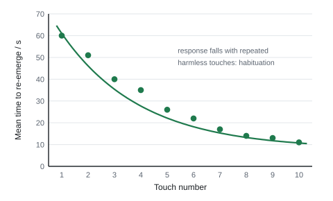
Habituation versus fatigue: to show the fall is learning, not tired muscles, give a different stimulus (e.g. a touch on another part of the body). If the full response returns, the animal had habituated to the first stimulus.
Unit 6 (A2): Other unfamiliar practicals that recur
| Context | Seen in | The marks in one line |
|---|---|---|
| Pollen tube growth (sucrose medium, ± stigma extract, or temperature) | Jan 2021 Q1, Jan 2024 Q2 | pollen on sucrose medium on a slide; measure tube length with an eyepiece graticule calibrated with a stage micrometer at stated intervals; rate = change in length ÷ time; control = no extract; control temperature, pH, age of pollen |
| Choice chamber / T-maze (woodlice, topshells, zebrafish) | Jun 2022 Q1, Jun 2024 Q3 | count animals in each section after a fixed time; use each animal once or rest it; chi-squared on the counts; don't let animals cluster in corners (round tray) |
| Tensile strength of plant fibres (AS) | Jan 2022 Q1, Oct 2024 Q2 | same length and diameter of fibre; clamp at both ends; add 10 g masses until it breaks; DV = mass (or force) to break; goggles, cushion under masses |
| Water potential of tissue (AS) | Oct 2020 Q1 | cylinders of the same size; five sucrose concentrations; same time (e.g. 24 h) and temperature; % change in mass; read the concentration where the line crosses zero |
| Vitamin C with DCPIP (AS) | Jun 2022 Q2, Oct 2023 Q1 | add juice to a fixed volume of DCPIP until blue turns colourless; record the volume of juice (not drops); compare with a standard vitamin C solution or calibration curve |
| Mitotic index (AS) | Jun 2023 Q1, Oct 2024 Q3 | root tips (end 5 mm) grown over the test solution; hydrochloric acid, stain (e.g. toluidine blue), squash; count dividing and total cells in several fields of view; index = dividing ÷ total |
| Field sampling (kick sampling, pitfall traps, mark-release-recapture) | Jan 2022 Q3, Jan 2026 Q3, Jan 2023 Q4 | same time / area / effort at each site; monitor abiotic factors; repeat at several sites |
- Habituation planning in full, worth up to 21 marks (WBI16 Jun 2021). Mark schemes credit "repeat (on the same animal) until there is no response" and "let the fish rest before the next trial" (WBI16 Oct 2025).
- Why habituation helps an animal: it saves energy and time for feeding and other behaviour, and avoids needless withdrawal (WBI16 Jan 2025).
- Ethics of human volunteers: informed consent, nobody can be forced to take part, health check first (WBI16 Jun 2025).
SpecP2Carrying out practical work: apparatus, techniques and measurement
Unit 3 (AS):
Use apparatus and techniques safely and correctly: choose the right measuring instrument and use it properly, make up solutions, handle microbes aseptically, dissect, and deal with hazards.
Unit 6 (A2):
Use apparatus and techniques safely and correctly; identify, measure and control variables (including abiotic and biotic ones); choose instruments of suitable range and resolution; deal with hazards.
Unit 6 (A2): The abiotic and biotic variable question
This is in almost every paper: "State one abiotic and one biotic variable that could affect this investigation (other than the IV). Choose one. Describe how it could be controlled and the effect on the results if it was not controlled."
- Abiotic = non-living (temperature, pH, light intensity, wavelength, humidity, salinity, O₂ or CO₂ concentration, soil moisture). Biotic = living (age, mass, sex, species, variety, genetic variation, health, fitness of a volunteer).
- One mark each for: the variable, a specific control method, the effect. For the effect, "the results would not be valid" always works, or give a direction: "a higher temperature would increase enzyme activity, so the rate would increase".
- Put one variable per answer line, in the right category. Two variables on one line, or a biotic one on the abiotic line, loses the mark.
- Don't pick the IV, or something the question has fixed (e.g. the species named in the stem).
| Variable | Control that earns the mark |
|---|---|
| Temperature | thermostatically controlled water bath / incubator; air-conditioned room at a stated temperature; tank heater with thermostat; heat shield or LED lamp to stop the lamp heating the water |
| pH | buffer solution of stated pH |
| Light intensity | same lamp (stated wattage) at a fixed distance; other lights off |
| Wavelength | same colour filter / same type of bulb |
| Humidity | air-conditioned room; humidifier or dehumidifier |
| Salinity | same concentration of salt (stated in g dm⁻³ or %) |
| CO₂ for photosynthesis | sodium hydrogencarbonate solution in excess at a stated concentration |
| Mass / volume / concentration | weigh on a balance / measure with a syringe or pipette / make from the same stock |
| Age, sex, species, variety | same batch (hatched or sown on the same day), stated sex, same supplier |
In field work you can't control soil pH or moisture. You measure them at each site and choose sites where they are similar. The ER for Jan 2022 says field variables "cannot be controlled in the same way as in a laboratory".
Unit 3 (AS): Choosing and using instruments
| Instrument | Resolution | Use it properly | Watch out for |
|---|---|---|---|
| Ruler | 1 mm | measure zones in two directions at right angles | parallax: eye directly above the mark |
| Digital calipers | 0.01 mm | small zones, fibre diameters | zero first |
| Measuring cylinder | 0.5–1 cm³ | larger volumes of solution | read the bottom of the meniscus at eye level |
| Graduated pipette / syringe | 0.1 cm³ | small volumes, drop-by-drop additions (DCPIP) | air bubbles; read the bottom of the meniscus |
| Electronic balance | 0.01 g | tissue pieces, seeds, fresh and dry mass | zero (tare) it; blot tissue dry the same way first |
| Thermometer / probe | 0.5 / 0.1 °C | check the water bath really is at the set temperature | stir; leave to equilibrate |
| Stop clock | 0.01 s (reaction time ≈ 0.2 s) | timing colour changes and soaking | start as you mix |
| Colorimeter | 0.01 absorbance units | colour of solutions: pigment, starch-iodine, cloudiness | zero with a blank, same filter, same cuvette |
| Eyepiece graticule + stage micrometer | depends on objective | sizes of cells, fibres, pollen tubes | calibrate for each objective (CP5) |
Unit 6 (A2): Measuring instruments
| Instrument | Typical resolution | Use it for | Watch out for |
|---|---|---|---|
| Ruler / metre rule | 1 mm | lamp distance, shoot length, clear-zone diameter | parallax: read at eye level |
| Vernier / digital calipers | 0.1 / 0.01 mm | small zones, fibre diameter | zero before use |
| Measuring cylinder | 0.5–1 cm³ | bulk solutions | read the bottom of the meniscus |
| Graduated pipette / syringe | 0.1 cm³ | small volumes of reagent, gas | air bubbles |
| Gas syringe | 0.5–1 cm³ | gas released | sticking plunger, leaks |
| Capillary tube + scale | 1 mm of length | tiny gas volumes (respirometer, photosynthometer) | convert length to volume with πr²l |
| Balance | 0.01 g | mass of seeds, yeast, larvae | tare (zero) first |
| Thermometer / temperature probe | 0.5 °C / 0.1 °C | water baths, rooms | stir before reading |
| Colorimeter | 0.01 absorbance units | turbidity, colour change | zero with a blank, same filter, clean cuvettes |
| Light meter | 1 lux | light intensity at each site | shade, time of day |
| Stopwatch / timer | 0.01 s (but reaction time ≈ 0.2 s) | time for colour change | human reaction time |
| pH probe / moisture meter | 0.1 pH | soil and water | calibrate with buffers |
The colorimeter
- It shines light of one colour (chosen with a filter of the complementary colour: a blue-green filter for red beetroot pigment) through a cuvette and measures how much gets through.
- Absorbance goes up as the solution gets more coloured or cloudy. Transmission goes down. Read the axis carefully: the trends run in opposite directions.
- Why it's better than the eye: it gives a number, so it is objective and quantitative.
- Using it validly: zero it with a blank (distilled water, or the solvent without pigment); same filter and same (clean, unscratched) cuvette for every sample; hold cuvettes by the frosted sides; same time between taking the sample and reading.
- To turn readings into concentrations, make a calibration curve from solutions of known concentration and read the unknown off it.
- Always translate the reading into biology: "lower transmission means more pigment has leaked, so the membrane is more permeable" (Jan 2024 ER).
Unit 3 (AS): Making up solutions
You will be asked to make a solution of a given concentration from a stock, or a dilution series.
C₁V₁ = C₂V₂
C₁ = stock concentration, V₁ = volume of stock to use, C₂ = concentration you want, V₂ = final volume you want. Water to add = V₂ − V₁.
Worked example: dilutions from WBI13 papers
10 cm³ of 0.4 mol dm⁻³ sucrose from 2.0 mol dm⁻³ stock (Jun 2022): V₁ = 0.4 × 10 ÷ 2.0 = 2.0 cm³ of stock + 8.0 cm³ of distilled water.
1 cm³ of a 2% protease solution from a 5% stock (Oct 2021): V₁ = 2 × 1 ÷ 5 = 0.4 cm³ of stock + 0.6 cm³ of water.
A set of glucose standards, 10 cm³ each, from a 2.0% stock:
- 2.0%: 10 cm³ stock + 0 cm³ water
- 1.6%: 8 cm³ stock + 2 cm³ water
- 1.2%: 6 cm³ stock + 4 cm³ water
- 0.8%: 4 cm³ stock + 6 cm³ water
- 0.4%: 2 cm³ stock + 8 cm³ water
Give the volumes you'd actually measure. Don't round 12.5 cm³ to 13 cm³ (Jun 2024).
- Serial dilution: dilute by the same factor each time, using the previous solution as the next stock. 1 cm³ + 9 cm³ water = a ×10 dilution: 1% → 0.1% → 0.01% → 0.001%. Mix well and use a fresh pipette each step. Use it when you need a wide range (starch standards, CP1).
- Proportional (simple) dilution: each solution made directly from the stock, as in the glucose table. Use it for evenly spaced concentrations.
- Units you'll meet: mol dm⁻³, g dm⁻³, mg cm⁻³, % (g per 100 cm³), mg per 100 g of food. 1 dm³ = 1000 cm³.
Unit 6 (A2): Making up solutions
- Diluting a stock: use C₁V₁ = C₂V₂.
- Serial dilution: dilute by the same factor each time (e.g. 1 cm³ + 9 cm³ water = ×10 dilution). Use a fresh pipette each step and mix well.
- Mass for a concentration: mass = concentration (g dm⁻³) × volume (dm³). 1 dm³ = 1000 cm³.
Worked example: making solutions
You need 50 cm³ of 0.25 mol dm⁻³ sucrose from a 1.0 mol dm⁻³ stock.
V₁ = C₂V₂ ÷ C₁ = (0.25 × 50) ÷ 1.0 = 12.5 cm³ of stock + 37.5 cm³ of distilled water.
A solution must contain 0.20 g dm⁻³ of a toxin. Mass needed for 20 cm³ = 0.20 × (20 ÷ 1000) = 0.004 g (4 mg). Too small to weigh accurately, so make 1 dm³ (0.20 g) and take 20 cm³ of it.
Measuring tissue and zones accurately
- Mass of tissue (osmosis, Jan 2023): blot each piece dry in the same way before weighing (removes surface solution, so the mass is only the tissue); electronic balance, zeroed, to 2 d.p.
- Area of a zone: measure the diameter in two directions at right angles, take the mean, then area = π(d ÷ 2)². Or trace the zone onto squared paper and count the squares, counting part-squares more than half covered (Oct 2024: "count squares" alone isn't enough).
- Length of a curved shoot: lay a thread along it, then measure the thread.
Unit 3 (AS): Aseptic technique (summary; full detail in CP9)
Disinfect the bench; work next to a lit Bunsen burner; flame the loop and the neck of the culture bottle; sterile pipettes, spreaders and forceps; lift the Petri dish lid only a little; tape the lid with two strips; incubate at 25–30 °C; autoclave everything afterwards. Each step has two purposes: keep unwanted microbes out of the culture (valid results) and keep the culture away from you (safety).
Unit 6 (A2): Techniques that recur
| Technique | What earns the marks | Details in |
|---|---|---|
| Gas collection from pondweed | photosynthometer / gas syringe; volume per minute; NaHCO₃ in excess; acclimatise | CP10 |
| Quadrats and transects | random coordinates or regular intervals; quadrat size stated; % cover or count; abiotic factor at each point | CP11 |
| Aseptic technique | disinfect bench; flame the bottle neck; sterile loop/spreader; lid lifted minimally; tape (don't seal); incubate ≤ 30 °C | CP13, CP14 |
| Dilution plating | serial dilution; spread a known volume; incubate; count separate colonies; × dilution factor | CP13 |
| Colorimetry | blank to zero; same filter; calibration curve | CP13, CP15 |
| Disc diffusion | lawn of bacteria; discs with the same volume; control disc; measure two diameters | CP14 |
| Redox indicator | yeast and indicator equilibrated separately; time to decolourise; 1 ÷ time | CP15 |
| Respirometer | soda lime absorbs CO₂; capillary drop; equilibrate; with and without soda lime for RQ | CP16 |
| Spirometer | soda lime canister; nose clip; sterile mouthpiece; read the trace | CP17 |
| Starch agar + iodine | half-grains cut side down; incubate; flood with iodine; measure clear zones | CP18 |
Unit 3 (AS): Safety: hazard with a matching precaution
| Practical | Hazard | Precaution |
|---|---|---|
| Benedict's (CP1) | hot water bath; reagent is an irritant | tongs or test-tube holder; eye protection |
| Iodine, DCPIP, biuret (CP1, CP2) | irritants; biuret contains sodium hydroxide (corrosive) | eye protection; wash off skin |
| Beetroot (CP3) | scalpel and cork borer; ethanol is flammable; hot water | cut down onto a tile, away from fingers; no naked flames; tongs |
| Enzymes (CP4) | proteases (trypsin, savinase) can irritate skin or cause allergies | gloves; wash spills with cold water |
| Cheek cells (CP5) | body fluids could carry infection; methylene blue stains | own cells only; used cotton buds straight into disinfectant; gloves |
| Root-tip squash (CP6) | hydrochloric acid and acetic orcein are corrosive/irritant; hot water bath | gloves and eye protection; rinse tips in water after the acid |
| Sections (CP7) | razor blades | cut away from the body onto a tile; blades in a sharps box |
| Tensile strength (CP8) | falling masses; snapping fibres | cushioned tray or sand under the masses; eye protection; add masses gently |
| Antimicrobial (CP9) | pathogens; ethanol near flames | aseptic technique; incubate below 30 °C; never reopen plates; autoclave; ethanol away from the Bunsen |
| Pollen tubes | pollen allergy (hay fever); bee stings when collecting | avoid inhaling pollen; gloves; care with bees |
| Heart dissection | scalpel cuts; microbes on raw tissue; preservative (formalin) fumes | dissecting board, cut away from you; gloves, wash hands; ventilated room |
- Pipette: "read at the bottom of the meniscus, eye level, to avoid parallax" (Jun 2024).
- Weighing: "blot dry / remove excess solution before weighing, the same way each time" (valid); "electronic balance, zeroed" (accurate) (Jan 2023).
- Colorimeter: "same filter / cuvette; zero with the blank / solvent; objective reading".
- Area: "measure diameter in more than one direction, then πr²" or "squared paper, part squares treated consistently".
- Dilution: "C₁V₁ = C₂V₂" with the volume of stock and of water both stated.
- Safety: "one precaution plus its reason". "Do not accept unqualified gloves / goggles."
Often asked as: make a stated concentration from a stock; how to use a pipette or balance accurately; colorimeter validity; aseptic steps; a safety precaution.
- Using a colorimeter when the question is about colour standards (a semi-quantitative method). It answers a different question (Jun 2024 ER).
- Explaining a result in terms of "more light is transmitted" and stopping there. Say what it means for the pigment, the membrane or the protein.
- Giving only the stock volume in a dilution answer, or only the total.
Unit 6 (A2): Safety: hazard with a matching control
| Context | Hazard | Control |
|---|---|---|
| Microbes | pathogen / infection | non-pathogenic strain, aseptic technique, lid taped not sealed, incubate below 30 °C, autoclave waste, gloves |
| Spirometer | infection from the mouthpiece | sterilise or replace the mouthpiece for each person |
| Spirometer | CO₂ build-up, breathing difficulty | fresh soda lime; stop if dizzy; health questionnaire first |
| Soda lime, KOH | corrosive / irritant | gloves and goggles; seeds on gauze, never touching it |
| Lamp near water | electric shock; hot bulb | keep water away from the mains; LED bulb; don't touch the bulb |
| Field work | slips, bites, stings, sunburn, tides | suitable footwear, insect repellent, sunscreen, work in pairs, check tide times |
| Breaking fibres | fibre or mass flying up into eyes; falling masses | goggles or screen; cushion under masses; stand back |
| Toxic chemical (e.g. arsenic, copper ions) | toxic, irritant | gloves, mask, wash hands |
- Variable question: "variable with suitable control method described (1); results are not valid / description of expected effect on the dependent variable (1)". "Must be directional if giving expected effect." "Ignore accuracy, precision, reliability."
- "If biotic and abiotic factor stated on the same line they negate each other." "Only mark the first response on each line."
- Microbe risk: emphasis is on "risk to humans": "harmful bacteria / infection / biohazard" with "aseptic technique / limited lifting of the lid / incubate below body temperature". "Not contamination unqualified."
- Units: negative indices (cm³ min⁻¹) are safest; some mark schemes reject the solidus (dm3/s).
Often asked as: one abiotic and one biotic variable + control + effect; risk and how to reduce it; dilution to a stated concentration.
- "Light intensity" as a variable on a sand dune or other field site: it was not credited (Oct 2021). Pick soil moisture, salinity, wind speed, pH.
- "Keep it in a water bath" with no thermostat or temperature.
- "Contamination" as a risk. The examiner wants harm to you: infection by a pathogen.
- Giving "affects the results" as the effect. Say "not valid", or give the direction.
Dissection: the mammalian heart
Recommended practical: heart dissection
- Outside first. Put the heart (e.g. lamb or pig, from a butcher) on a dissecting board, front (ventral) side up: the coronary arteries run down the front in a groove between the two ventricles. The heart's right side is now on your left.
- Identify: the atria (thin, ear-like flaps at the top), the ventricles (the firm bulk), the apex (the pointed bottom tip), the aorta (thick-walled, at the back, curving over) and the pulmonary artery (at the front, leaving the right ventricle). Push a blunt probe into each vessel to see which chamber it leads to.
- Feel the ventricle walls: the left is much thicker and firmer.
- Cut with scissors or a scalpel down through the wall of the left atrium and left ventricle towards the apex, to open the chamber. Repeat on the right side.
- Look for the atrioventricular (AV) valve cusps, the tendinous cords (chordae tendineae: white, string-like) running from the cusps to the papillary muscles on the ventricle wall, and the semilunar valves (three pocket-shaped cusps) at the base of the aorta and pulmonary artery.
- Make a plan drawing of the cut ventricle (rules in CP5 and CP7) and wash hands and equipment.
| Structure | Function to quote |
|---|---|
| AV valve | stops blood flowing back into the atrium when the ventricle contracts |
| Tendinous cords | stop the AV valve turning inside out (inverting) under high pressure |
| Papillary muscles | contract to pull on the cords and keep them taut |
| Thick left ventricle wall | generates the high pressure needed to pump blood all round the body |
| Semilunar valves | stop blood flowing back into the ventricles from the arteries |
- External view: "aorta, pulmonary artery, right atrium, coronary artery (any two for one mark)"; "apex", "atrium", "the groove where the ventricles meet", "coronary vessels" (Jan 2025).
- Plan drawing of the cut ventricle: "a valve cusp with two or more cords (branched)", "a labelled cut surface of the muscular wall", labels from: AV valve, papillary muscle, tendinous cord, ventricle wall.
- Risk assessment: "knife or scissors: cut away from fingers on a board"; "allergy / infection from tissue: gloves"; "formalin: well-ventilated room or fume cupboard, gloves, eye protection".
- Comparing hearts: "left ventricle wall thicker" (not "heart is thicker"); dilated cardiomyopathy: "larger ventricle volume, thinner wall and septum"; hypertrophic cardiomyopathy: "thicker left ventricle wall, smaller lumen".
Often asked as: label an external photograph; draw where to cut; plan drawing of the valve and cords; functions; percentage increase in wall thickness; compare diseased and healthy hearts.
- Left–right mix-ups. On a heart seen from the front, its left side is on your right.
- Vague comparisons ("the heart is bigger"). Name the chamber and the feature.
- Drawing a textbook heart instead of the specimen in the photo.
- Unqualified safety ("wear gloves") with no hazard.
- Fish v mammal hearts: a fish heart has one atrium and one ventricle (plus a sinus venosus and bulbus arteriosus) in a single circulation (WBI13 Jun 2024).
- Designing a correlation study of heart size against body size: at least five fish of different sizes, measure length or mass and heart mass in a standard way, plot a scatter graph and use a correlation test (WBI13 Jun 2024).
- Actual size from a photo with a scale bar: measured length × (scale-bar value ÷ scale-bar length) (WBI13 Jun 2024, Oct 2024).
SpecP3Analysing data: tables, graphs and calculations
Unit 3 (AS):
Record data in tables with correct headings and units; plot graphs with suitable scales; calculate with the right number of significant figures and units; find gradients and initial rates; describe and compare relationships.
Unit 6 (A2):
Tabulate data with correct headings and units; calculate with the right number of significant figures; plot graphs with suitable scales (including log scales); find gradients; describe trends and relationships.
Unit 3 (AS): Drawing a table
The mark scheme is almost the same every paper: suitable table drawn (1), headings with units (1), all data correct (1).
- Heading = quantity / unit: "Temperature / °C", "Transmission / %". Units go only in the heading, never in the cells. This is the single most common way to lose the mark.
- IV in the first column, DV in the columns to the right (repeats, then the mean).
- Use the full name of the quantity: "Mean area of zone of inhibition / mm²" (the word "zone" missing cost a mark), "Protein content as a percentage of the starting content / %".
- Put "mean" in the heading of the mean column.
- Same number of decimal places all the way down a column, matching the instrument. Means can have one more decimal place than the raw data.
- No extra columns the question didn't ask for: an SD column when only means were asked for lost the mark (Oct 2024).
| Temperature / °C | Transmission repeat 1 / % | Transmission repeat 2 / % | Transmission repeat 3 / % | Mean transmission / % |
|---|---|---|---|---|
| 10 | 93 | 95 | 94 | 94.0 |
| 20 | 92 | 91 | 93 | 92.0 |
| 30 | 89 | 86 | 89 | 88.0 |
| 40 | 80 | 77 | 80 | 79.0 |
| 50 | 57 | 52 | 56 | 55.0 |
| 60 | 30 | 33 | 30 | 31.0 |
| 70 | 25 | 22 | 25 | 24.0 |
Unit 6 (A2): Tables
- Column heading = quantity / unit: "Diameter of clear zone / mm". Units only in the heading, never in the body.
- IV in the first column (or the column heads for two groups); one row per repeat; a mean row or column.
- Same number of decimal places down a column, matching the instrument (a ruler in mm → whole mm; means can have one more d.p.). "17.3 and 17.9", not "17 and 18" or "17.3 and 18".
- No extra columns (e.g. "sample number") when the question gives you a layout to copy: several mark schemes say a third column cancels the table mark.
| Repeat | Diameter of clear zone, leaf extract / mm | Diameter of clear zone, stem extract / mm |
|---|---|---|
| 1 | 14 | 13 |
| 2 | 17 | 15 |
| 3 | 15 | 12 |
| 4 | 19 | 16 |
| 5 | 16 | 14 |
| 6 | 13 | 11 |
| 7 | 18 | 15 |
| 8 | 16 | 14 |
| Mean | 16.0 | 13.8 |
Unit 3 (AS): Plotting a graph: A, L, P, S
Graph questions (3–5 marks) are marked with letters. Learn what each one needs.
| Code | What earns it |
|---|---|
| A (axes) | IV on the x-axis, DV on the y-axis; linear scales with sensible steps (1, 2, 5, 10 per large square); plotted points cover more than half the grid |
| L (labels) | both axes labelled with quantity / unit, copied from the table; include "mean" if you plot means |
| P (plotting) | every point correct to within half a small square; neat crosses, not blobs |
| S (shape) | the line the question asks for: "join the points with straight lines" = ruled point to point; "draw a line of best fit" = one smooth line (straight or curved) with points either side; a bar chart if the IV is categories |
| E, K, R | sometimes added: Error (SD) bars plotted correctly; a Key when there are two data sets; Ruled lines |
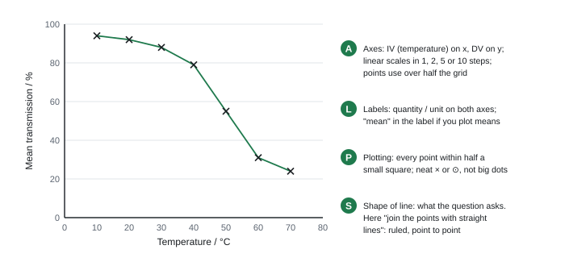
Line graph or bar chart?
- Continuous IV (temperature, concentration, time): line graph. A bar chart here loses S and can be capped (e.g. "max 4 for a bar chart", Jun 2021).
- Categories (types of food, plant extracts, minerals, species): bar chart, bars not touching, y-axis starting at zero with no break.
- Line graphs don't have to start at zero, as long as the scale is linear and labelled.
Scale traps. Don't change the step part-way along an axis (3 per square, then 6 per square). Avoid awkward scales (a large square = 3 or 7). Don't extrapolate beyond your data unless asked: drawing the line back to zero has cost P and S marks.
Completing a graph. Some questions give a half-drawn graph and ask you to add the scale, labels, points or SD bars. Plot SD bars as mean + SD and mean − SD, with short horizontal caps.
Unit 6 (A2): Choosing and drawing the graph
| IV is… | Graph | Variability shown by |
|---|---|---|
| two groups or categories (leaf v stem; with v without) | bar graph of the means, bars separate, y-axis starting at zero, no broken scale | range bars (min–max) or ±SD error bars |
| continuous with several values (temperature, concentration, time) | line or scatter graph; points plotted as × or •; line of best fit (straight or smooth curve), not dot-to-dot unless the question says "join the points" | error bars on each point |
| two measured variables you want to correlate | scatter graph | – |
| counts in categories (chi-squared) | bar chart of counts | – |
Rules that carry marks on every graph:
- IV on the x-axis, DV on the y-axis.
- Axis labels with units, and the y-label says mean if you plotted means: "Mean diameter of clear zone / mm".
- Linear scale in 1, 2, 5 or 10 steps; plotted points should use more than half the grid.
- Bar graphs: start at zero. Scatter graphs of a continuous IV may use a broken axis (mark it).
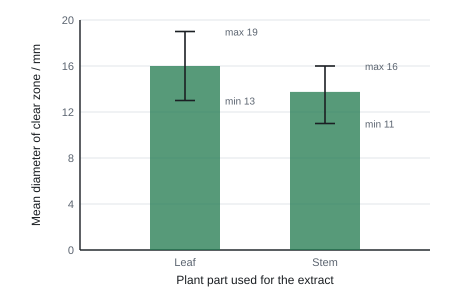
Log scales. When values cover several powers of ten (bacterial numbers from 10³ to 10⁹), plot log₁₀ of the number, or use log graph paper where each equal step is ×10. Exponential growth then becomes a straight line (see CP13).
Reading a graph
- Interpolate: read across from the axis to the line, then down. Draw your construction lines on the graph: "show on each graph how you arrived at your answer" is common.
- Two-graph questions (water potential, Oct 2020, Jan 2023): read where the best-fit line crosses 0% change, then use that concentration on a second (conversion) graph. See CP3.
Unit 3 (AS): Calculations
| Calculation | Formula and notes |
|---|---|
| Percentage change | (new − original) ÷ original × 100. Negative = decrease |
| Percentage difference | difference ÷ the value you compare against × 100. Use the formula if the question gives one; otherwise divide by the reference (starting/control) value and say which |
| Ratio | "how many times larger" = larger ÷ smaller; write as 3.3 : 1, not 1 : 3.3 if the larger comes first |
| Rate from a table | change in quantity ÷ time taken, with units (a.u. min⁻¹, g dm⁻³ week⁻¹) |
| Rate from an end point | 1 ÷ time (s⁻¹) |
| Gradient of a straight line | Δy ÷ Δx with a large triangle (more than half the line); keep the sign |
| Initial rate | gradient of the tangent to the curve at t = 0 |
| Straight-line equation | y = mx + c; m = gradient, c = y-intercept |
| Calculation | Formula and notes |
|---|---|
| Mitotic index | cells in mitosis ÷ total cells (× 100 for a %) |
| Area of a circle / zone | πr² (r = radius = diameter ÷ 2) |
| Volume of a sphere | (4/3)πr³ |
| Volume of a cylinder | πr²h |
| Magnification | image size ÷ actual size (same units) |
| Tensile strength | breaking force ÷ cross-sectional area (CP8) |
Worked example: percentage change and percentage difference
A potato cylinder goes from 3.20 g to 3.44 g.
% change = (3.44 − 3.20) ÷ 3.20 × 100 = 0.24 ÷ 3.20 × 100 = +7.5%.
Mean transmission falls from 92.0% at 20 °C to 31.0% at 60 °C.
% decrease = (92.0 − 31.0) ÷ 92.0 × 100 = 66% (2 s.f.). Divide by the original (92.0), not the new value: 61 ÷ 31 × 100 = 197% is wrong.
Percentage difference between a garlic zone (284 mm²) and a mint zone (154 mm²): (284 − 154) ÷ 154 × 100 = 84% larger than mint. Dividing by 284 gives 46% smaller than garlic. Both can be right; the words must match the number.
Worked example: rate from a table, gradient and y = mx + c
Rate from a table. Absorbance falls from 1.20 at 2 min to 0.60 at 8 min. Rate = (1.20 − 0.60) ÷ (8 − 2) = 0.60 ÷ 6 = 0.10 a.u. min⁻¹. Check the time interval: 8 − 2 = 6, not 8.
Gradient. A straight line of breaking mass against fibre length passes through (10 cm, 190 g) and (40 cm, 150 g).
m = (150 − 190) ÷ (40 − 10) = −40 ÷ 30 = −1.3 g cm⁻¹. Keep the minus sign and write it as a decimal, not "−4/3".
Equation. 190 = (−1.33 × 10) + c, so c = 203. y = −1.33x + 203.
Use it to predict at 25 cm: y = (−1.33 × 25) + 203 = 170 g.
Unit 6 (A2): Calculations you must be able to do
| Calculation | How |
|---|---|
| Percentage change | (new − original) ÷ original × 100; negative = decrease |
| Rate from a table | change in quantity ÷ time taken; check the time interval (between 1 h and 5 h is 4 h) |
| Rate from a straight-line graph | gradient = Δy ÷ Δx using a large triangle (over at least half the line), points read from the line |
| Rate at a point on a curve | draw a tangent at that point; gradient of the tangent |
| Rate from an end point | 1 ÷ time (s⁻¹), e.g. time for a colour change |
| Volume in a capillary | πr²l (r = radius, half the diameter) |
| Volume of a sphere (a drop) | (4/3)πr³ |
| Area of a clear zone | πr² |
| Magnification | image size ÷ actual size (same units) |
| Standard form | 162 450 = 1.6 × 10⁵ (2 s.f.) |
| Growth rate constant | k = (log₁₀Nₜ − log₁₀N₀) ÷ (0.301 × t) |
| RQ | CO₂ given out ÷ O₂ taken in |
| Population size from quadrats | mean per quadrat × (total area ÷ quadrat area) |
Worked example: three quick calculations
% change. Mean shoot length 42 mm at 20 °C and 57 mm at 30 °C. % increase = (57 − 42) ÷ 42 × 100 = 35.7 = 36% (2 s.f.).
Rate from a graph. Length 1.5 mm at 2 h and 9.9 mm at 8 h. Rate = (9.9 − 1.5) ÷ (8 − 2) = 8.4 ÷ 6 = 1.4 mm h⁻¹.
Magnification. A cell is 36 mm long in the photo and 0.9 mm long in real life. Magnification = 36 ÷ 0.9 = × 40.
Initial rate from a tangent
The rate of most reactions falls with time: substrate is used up and product builds up. So rates are only fairly compared at the start, when all tubes have the same substrate concentration. That is the initial rate.
- Plot the product formed (or substrate left) against time and draw a smooth curve.
- Lay a ruler against the curve at t = 0 so it touches the steepest, first part of the curve without crossing it. Draw the tangent.
- Make a large triangle on the tangent and calculate Δy ÷ Δx, with units.
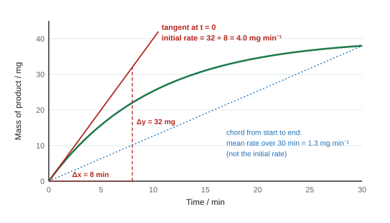
Worked example: initial rate
The tangent drawn at t = 0 passes through (0 min, 0 mg) and (8 min, 32 mg).
Initial rate = 32 ÷ 8 = 4.0 mg min⁻¹.
For a rate of decrease (substrate left, absorbance falling), the gradient is negative. Mark schemes usually ignore the sign for a "rate", but want it for a "gradient".
A rate at another time (e.g. at 15 min) works the same way: draw the tangent touching the curve at 15 min. Never use two points read off the curve itself.
Magnification and the graticule
magnification = image size ÷ actual size
- Convert to the same units first. 1 mm = 1000 µm; 1 µm = 1000 nm. Areas and volumes: 1 mm² = 10⁶ µm²; 1 µm³ = 10⁹ nm³.
- An eyepiece graticule is a scale in the eyepiece with no units of its own. Calibrate it against a stage micrometer (a slide with a ruled scale, usually 10 µm divisions) at the objective you will use. Change the objective, and you must calibrate again.
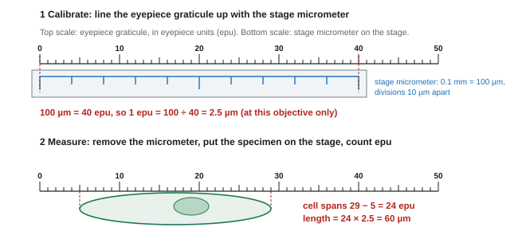
Worked example: graticule, magnification and scale bars
Calibrate. 100 µm on the stage micrometer = 40 epu. 1 epu = 100 ÷ 40 = 2.5 µm.
Measure. A cheek cell is 24 epu across. Actual width = 24 × 2.5 = 60 µm.
Magnification of a drawing. Your drawing of the cell is 45 mm wide = 45 000 µm. Magnification = 45 000 ÷ 60 = × 750.
Scale bar. A 20 µm scale bar on that drawing is 20 × 750 = 15 000 µm = 15 mm long.
From a photograph with a graticule (Jan 2022): each small division is 3 µm, so a fibre 19 divisions wide is 19 × 3 = 57 µm. The value is already in µm: no conversion needed.
From a stated magnification (Oct 2025): a leaf section 50 mm thick on a × 100 photo is 50 ÷ 100 = 0.5 mm = 5 × 10² µm.
Unit 3 (AS): Significant figures, decimal places and standard form
- Give the number of significant figures asked for. If not stated, match the least precise data you used (usually 2 or 3 s.f.).
- In a table, match the decimal places of the data (1 d.p. for DCPIP volumes read from a syringe).
- Round only at the end. Rounding an intermediate value too early has cost marks in many papers.
- Standard form: 0.000 0012 m² = 1.2 × 10⁻⁶ m²; 500 µm = 5 × 10² µm. Numbers of bacteria: 5 × 10⁵ cells cm⁻³ × 0.2 cm³ = 1 × 10⁵ cells (Jun 2024).
Unit 6 (A2): Significant figures and units
- Give the number of significant figures asked for. If not asked, use the same as the least precise data value (usually 2 or 3).
- Leading zeros don't count: 0.004 567 to 3 s.f. = 0.004 57. Trailing zeros after the decimal point do: 2.50 is 3 s.f.
- Round only at the end. Carry full values (unrounded means) through a calculation.
- Units with negative indices: cm³ min⁻¹, mm h⁻¹, mm³ min⁻¹ g⁻¹, dm³ s⁻¹. Correct a wrong unit in a table if asked (e.g. "cm³" for a length).
Unit 6 (A2): Mean, range and standard deviation
- Mean = total ÷ number of values. Median = the middle value when ranked (use for skewed data; Mann-Whitney works on medians).
- Range = smallest to largest value. On a graph it becomes range bars (min to max).
- Standard deviation (SD) measures the spread around the mean. About 68% of normally distributed values fall within ±1 SD of the mean. A small SD = values close together = more precise.
SD = √[ Σ(x − mean)² ÷ (n − 1) ]
Worked example: standard deviation (leaf extract data above)
Mean = 128 ÷ 8 = 16.0 mm.
Deviations (x − 16): −2, 1, −1, 3, 0, −3, 2, 0. Squares: 4, 1, 1, 9, 0, 9, 4, 0. Σ(x − mean)² = 28.
Variance s² = 28 ÷ (8 − 1) = 4.0. SD = √4.0 = 2.0 mm.
The stem data give s² = 19.5 ÷ 7 = 2.79 and SD = 1.7 mm. Write the mean as 16.0 ± 2.0 mm.
Unit 3 (AS): Describing and comparing data
- Describe: the direction (increases/decreases), the shape (steep at first, then levels off; a peak), where the change happens, and numbers with units, ideally a manipulated one ("more than doubles in the first 6 hours, then levels off after 18 hours", Jun 2023).
- Don't say the same relationship twice from opposite ends ("as X increases Y decreases" then "as X decreases Y increases" scores once).
- Don't treat tiny ups and downs as real when they fall within the variation.
- Compare and contrast: give at least one similarity and one difference, about the effect of the same variable on each set ("both enzymes show an optimum; the optimum is lower for the immobilised enzyme"), with figures.
- Anomalies: a repeat that doesn't fit the others, or a point well off the line. Identify it, suggest a cause, leave it out of the mean (and say so), repeat that reading.
- Table: "suitable table format (1); correct column headings with units (1); all data correctly entered (1)". "Units in the body of the table" or "% in every cell" loses the heading mark.
- Graph: "A: axes correct way round with linear scales"; "L: axes labelled with units"; "P: points plotted accurately"; "S: points joined with straight lines / line of best fit" as stated in the question.
- Calculations: "correct answer with no working gains full marks"; a wrong answer with no working gets 0.
- Initial rate: "tangent drawn at the start of the curve; gradient calculated"; reason: "the rate decreases as substrate is used up, so initial rates allow a valid comparison".
- Graticule: "units × calibration value"; "no need to convert, as each division is already in µm".
Often asked as: put data into a table (3); plot a graph (4–5); percentage change (2); initial rate (2); gradient and y = mx + c (2–3); actual size from a graticule or scale bar (2); describe or compare the results (2–3).
- Dividing by the new value in a percentage change; giving the change but forgetting to divide; rounding to the wrong number of figures.
- Finding the "initial rate" from the first and last points of the curve. You need a tangent at the start.
- Using the diameter in πr².
- Converting a graticule value that was already in µm, or forgetting to convert mm to µm before dividing.
- Bar chart for a continuous IV, or a line graph for categories.
- Leaving "mean" out of an axis label when you plotted means.
- Volume of a sphere in a new context: haemoglobin treated as a sphere of radius 2.5 nm, V = (4/3)π(2.5)³ = 65 nm³; then compared with a red blood cell of 80 µm³ = 8 × 10¹⁰ nm³ as a ratio in standard form, 1.2 × 10⁹ (WBI13 Jan 2021). Almost nobody converted the units correctly.
- Predicting from an equation given on a graph, e.g. y = 2.8x − 397.5 at x = 6500 gives 17 802.5 (WBI13 Oct 2020).
- Area from a radius in metres: π(1.95 × 10⁻⁵ m)² = 1.2 × 10⁻⁹ m² (WBI13 Jan 2023).
Unit 6 (A2): Describing trends and drawing conclusions
- Describe: the overall trend ("as temperature increases from 10 to 30 °C, the rate increases"), any change of trend (peak, plateau, the value where it changes), and quote numbers with units from the data.
- Conclude only what the data show. A correlation does not prove cause: another variable could be responsible.
- Say whether the difference is significant, using the statistical test (P5) and the overlap of range bars or SD bars.
- Anomalies: a value that doesn't fit the pattern of its repeats or the line. Identify it, give a likely cause, leave it out of the mean (and say so), repeat that reading.
- Table: "suitable table format with data (1); correct column headings with units (1); means correctly calculated (1)". "Do not accept units in the body of the table." "Means must be to the same number of decimal places."
- Bar graph: "linear scale starting at zero and axes labelled with units (1); means plotted correctly (1); range bars plotted correctly (1)". "Must start at zero, no broken axis."
- Plotting marks are given ECF from your own (wrong) means.
- Rates and % changes: "correct answer with no working gains full marks", but a wrong answer with no working gets nothing.
Often asked as: copy the data into a table with means; plot means with range bars; % increase; rate from a graph with units; answer to 2 or 3 s.f.
- y-axis label missing "mean" or the unit: the most-quoted graph error in examiner reports.
- Dividing by the wrong time interval (÷5 for the change between hour 1 and hour 5).
- Using the capillary diameter in πr²l.
- Giving only the mean when the question asks for the increase (subtract first).
- Rounding means before using them in a t test, which can change the conclusion.
- Odds ratio for two species found together in quadrats: (odds with species B present) ÷ (odds without). A value above 1 means the species are associated; e.g. 3.75 ÷ 0.2 = 18.75, about 19 : 1 (WBI16 Jun 2023).
- Growth rate constant from two counts, to 3 s.f. (WBI16 Jan 2023).
- Volume of spherical drops released per minute, (4/3)πr³ × number of drops (WBI16 Jan 2022).
SpecP4Evaluating: variability, errors, uncertainty and improvements
Unit 3 (AS):
Evaluate results and methods: use the mean, range and standard deviation to judge variability and significance; comment on the number and range of readings, significant figures and inconsistent readings; identify random and systematic errors and uncertainty; suggest realistic improvements; judge whether a conclusion is valid.
Unit 6 (A2):
Evaluate methods and results: comment on errors, uncertainty, the number and range of readings, significant figures and units; spot inconsistent readings; suggest realistic improvements and extensions; judge whether a conclusion is valid.
Unit 3 (AS): Words with exact meanings
Examiners report every year that students use these words as if they meant the same thing. They don't.
| Word | Meaning | How to improve it |
|---|---|---|
| Valid | the experiment tests what it claims: only the IV affects the DV, all other variables controlled, a control included | control the other variables; add a control |
| Accurate | close to the true value | better instrument or method: colorimeter instead of eye; blotting before weighing; measure the zone's area, not one diameter; dry mass |
| Precise | repeats are close to each other (small range or SD) | finer-resolution instrument; tighter control of variables |
| Repeatable (reliable) | the same method gives similar results when repeated | repeats, a mean, an SD |
| Reproducible | other people or other methods get similar results | a standardised method |
- Repeats do not make a result more accurate (Jan 2024). They let you calculate a mean and an SD and spot anomalies. To improve accuracy, change the method or the instrument (e.g. more colour standards at smaller intervals, or a colorimeter).
- Valid ≠ "repeat it" or "take more readings" (Jan 2022).
- Comparing two tissues at different temperatures (yam at 20 °C, potato at 25 °C) makes the comparison invalid (Jan 2023).
Unit 6 (A2): Words with exact meanings
| Word | Meaning | How to improve it |
|---|---|---|
| Accurate | close to the true value | calibrate; remove systematic error; better method (volume of gas, not bubbles) |
| Precise | repeat readings close to each other (small range or SD) | finer-resolution instrument; better control of variables |
| Repeatable (reliable) | the same person gets similar results when repeating | more repeats; control variables |
| Reproducible | other people or methods get similar results | standardised method |
| Valid | the investigation tests what it claims, with other variables controlled | control (or monitor) every other variable; include a control group |
| Resolution | smallest change an instrument can show | choose a finer scale |
"The results are accurate because they are close together" is wrong: closeness of repeats is precision.
Unit 3 (AS): Mean, range and standard deviation
- Mean = total ÷ number of values. Range = largest − smallest.
- Standard deviation (SD) is a measure of the spread of the data around the mean. About 68% of values lie within ±1 SD of the mean. A small SD means the repeats are close together.
s = √[ Σ(x − x̄)² ÷ (n − 1) ]
x = each value, x̄ = the mean, n = the number of values (not the mean), Σ = add them all up.
Worked example: standard deviation
Vitamin C in five spinach samples from soil A (mg per 100 g): 24, 26, 25, 22, 28.
Mean x̄ = 125 ÷ 5 = 25.0.
Deviations (x − 25.0): −1, +1, 0, −3, +3. Squares: 1, 1, 0, 9, 9. Σ(x − x̄)² = 20.
Divide by n − 1 = 4: 20 ÷ 4 = 5.0. s = √5.0 = 2.2 mg per 100 g (same decimal places as the table).
Write the result as 25.0 ± 2.2 mg per 100 g. The range is 22 to 28.
Using the mean (25) as n gives a negative or nonsense number under the root: a common slip (Jan 2024 ER).
Four repeat timings agree closely: 42, 45, 44 and 43 s. Move the slider to change the fifth repeat and see what one anomaly does to the mean and the standard deviation.
Mean of all five: 43.6 s · Standard deviation: 1.1 s
With the fifth reading at 90 s, the mean moves from about 44 s to about 53 s, but the standard deviation grows nearly twenty times. That is why anomalies should be checked and, with a reason, left out before calculating.
Do the SD bars overlap?
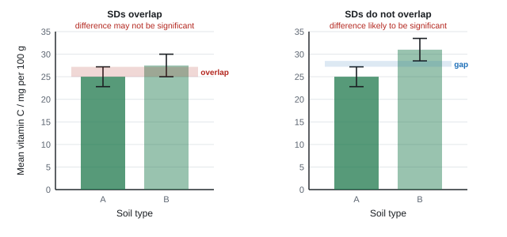
- SDs overlap → the difference may not be significant (it could be due to chance variation).
- SDs don't overlap → the difference is likely to be significant.
- Say which bars you mean ("the SD bars for 20 °C and 25 °C do not overlap") and what it means for the conclusion.
- No SDs, error bars or repeats → you can't tell whether a difference is significant. This is one of the most credited criticisms of data (Oct 2022, Jun 2023, Jun 2024, Oct 2025).
- Overlapping SDs do not mean the results are "unreliable". They are about significance (Jan 2024, Oct 2023 ERs).
Worked example: justify a conclusion with SDs
Mean starch synthesis rate ± SD: 20 °C 1.2 ± 0.1, 25 °C 1.8 ± 0.2, 30 °C 1.9 ± 0.2 (a.u. min⁻¹).
"Justify the conclusion that raising the temperature from 20 to 25 °C has a significant effect, but from 25 to 30 °C does not."
20 °C: 1.1–1.3; 25 °C: 1.6–2.0. The SDs do not overlap, so the difference between 20 and 25 °C is likely to be significant.
25 °C: 1.6–2.0; 30 °C: 1.7–2.1. The SDs overlap, so the difference between 25 and 30 °C may not be significant.
Which statistical test, and why?
At AS you don't have to calculate a statistical test (you will in Unit 6), but you may need to name the right one and say why, or suggest "carry out a statistical test" as a way to check significance.
| What you want to know | Test | Why this test | Null hypothesis |
|---|---|---|---|
| Is there a difference between two means? (e.g. zone sizes for two extracts) | Student's t test | comparing the means of two sets of continuous data | there is no significant difference between the mean [DV] of [A] and [B] |
| Is there a correlation between two measured variables? (e.g. heart mass and fish length) | correlation test (Spearman's rank) | looking for a relationship between paired measurements | there is no significant correlation between [X] and [Y] |
| Do counts in categories differ from what's expected? (e.g. numbers of cells in each stage of mitosis) | chi-squared (χ²) | the data are counts (frequencies) in categories, compared with expected numbers | there is no significant difference between the observed and expected numbers |
- A correlation, even a significant one, does not prove that one variable causes the other (Oct 2023).
- Significant means the result is unlikely to be due to chance (probability less than 5%, p < 0.05).
Unit 3 (AS): Random and systematic error
- Random error: readings scatter unpredictably either side of the true value: judging when the blue of DCPIP disappears, reaction time with a stop clock, uneven pieces of tissue. Reduce it with repeats and a mean, or a more objective method (colorimeter, data logger).
- Systematic error: every reading is wrong by the same amount or in the same direction: a balance not zeroed, a colorimeter not zeroed with the blank, a scratched reference cuvette, pigment from cut cells not washed off. Repeats don't remove it. Reduce it by zeroing, calibrating, using a blank or a control, or changing the method.
- Never write "human error". Name the action: "stopping the clock late", "judging the end point by eye".
Unit 6 (A2): Random and systematic error
- Random error: readings scatter unpredictably either side of the true value (judging a colour end point, reaction time on a stopwatch, uneven bubbles). Reduce by repeats and a mean, a better instrument (colorimeter, data logger).
- Systematic error: every reading is off by the same amount or in the same direction (a balance not zeroed, lamp heating the water, gas dissolving in water). Repeats don't remove it. Reduce by calibrating, zeroing, using a blank or control, or changing the method.
- Never write "human error". Name the action: "judging when the meniscus passes the mark".
Unit 3 (AS): Uncertainty
- A single reading on a scale is uncertain by about ± half the smallest division (ruler in mm: ±0.5 mm; thermometer in 1 °C: ±0.5 °C). For a digital reading, ± the last digit.
- Percentage uncertainty = uncertainty ÷ reading × 100.
Worked example: percentage uncertainty
A zone measured with a mm ruler as 14 mm (±0.5 mm): 0.5 ÷ 14 × 100 = 3.6%.
A 10 cm³ volume from a measuring cylinder read to ±0.5 cm³: 0.5 ÷ 10 × 100 = 5%. A pipette (±0.05 cm³) gives 0.5%.
The smaller the reading, the larger the percentage uncertainty. Use a more precise instrument for small values, or make the measured quantity bigger (longer time, more tissue).
Unit 6 (A2): Uncertainty
- The uncertainty of an analogue scale read once is usually ± half the smallest division (a thermometer in 1 °C → ±0.5 °C). For a digital reading, ± the last digit.
- Percentage uncertainty = uncertainty ÷ reading × 100. The smaller the reading, the bigger the percentage uncertainty, which is why tiny zones and short capillary movements are hard to measure.
- Range bars and SD bars show the uncertainty in a mean. Overlapping bars suggest the difference may not be significant; bars that don't overlap suggest it is (confirm with a test).
Worked example: percentage uncertainty
A clear zone is measured with a mm ruler as 14 mm (uncertainty ±0.5 mm).
% uncertainty = 0.5 ÷ 14 × 100 = 3.6%.
A 4 mm zone measured the same way: 0.5 ÷ 4 × 100 = 12.5%. Use digital calipers, or a photograph with a scale and image software, for small zones.
Number of readings, range and inconsistent readings
The spec lists these, and they turn up as 1–2 mark parts:
- Too few readings or repeats → can't calculate a reliable mean or SD; add repeats.
- Range or interval too wide → the true optimum could lie anywhere between two readings. If the highest rate was at pH 5.5 with readings every 1 pH unit, the optimum could be between 4.5 and 6.5: test more values at smaller intervals in that region (Oct 2020).
- Significant figures: a reading written to more figures than the instrument can give (12.346 s on a hand stop clock) → round it.
- Inconsistent reading (a point off the line, a repeat far from the others) → identify it, repeat it, leave it out of the mean.
Qualitative, semi-quantitative, quantitative
| Type | What you get | Example |
|---|---|---|
| Qualitative | present or absent | iodine turns blue-black: starch is present |
| Semi-quantitative | an estimate or a range, involving judgement (subjective) | Benedict's colour matched to colour standards: "between 0.5% and 1.0%" |
| Quantitative | an actual number, measured objectively | absorbance from a colorimeter read off a calibration curve: 0.72% |
"Semi-quantitative" answers: "gives a range / approximate value / estimate", "involves judgement of colour, so it is subjective" (Oct 2021, Jun 2025, Jan 2026).
Unit 3 (AS): Evaluating a conclusion
Questions say "comment on", "criticise", "evaluate" or "discuss the extent to which the data support" a conclusion. Run through this list and use every point that fits:
- Does the trend in the data support it? Quote figures.
- Are there SDs or error bars? Do they overlap? If there are none, you can't judge significance.
- Is there a control, and before data? (A claim that resistance has "developed" needs data from before.)
- Were the other variables controlled? Were conditions the same for the groups compared?
- Is the sample big and representative (number of plants, varieties, microbes, sites)?
- Does the claim go beyond the data (an exact optimum from widely spaced values; another species; a correlation read as cause)?
- End with a judgement: "so the conclusion is only partly supported".
Worked example: 'Comment on the conclusion that pH 5.5 is the optimum pH for invertase' (3 marks)
- The rate is highest at pH 5.5 in these results, so the data agree with it.
- But readings were only taken every 1 pH unit, so the optimum could lie anywhere between pH 4.5 and 6.5.
- There are no repeats or SDs shown, so we can't tell if the rate at 5.5 is significantly higher than at 4.5 or 6.5.
- Improvement: test more pH values at smaller intervals (e.g. every 0.2 units) between 4.5 and 6.5, with repeats.
Unit 6 (A2): Validity of a conclusion
Typical question: "Explain why it may not be reasonable to draw a valid conclusion from this method and these results." Look for:
- overlapping range bars or a test that isn't significant;
- variables not controlled or not monitored (name one);
- no control group or no "before" data;
- samples not random or not representative (one field, one transect, one day);
- other explanations for the effect (a correlation isn't cause).
Sample size: only criticise it if it's genuinely small. If the sample was big enough to run a statistical test, the mark scheme may not credit "small sample size".
Unit 6 (A2): Limitations of a method (plan part (d))
Credited limitations are always specific to the method, named, and ideally with their effect:
- Measuring small volumes, distances or zones precisely; zones that aren't circular; curved shoots that are hard to measure.
- Apparatus: gas leaks; soda lime used up; oxygen dissolving in water or being used in the plant's respiration; some gas collected being CO₂ or N₂; gas expanding at higher temperature; heat from the lamp.
- Organisms changing during the test: seeds or yeast switching from aerobic to anaerobic respiration; larvae developing; waste products building up.
- Biological variation you can't fully control: named, e.g. surface area of leaves, viability or genetic variation of seeds, age of volunteers, fitness, diet.
- Contamination in microbial work (not for a short respirometer test on seeds).
- Uneven distribution of bacteria or yeast (clumping), so starting numbers differ.
- Behaviour work: standardising the stimulus, judging the end of the response, other stimuli (sound, shadow, vibration).
- Field work: identifying species; counting the same animal twice; a single sample date (populations change with season).
- Realism of the model: lab conditions differ from the real habitat or the human gut (anaerobic, 37 °C); only one bacterial species tested.
"Difficult to control all the variables" is too generic and earns nothing.
Unit 3 (AS): Improvements: limitation → effect → fix
| Limitation | Effect | Improvement |
|---|---|---|
| End point (colour) judged by eye | subjective; random error | colour standard to compare with; colorimeter |
| Only a few colour standards, widely spaced | estimate is a wide range | more standards at smaller intervals |
| Zones not circular; one diameter measured | inaccurate area | two diameters at right angles, or squared paper |
| Counting plants or measuring fresh length | ignores size; water content varies | dry mass to constant mass |
| Surface solution on tissue | mass too high | blot every piece the same way |
| No start measurement | can't calculate change | measure before and after |
| Temperature not controlled ("room temperature") | rate varies | thermostatically controlled water bath |
| No repeats | can't spot anomalies or find SD | repeat at least 3 times; mean and SD |
| Zone size also depends on how fast the chemical diffuses | not a fair comparison of antimicrobial effect | minimum inhibitory concentration (MIC) method (CP9) |
- SD meaning: "a measure of the variation / spread of the data around the mean". "Not the same as range."
- Overlap: "SDs overlap, so the difference may not be significant"; "SDs do not overlap, so the difference is likely to be significant". "Do not accept 'the results are significant'" without reference to the SDs.
- "No error bars / SDs / repeats, so cannot tell if the differences are significant."
- Optimum: "could be anywhere between [the neighbouring values]; test more values at smaller intervals".
- Initial rate: "rate decreases as substrate is used up / product builds up, so rates can only be validly compared if they are initial rates".
- Significance by design: "repeat each treatment; keep conditions constant; calculate mean and SD; look for overlap of SDs / carry out a t test".
Often asked as: calculate an SD (2); what the SDs show (2); justify or comment on a conclusion (3–5); suggest how to make results more accurate / valid / repeatable (2–3); why initial rate is used (2); which statistical test and why (1–2).
- "Repeat it to make it more accurate." Repeats help repeatability and spotting anomalies, not accuracy.
- Saying overlapping SDs show the results are "unreliable". They show the difference may not be significant.
- "Repeat the experiment" as the whole answer, with no detail of what or why.
- "Comment" answered as "describe". Give a point about the data and a reason or a limitation.
- Quoting numbers but never stating a conclusion.
- Minimum inhibitory concentration (MIC): the lowest concentration of an antimicrobial that reduces the number of living cells by 90%; it avoids the problem of different diffusion rates in agar (WBI13 Oct 2024).
- Correlation is not the same as significance: a clear trend in means can still be non-significant if the SDs overlap (WBI13 Oct 2023).
Unit 6 (A2): Improvements: limitation → effect → fix
When a question says "justify" or "explain", each improvement needs its reason.
| Limitation | Effect on the data | Improvement |
|---|---|---|
| Counting bubbles of different sizes | volume not measured; inaccurate rate | collect gas in a gas syringe or capillary; measure volume |
| Lamp heats the water | temperature rises with light; invalid | heat shield (water tank) or LED bulb; monitor temperature |
| Judging colour end point by eye | random error; imprecise times | colorimeter or light sensor with data logger |
| Leaves measured only after treatment | starting differences hidden | measure before and after; use the change |
| All plots on one side of the field | not representative | random coordinates across the field |
| Few animals per trial | small sample | more animals per trial (more data to analyse) |
Unit 6 (A2): Extending an investigation
"Describe how the scientist could extend this investigation to collect more data to support or reject the null hypothesis." Extending means changing something, not doing more of the same:
- more values of the IV (other doses, concentrations, numbers of cows, more touches, shorter intervals);
- a longer time (leave traps 10 days, not 5);
- another environmental condition (temperatures, humidities, O₂ concentrations);
- other species, ages, life stages, varieties, or other locations / times of year;
- the missing treatment (give locusts both diets at once so they can choose).
"Repeat the experiment" or "use more locusts" is ignored.
Unit 6 (A2): Spotting problems in someone else's table
The spec lists these, and they come up as one-mark parts:
- a value with the wrong number of significant figures or decimal places for the instrument (e.g. "12.346 s" from a hand-held stopwatch) → round it;
- a wrong unit (length in g, volume in cm²) → correct it;
- a reading inconsistent with its repeats, or off the line of the graph → identify it as anomalous and repeat it;
- too few readings, or a range that misses the interesting part (e.g. the optimum lies between two readings) → add more values in that region.
- Limitations: "difficult to measure small distances along the capillary tube with precision"; "oxygen dissolves in water / is used in respiration"; "temperature change due to the lamp"; "seeds may change from aerobic to anaerobic respiration"; "clumping / uneven distribution of bacteria".
- Improvements: "the leaves should have been measured before the treatment"; "only one field was used so it may not be a representative sample"; "the range bars overlap".
- Extensions: "use other masses of pyrethrum", "different temperatures / humidities", "different species / ages / stages". "Ignore repeat the experiment / increase sample size."
Often asked as: limitations of your plan (2–3 marks); two or three improvements; "justify three improvements"; why a conclusion may not be valid; how to extend.
- Saying repeats improve accuracy. They improve repeatability and let you spot anomalies.
- Listing improvements without a reason when the command word is "justify".
- Suggesting "repeat it" or "more samples" as an extension.
- "Human error" or "difficult to control all variables" with no detail.
For a choice-chamber evaluation (topshells or woodlice in four areas), the credited improvements were: leave the animals longer to settle; use more animals per trial; control temperature under the lamp; use a round tray so animals don't collect in corners; cover the light half with clear glass so only light differs (WBI16 Jun 2024).
SpecP5Command words, the unfamiliar-context method and statistics
Unit 3 (AS):
Apply what you know from the core practicals to new contexts: understand what each command word wants, and adapt a familiar method to an unfamiliar organism, chemical or measurement in a 4–6 mark answer.
Unit 6 (A2):
Write a null hypothesis; choose a statistical test (t test, Mann-Whitney U, Spearman's rank, chi-squared); use degrees of freedom and a critical value at p = 0.05 to decide whether to reject the null hypothesis; write the conclusion in context.
Command words
| Command word | What it wants | Marks lost when you… |
|---|---|---|
| State / give / name | a short answer, no reason | write a paragraph with two answers on one line (only the first is marked) |
| Describe | what happens or what the data show, with figures; no reasons needed | explain instead of describing, or give no numbers |
| Explain | reasons, using biology | just restate the trend (Jan 2024: "most reported the correlation") |
| Calculate | a number with units, working shown | give no working and a wrong answer |
| Determine | a value or decision with a quantitative element (a calculation or a figure) | answer in words only (Oct 2022) |
| Compare / compare and contrast | similarities and differences, both data sets in each statement | describe each separately; give only differences |
| Comment on | a point about the data and a reason or limitation; usually ends in a judgement | describe or explain only (Jan 2022) |
| Justify | evidence that supports the statement (data, SD overlap) | describe the conclusion again (Oct 2024: most scored nothing) |
| Criticise | the weaknesses of a method or claim | list strengths |
| Discuss | points for and against, often relative to something given | ignore the comparison asked for ("compared with the methanol extract", Jan 2022) |
| Evaluate | strengths and weaknesses with data, ending in a judgement | leave out the judgement |
| Suggest | a sensible idea in a context you haven't met; more than one answer is credited | say you don't know the context; give an unrelated fact |
| Devise | a full method for an unfamiliar situation using the kit given | describe the core practical unchanged |
Worked example: 'Compare and contrast the effect of temperature on the free and immobilised enzyme' (3 marks)
- Similarity: for both, the rate increases with temperature up to an optimum and then falls.
- Difference: the optimum is lower for the immobilised enzyme (e.g. 40 °C v 50 °C) and its rate falls more steeply above the optimum.
- Similarity: both have the same activity at 70 °C.
Each statement is about the effect of temperature on each enzyme. Comparing which enzyme is "more active" doesn't answer the question (Oct 2020 ER).
Worked example: 'Evaluate the claim that local fruit is a better source of vitamin C than imported fruit' (4 marks)
- For: the mean vitamin C of the local fruit is higher overall (7.6 v 6.9 mg per 100 cm³).
- Against: for apples the imported fruit had more, so it isn't true of every fruit.
- Against: there are no SDs or error bars, so we can't tell whether the differences are significant; the local and imported varieties may differ, so variety, not origin, could explain it.
- Judgement: the data only partly support the claim.
The unfamiliar-context method question
Every paper has a method question in a context you haven't seen (worth 4–6 marks). The examiners build it on one of the nine core practicals or five recommended practicals. Your job is to spot which practical it is, then adapt it.
| If the question is about… | Adapt… |
|---|---|
| a sugar, starch or protein estimate; "colour chart"; "semi-quantitative" | CP1 colour standards (or the biuret test) |
| an antioxidant; "blue dye decolourised" | CP2 DCPIP titration |
| leakage of a pigment; a chemical "damaging membranes" | CP3 beetroot and colorimeter |
| an enzyme, protease, amylase, digestion; "optimum" | CP4 initial rates, water baths, buffers |
| measuring cells, fibres or pollen tubes | CP5 calibrated graticule |
| a chemical affecting cell division or root growth | CP6 root-tip squash and mitotic index |
| tissues in a stem, root or leaf | CP7 sections and plan diagrams |
| strength of a fibre, stem, thread or leaf | CP8 masses added until it breaks |
| killing or stopping bacteria or fungi; food preservation | CP9 disc diffusion with aseptic technique |
| mass change of tissue in solutions | tissue water potential (CP3 section) |
| plant growth with fertiliser or minerals | mineral deficiency (P1) |
Then build the answer from the P1 checklist: IV with five values and how you make them → controlled variables with methods → what you measure, with what, after what time → repeats, mean, SD → control → safety if asked. Use the organism, chemical and equipment named in the question in every line.
Worked example: 'Devise an experiment to find the optimum temperature of savinase, a protease used in washing powder, using a colorimeter' (6 marks, Jan 2026)
- Use five or more temperatures, e.g. 25, 35, 45, 55, 65 °C (include values above and below the expected optimum), each in a thermostatically controlled water bath.
- Put a fixed volume (e.g. 5 cm³) of a cloudy protein suspension (e.g. 1% casein or milk) and, in a separate tube, 1 cm³ of savinase solution in each bath for 10 minutes to equilibrate.
- Keep pH constant with a buffer (e.g. pH 9, as in washing water) and use the same concentration and volume of enzyme and substrate each time.
- Mix, pour into a cuvette and measure the absorbance every 30 s for 5 minutes in a colorimeter zeroed with a blank (buffer + enzyme without protein). The suspension clears as the protein is hydrolysed to soluble peptides and amino acids, so absorbance falls.
- Plot absorbance against time for each temperature and find the initial rate from the tangent at t = 0; plot initial rate against temperature to find the optimum.
- Repeat three times at each temperature and calculate the mean rate. Safety: proteases can irritate skin and cause allergies, so wear gloves and eye protection.
Worked example: 'Describe how you could investigate the effect of acid (pH) on the growth of bacteria' (5 marks, Jan 2024)
- Make nutrient agar (or broth) buffered to five pH values, e.g. pH 4, 5, 6, 7, 8.
- Using aseptic technique (flamed loop, lid lifted only slightly), spread the same volume (0.1 cm³) of the same bacterial culture on each plate.
- Incubate all plates at 25 °C (thermostatically controlled incubator, below 30 °C) for 48 hours.
- Count the colonies on each plate (or measure the absorbance of the broth with a colorimeter).
- Repeat with three plates at each pH and calculate the mean; tape lids, don't reopen, and autoclave the plates afterwards.
The ER noted many students invented a fish or microscope experiment. Adapting CP9 was what was wanted.
Worked example: 'Describe a method to compare the vitamin C content of spinach grown in two soil types' (5 marks, Jan 2024)
- Take equal masses (e.g. 10 g) of spinach leaves from each soil; grind each with the same volume of distilled water for the same time and filter (a standard extraction).
- Put 1 cm³ of DCPIP in a test tube; add the extract drop by drop from a graduated pipette, shaking gently, until the blue colour just disappears; record the volume used.
- Do the same with a standard vitamin C solution of known concentration (e.g. 1 mg cm⁻³).
- Calculate vitamin C in each extract = (volume of standard × its concentration) ÷ volume of extract.
- Repeat (e.g. five samples per soil), calculate mean and SD, and compare (overlap of SDs).
Worked example: 'Justify each step of this method' (Jun 2025, methanol and cholesterol on beetroot membranes)
Step: "Beetroot cylinders were cut with a cork borer and trimmed to 1 cm." Justification: same size and surface area, so the same area for pigment to leak through.
Step: "They were washed in distilled water for 20 minutes." Justification: removes pigment from cells damaged by cutting, which would add colour not caused by the methanol.
Step: "The tubes were kept at 25 °C." Justification: temperature affects membrane fluidity, so it must be constant so only methanol (and cholesterol) affect the permeability.
Step: "A tube with no methanol was included." Justification: a control, to show how much pigment leaks without methanol.
A justification is a reason why the step makes the results valid or measurable, not a restatement of the step.
- "Only the first answer on each line is marked."
- Method points are separate: each needs its own clear statement; they are not "pieced together" from scattered words.
- "Describe a method": DV measurement + IV range + how IV is made + controlled variables with methods + time + repeats. Safety only if asked.
- "Compare": "both… but…", with figures. "Comment": data point + reason / limitation.
Often asked as: devise or describe a method in a new context (4–6); compare and contrast two data sets (3); justify a conclusion with SDs (2–3); evaluate a claim (3–5); justify each step of a given method (4–6).
- Writing out the core practical you know, without changing it for the new context. Every line should mention the organism, chemical or apparatus in the question.
- Writing about something that wasn't asked (counting cells when the question only asked how to view them, Jun 2022). There are no marks for extra method.
- Two answers on one answer line: the second is ignored, and a wrong first one loses the mark.
- Running out of time on the long method: plan it as a list of short, separate points.
Unit 6 (A2): Why use a statistical test?
- Biological data vary. A test tells you how likely it is that a difference or correlation as big as yours arose by chance if the null hypothesis were true.
- Biologists use p = 0.05 (5%) as the cut-off. If the probability of getting your result by chance is less than 5%, you reject the null hypothesis: the result is significant. Otherwise you accept (fail to reject) it.
- On the paper you are always given the formula and a table of critical values. You choose the right value using p = 0.05 and the degrees of freedom (or n).
Unit 6 (A2): Choosing the test
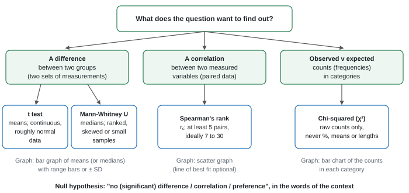
| Test | Use when | Null hypothesis | Look up the critical value with | Significant (reject H₀) when |
|---|---|---|---|---|
| Student's t test | difference between the means of two groups of measurements (continuous, roughly normal) | no significant difference between the mean X of A and B | df = n₁ + n₂ − 2 | calculated t ≥ critical value |
| Mann-Whitney U | difference between two groups when data are skewed, ranked or few; compares medians | no significant difference between the median X of A and B | n₁ and n₂ | smaller U ≤ critical value |
| Spearman's rank (rₛ) | correlation between two variables measured on the same items (at least 5, ideally 7–30 pairs) | no significant correlation between X and Y | n (number of pairs) | rₛ (ignore the sign) ≥ critical value |
| Chi-squared (χ²) | counts in categories compared with the counts expected | no significant difference between observed and expected numbers | df = number of categories − 1 | χ² ≥ critical value |
Mann-Whitney is the odd one out: a small U is significant.
Unit 6 (A2): Critical values at p = 0.05
You'll be given the table, but knowing roughly where the values sit lets you check your reading of it.
| t test (df) | 8 | 10 | 12 | 14 | 16 | 18 | 20 | 28 |
|---|---|---|---|---|---|---|---|---|
| critical t | 2.31 | 2.23 | 2.18 | 2.14 | 2.12 | 2.10 | 2.09 | 2.05 |
| χ² (df) | 1 | 2 | 3 | 4 | 5 |
|---|---|---|---|---|---|
| critical χ² | 3.84 | 5.99 | 7.82 | 9.49 | 11.07 |
| Spearman (n pairs) | 5 | 6 | 7 | 8 | 9 | 10 |
|---|---|---|---|---|---|---|
| critical rₛ | 1.000 | 0.886 | 0.786 | 0.738 | 0.700 | 0.648 |
| Mann-Whitney (n₁ = n₂) | 5 | 6 | 7 | 8 | 10 |
|---|---|---|---|---|---|
| critical U | 2 | 5 | 8 | 13 | 23 |
Different printed tables can differ slightly in the last digit (especially for Spearman). Always use the one on your paper, and state the value you used.
Unit 6 (A2): Student's t test
t = (mean₁ − mean₂) ÷ √( s₁²/n₁ + s₂²/n₂ )
s² is the variance (SD squared). The paper usually gives s² already: don't square it again.
Worked example: t test (clear zones, leaf v stem extract)
H₀: there is no significant difference between the mean diameter of the clear zone produced by leaf extract and by stem extract.
Data (from P3): mean₁ = 16.0 mm, s₁² = 4.00, n₁ = 8; mean₂ = 13.75 mm, s₂² = 2.79, n₂ = 8.
Numerator: 16.0 − 13.75 = 2.25.
Denominator: √(4.00 ÷ 8 + 2.79 ÷ 8) = √(0.500 + 0.348) = √0.848 = 0.921.
t = 2.25 ÷ 0.921 = 2.44.
df = 8 + 8 − 2 = 14; critical value at p = 0.05 = 2.14.
2.44 > 2.14, so reject H₀: there is a significant difference. The leaf extract gives a larger mean clear zone than the stem extract, so the leaf has the greater antibacterial effect. (The range bars overlap, so you couldn't tell from the graph alone: the test settles it.)
Carry the unrounded means. Here 13.8 instead of 13.75 gives t = 2.39: still significant, but in a close case early rounding can flip the decision. If t comes out negative, ignore the sign.
Unit 6 (A2): Mann-Whitney U test
- Put all the values from both groups in one list and rank them from smallest (rank 1). Tied values share the mean of their ranks.
- Add the ranks for each group: R₁ and R₂. (Check: R₁ + R₂ = N(N + 1) ÷ 2, where N = n₁ + n₂.)
- U₁ = R₁ − n₁(n₁ + 1) ÷ 2 and U₂ = R₂ − n₂(n₂ + 1) ÷ 2. (Check: U₁ + U₂ = n₁ × n₂.)
- Compare the smaller U with the critical value. Significant if it is equal to or less than the critical value.
Worked example: Mann-Whitney U (mayfly nymphs per kick sample)
H₀: there is no significant difference between the number of mayfly nymphs per kick sample upstream and downstream of the outflow.
Upstream: 14, 19, 22, 17, 25, 21, 16 (median 19). Downstream: 9, 12, 15, 8, 18, 11, 13 (median 12).
Ranks (all 14 together): upstream 6, 11, 13, 9, 14, 12, 8 → R₁ = 73; downstream 2, 4, 7, 1, 10, 3, 5 → R₂ = 32. Check: 73 + 32 = 105 = 14 × 15 ÷ 2.
U₁ = 73 − (7 × 8 ÷ 2) = 73 − 28 = 45. U₂ = 32 − 28 = 4. Check: 45 + 4 = 49 = 7 × 7.
Critical U (n₁ = n₂ = 7, p = 0.05) = 8. The smaller U, 4, is less than 8, so reject H₀: significantly fewer mayfly nymphs downstream.
Unit 6 (A2): Spearman's rank correlation
rₛ = 1 − 6Σd² ÷ n(n² − 1)
- Rank each variable separately, smallest = 1 (or both largest = 1; just be consistent). Ties share the mean rank.
- d = difference between the two ranks for each item; square it; add up to get Σd².
- rₛ runs from +1 (perfect positive) through 0 (none) to −1 (perfect negative).
- Compare the size of rₛ (ignore the sign) with the critical value for n pairs.
| Quadrat | Light / lux | Rank | Ivy cover / % | Rank | d | d² |
|---|---|---|---|---|---|---|
| 1 | 120 | 1 | 8 | 1 | 0 | 0 |
| 2 | 340 | 3 | 30 | 4.5 | −1.5 | 2.25 |
| 3 | 560 | 5 | 22 | 3 | 2 | 4 |
| 4 | 410 | 4 | 30 | 4.5 | −0.5 | 0.25 |
| 5 | 890 | 7 | 45 | 6 | 1 | 1 |
| 6 | 760 | 6 | 52 | 7 | −1 | 1 |
| 7 | 230 | 2 | 10 | 2 | 0 | 0 |
Worked example: Spearman's rank (light and ivy cover)
H₀: there is no significant correlation between light intensity and the percentage cover of ivy.
The two 30% values tie for ranks 4 and 5, so each gets 4.5.
Σd² = 8.5; n = 7, so n(n² − 1) = 7 × 48 = 336.
rₛ = 1 − (6 × 8.5) ÷ 336 = 1 − 51 ÷ 336 = 1 − 0.152 = 0.848.
Critical value (n = 7, p = 0.05) = 0.786. 0.848 > 0.786, so reject H₀: there is a significant positive correlation: ivy cover increases as light intensity increases. This doesn't prove that light causes the change (soil moisture could also vary).
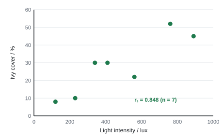
Null hypothesis: there is no correlation between light intensity and the percentage cover of grass.
Rank each variable separately, giving rank 1 to the smallest value. Light intensity already rises from quadrat 1 to 10, so its ranks are 1 to 10. For cover: 5% is rank 1, 8% is 2, 14% is 3, 18% is 4, 20% is 5, 26% is 6, 30% is 7, 35% is 8, 41% is 9 and 60% is 10.
If two values tie, each gets the mean of the ranks they would share, so two values in 4th and 5th place are both ranked 4.5.
For each quadrat, find the difference between the two ranks (d) and square it.
| Quadrat | 1 | 2 | 3 | 4 | 5 | 6 | 7 | 8 | 9 | 10 |
|---|---|---|---|---|---|---|---|---|---|---|
| Rank of light | 1 | 2 | 3 | 4 | 5 | 6 | 7 | 8 | 9 | 10 |
| Rank of cover | 1 | 3 | 2 | 5 | 6 | 4 | 9 | 8 | 7 | 10 |
| d | 0 | −1 | 1 | −1 | −1 | 2 | −2 | 0 | 2 | 0 |
| d² | 0 | 1 | 1 | 1 | 1 | 4 | 4 | 0 | 4 | 0 |
Σd² = 16.
rs = 1 − (6 × Σd²) ÷ n(n² − 1) = 1 − (6 × 16) ÷ (10 × 99) = 1 − 96 ÷ 990 = 1 − 0.097 = 0.903.
The critical value for 10 pairs at p = 0.05 is 0.648 (the table is given in the question). 0.903 is greater than 0.648, so the null hypothesis is rejected.
Conclusion: there is a significant positive correlation between light intensity and the percentage cover of grass. There is less than a 5% probability that a correlation this strong arose by chance.
This does not show that light causes the grass to grow better. Soil moisture or trampling may also change along the same transect, so an experiment that varies light alone would be needed to show cause.
Unit 6 (A2): Chi-squared
χ² = Σ (O − E)² ÷ E
- O = observed count; E = expected count from the null hypothesis. With "no preference", E = total ÷ number of categories. For a genetic cross, E comes from the expected ratio.
- Use raw counts only, never percentages, means or measurements. Each individual should be counted once (independent).
Worked example: chi-squared (woodlice in a choice chamber)
H₀: woodlice show no preference: there is no significant difference between the observed and expected numbers in each of the four sections.
60 woodlice, four sections, so E = 60 ÷ 4 = 15 each.
Dry-light O = 8: (8 − 15)² ÷ 15 = 49 ÷ 15 = 3.27
Dry-dark O = 12: 9 ÷ 15 = 0.60
Damp-light O = 14: 1 ÷ 15 = 0.07
Damp-dark O = 26: 121 ÷ 15 = 8.07
χ² = 180 ÷ 15 = 12.0. df = 4 − 1 = 3; critical value = 7.82.
12.0 > 7.82, so reject H₀: the woodlice show a significant preference. The data show it is for the damp, dark section (26 v 15 expected). The test says that there is a preference; the counts say which.
Unit 6 (A2): Writing the conclusion
Use the same four steps every time. They match the mark scheme.
- Compare: "The calculated value of t (2.44) is greater than the critical value (2.14) at p = 0.05 with 14 degrees of freedom."
- Decide: "So I reject the null hypothesis." (or "accept the null hypothesis")
- Say what it means in context: "There is a significant difference between the mean diameter of the clear zones produced by leaf and stem extracts; leaf extract gives larger zones." For a correlation, give the direction.
- Comment on variability if asked to use the graph: "The range bars do not overlap, which supports a real difference" / "The range bars overlap, so some individuals in the two groups had similar values."
"Reject the null hypothesis" on its own isn't a conclusion: the third step carries a mark.
- "the calculated value of t (x) is more than / less than the critical value (y) (at p = 0.05)"; "therefore reject the null hypothesis"; "there is a (significant) difference between the {measured variable} of {group 1} and {group 2}".
- t calculation: "numerator (1); correct substitution of given (SA)² and (SB)² (1); correct t value (1)". "Ignore minus signs." "Ecf allow use of incorrect means."
- Spearman: "calculation of Σd² or 6Σd² ÷ n(n² − 1) (1); rₛ (1)"; the sign is needed in the working when it is negative but ignored when comparing.
- Chi-squared: "correct expected value (1); correct use of formula (1); correct answer (1)". Why chi-squared: "the data are categorical / counts / frequency data / not continuous".
- Mann-Whitney: the "smallest calculated U value has to be equal to, or less than, the critical value".
Often asked as: null hypothesis (1); calculate t from given variances (2–3); use the table to conclude (2–3); calculate rₛ from a part-filled rank table (2); chi-squared with expected values (3); why this test (1).
- Squaring the given variance (s²) again.
- Mixing up the decision: t bigger than critical means reject H₀. For U it's the other way round.
- A correlation null hypothesis for difference data, or the reverse. Read the later parts: if they ask for rₛ, the null is about correlation.
- Comparing with the critical value at the wrong df, or not saying which value you used.
- Writing "this proves…". Tests show significance at a probability; correlation never shows cause.
- Using chi-squared on lengths, masses or percentages.
- Standard deviation calculated by hand from five values, then used to judge whether two population means differ (WBI16 Jun 2025).
- Odds ratio as a measure of association, not a significance test (WBI16 Jun 2023).
- A critical value at p = 0.01 is accepted if quoted correctly (2.76 for df 28), but use p = 0.05 unless told otherwise (WBI16 Jun 2022).
- With only five pairs, the critical rₛ at p = 0.05 is 1.000, so only a perfect correlation is significant (WBI16 Jan 2025).
SpecCP1Reducing sugars and starch: colour standards
Estimate the concentration of reducing sugar with Benedict's reagent, and of starch with iodine solution, by comparing with colour standards of known concentration: a semi-quantitative method (Unit 1, spec 1.3). Recommended practical in this section: the biuret test with protein standards (Unit 1, spec 2.6).
Principle
- A reducing sugar (all monosaccharides such as glucose and fructose; the disaccharides maltose and lactose) donates electrons to the blue copper(II) ions in Benedict's reagent. They are reduced to copper(I) oxide, an orange-red (brick-red) precipitate. This needs heat.
- The more reducing sugar, the more precipitate and the less blue copper(II) is left, so the colour runs blue → green → yellow → orange → brick-red.
- Benedict's must be in excess, so the colour depends only on how much sugar there is.
- Iodine (in potassium iodide solution) is orange-brown. With starch it turns blue-black: iodine fits inside the coiled amylose helix. The more starch, the darker the colour. No heating.
- Colour standards are tubes of known concentration tested in exactly the same way. Match the unknown to the nearest standard. Because you judge colour by eye, the answer is an estimate (a range): the method is semi-quantitative.
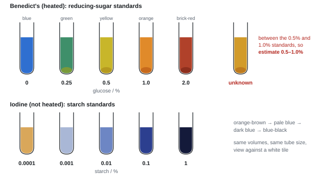
Core practical 1: making and using colour standards
Reducing sugar (Benedict's)
- Make glucose solutions of known concentration from a 2% stock with distilled water (e.g. 0, 0.25, 0.5, 1.0, 1.5, 2.0%), the same volume of each (see the dilution table in P2).
- Put the same volume of each (e.g. 1 cm³) in a test tube and add the same volume of Benedict's reagent (e.g. 2 cm³, in excess).
- Heat all the tubes together in a water bath at the same temperature (mark schemes use 80–95 °C; school sheets also use 60–80 °C, and either works if kept the same) for the same time (e.g. 5 minutes). Use tongs.
- Line the tubes up against a white tile in order. These are the colour standards.
- Prepare the food sample: grind a known mass (e.g. 5 g) with a known volume (e.g. 50 cm³) of distilled water for a fixed time, then filter. Test the filtrate exactly as in steps 2–3.
- Match its colour to the nearest standard. If it is darker than the strongest standard, dilute it (e.g. 1 in 10) and test again.
Starch (iodine)
- Make a serial dilution of a 1% starch stock: 1 cm³ + 9 cm³ water each step, giving 1, 0.1, 0.01, 0.001 and 0.0001%.
- Put the same volume of each into tubes of the same diameter; add the same number of drops of iodine solution.
- Test the unknown the same way and match it to the standards.
Variables
| IV | concentration of glucose (or starch) in the standards; type of food for unknowns |
| DV | colour of the solution and precipitate after heating (matched to a standard) |
| Control | volume of sample and of reagent (reagent in excess); water-bath temperature and heating time; time before judging the colour; tube size; the same white background and lighting; same mass of food and volume of water for extraction |
Safety
- Hot water bath: use tongs or a test-tube holder; don't point tubes at anyone.
- Benedict's and iodine are irritants: eye protection. Never taste food samples in a lab.
Processing results
Worked example: estimating from the standards
A fruit juice was diluted 1 in 10 and tested. Its colour fell between the 0.5% and 1.0% glucose standards.
Estimate for the diluted juice: 0.5–1.0%. The original juice is 10 times more concentrated: 5–10% reducing sugar.
Give a range unless the question says otherwise: the method can't tell you exactly where between the two standards it lies.
Making it quantitative
| Method | How it works |
|---|---|
| Colorimeter | zero with a blank (water + Benedict's, unheated, or water); measure the absorbance of each standard after removing the precipitate (or of the suspension); plot a calibration curve of absorbance against known concentration; read the unknown off the curve |
| Mass of precipitate | filter the precipitate, dry it, weigh it: more sugar = more precipitate |
| Blue colour of the filtrate | after filtering out the precipitate, the filtrate is less blue where there was more sugar, because more copper(II) ions have been reduced and removed |
For starch, the colorimeter reads the blue-black colour directly (red filter). Zero with water, same cuvette.
Errors and improvements
- Colour matching is subjective → compare against a white tile, same lighting, the same person; better, a colorimeter.
- Only a few standards, widely spaced → the estimate is a wide range: make more standards at smaller intervals around the unknown.
- Not all the sugar dissolved out of the food → standard grinding; test the residue with Benedict's to check none is left (Jun 2019).
- Sucrose is non-reducing, so the test underestimates total sugar → hydrolyse first (beyond box).
- Precipitate settles → shake before comparing, or compare at a fixed time.
Recommended practical: the biuret test with protein standards
Recommended practical: biuret test, semi-quantitative
- Prepare a filtrate of each food: the same mass ground with the same volume of distilled water, for the same time, then filtered.
- Make protein standards of known concentration (e.g. albumin at 0, 2, 4, 6, 8, 10 mg cm⁻³) by dilution of a stock.
- Add the same volume of biuret reagent (sodium hydroxide and copper(II) sulfate solution) to the same volume of each standard and each filtrate. No heating.
- Protein (peptide bonds) turns the blue reagent lilac/purple: the more protein, the deeper the purple.
- Compare the test result with the standards and give the closest standard, or a range between two.
- Make it more accurate: more standards at smaller intervals in the range where the unknown falls; or measure the colour with a colorimeter and use a calibration curve.
- Estimate as a range: if the purple is darker than the 2 mg cm⁻³ standard but lighter than 4 mg cm⁻³, the answer is "more than 2 but less than 4 mg cm⁻³" (Jan 2024 used 2 and 10 mg dm⁻³).
- Mass of protein in a sample = concentration × volume: 45 mg cm⁻³ × 20 cm³ = 900 mg = 0.9 g.
How it is examined
- Benedict's: heating, a semi-quantitative method for comparing foods, how to check the extraction worked, ranking foods by colour, why the filtrate is less blue (Jun 2019).
- Iodine standards by serial dilution, potato varieties, a colorimeter for quantitative data, rate of starch loss in stored bananas (Jun 2022).
- Benedict's table for urine glucose, with a colour chart of ranges (Oct 2023).
- Starch structure, colour standards, semi-quantitative v quantitative, variability in cassava roots (Jun 2025).
- Choosing tests for the four food molecules in a takeaway meal, estimating protein, resistant starch with SDs (Jan 2026).
- Biuret: Oct 2021, Jan 2024, Jun 2024, Jan 2026.
- Test: "Benedict's + heat (water bath, hot / boiling / above 40–50 °C)". Colours: "green, yellow, orange, (brick-)red precipitate".
- Semi-quantitative method: "same mass of food; same volume of distilled water for extraction; standardised test (same volume of Benedict's, time, temperature); compare the colour with a colour chart / standards made from known concentrations".
- Starch standards (Jun 2025): "make known concentrations of starch; add iodine to each and to the sample; compare; the darker the colour the more starch". Not "use a colorimeter".
- Semi-quantitative: "gives a range / approximate value / estimate; subjective". Quantitative: "a colorimeter gives a number; objective".
- Biuret: "biuret reagent / sodium hydroxide + copper sulfate"; "blue to purple / lilac / mauve"; "compare the result with standards of known protein concentration; select the closest".
- Colour chart ranges: quote exactly as given ("10.1–15.0", not "10–15", Oct 2023).
Often asked as: describe a semi-quantitative method (4–5); name the test and the positive result (1–2); rank foods from colours; semi-quantitative v quantitative (2); how to make the estimate more accurate (2).
- Forgetting to heat Benedict's (and heating biuret, which doesn't need it).
- "Add the reagent" without naming it, or listing the colour sequence when asked to rank foods.
- Comparing the food extract with the standards instead of the test result (biuret, Oct 2021 ER).
- Saying repeats will make the estimate more accurate. More standards at smaller intervals, or a colorimeter, do that.
- Proposing a colorimeter when the question asks for a semi-quantitative method with standards.
- Non-reducing sugar (sucrose): boil with dilute hydrochloric acid to hydrolyse the glycosidic bond, neutralise with sodium hydrogencarbonate, then do the Benedict's test (Unit 1 notes; WBI13 Jan 2026 food tests).
- Lipids, the emulsion test: shake the sample with ethanol, pour into water: a milky-white emulsion shows lipid (WBI13 Jan 2026).
- Starch structure: α-glucose; amylose has 1,4 glycosidic bonds and coils; amylopectin also has 1,6 branches (WBI13 Oct 2024, Jun 2025).
SpecCP2Vitamin C content with DCPIP
Investigate the vitamin C content of food and drink (Unit 1, spec 1.14).
Principle
- DCPIP is a blue dye. Vitamin C (ascorbic acid) is a reducing agent: it gives electrons (hydrogen) to DCPIP, which is reduced and turns colourless.
- A fixed volume of DCPIP needs a fixed mass of vitamin C to decolourise it. So the more concentrated the vitamin C in a juice, the smaller the volume needed.
- Compare the food with a standard vitamin C solution of known concentration.
Core practical 2: DCPIP titration
- Extract: grind a known mass of food (e.g. 10 g) with a known volume of distilled water (e.g. 50 cm³) for a fixed time, then filter. Use juices directly (or diluted by a known factor).
- Put a fixed volume of DCPIP (e.g. 1.0 cm³ of 1%) in a test tube on a white tile.
- From a syringe, graduated pipette or burette, add the standard vitamin C solution (e.g. 1% = 10 mg cm⁻³) drop by drop, shaking gently after each drop.
- Stop when the blue just disappears (the end point) and record the volume added.
- Repeat three times and calculate the mean.
- Repeat steps 2–5 with the food extract.
The reverse method also earns the marks: add DCPIP drop by drop to a fixed volume of extract until the blue colour stays.
Variables
| IV | type of food or juice; storage time; storage temperature; fresh v carton |
| DV | volume of extract needed to decolourise 1 cm³ of DCPIP (converted into vitamin C concentration) |
| Control | volume and concentration of DCPIP; rate of adding drops and shaking; mass of food and volume of water in the extraction; time between extraction and testing; temperature |
Safety
- DCPIP is an irritant and stains: eye protection; wash off skin.
- Don't taste juices in the lab.
Processing results
Worked example: vitamin C concentration
Standard (1% vitamin C = 10 mg cm⁻³): volumes needed for 1 cm³ DCPIP = 1.1, 1.2, 1.0 cm³. Mean = 1.1 cm³.
So 1 cm³ of DCPIP is decolourised by 1.1 × 10 = 11 mg of vitamin C.
Orange juice: 23.5, 22.5, 23.5 cm³. Mean = 69.5 ÷ 3 = 23.2 cm³.
23.2 cm³ of juice contains 11 mg vitamin C → 11 ÷ 23.2 = 0.47 mg cm⁻³, or 47 mg per 100 cm³.
General rule: concentration of sample = (volume of standard × concentration of standard) ÷ volume of sample.
1.0 cm³ of DCPIP was decolourised by a mean of 0.60 cm³ of a 1.0 mg cm⁻³ vitamin C standard. Mass of vitamin C needed = 0.60 × 1.0 = 0.60 mg.
The same 1.0 cm³ of DCPIP was decolourised by a mean of 1.5 cm³ of orange juice, so 1.5 cm³ of juice contains 0.60 mg of vitamin C.
Concentration in the juice = 0.60 ÷ 1.5 = 0.40 mg cm⁻³ (40 mg per 100 cm³).
Shortcut: concentration in juice = (volume of standard ÷ volume of juice) × concentration of standard = (0.60 ÷ 1.5) × 1.0.
Errors and improvements
| Problem | Improvement |
|---|---|
| End point judged by eye (subjective) | white tile; compare with a tube of decolourised DCPIP; same person; or a colorimeter |
| Coloured juices hide the change | dilute the juice; use a colorimeter |
| Acidic juices turn DCPIP pink rather than colourless | judge the end point as "no more blue" |
| Other reducing substances (other antioxidants) also decolourise DCPIP | overestimate: say so, or purify the vitamin C |
| Vitamin C is oxidised by air, light and heat | test fresh extracts quickly; same time from extraction to testing |
| Drop size varies | read volumes from the syringe scale (0.1 cm³), not by counting drops |
How it is examined
- Fresh v carton juice: calculation from the standard, percentage, bar chart with SDs, comparison (Jan 2020).
- Storage temperature and time for four foods (Oct 2022); spinach from two soils and two seasons: SD and conclusions (Jan 2024).
- Edible coatings on jujube fruit (Jun 2024); local v imported fruit, purified v original mass (Oct 2025).
- "DCPIP is reduced (gains electrons / hydrogen) by vitamin C" and turns from blue to colourless.
- Method (any 5): "equal masses of food; standard extraction (grinding time, volume of water, filtering); same volume of DCPIP; add extract until the blue just disappears; record the volume; calibrate with a standard vitamin C solution; calculate".
- "The more concentrated the vitamin C, the smaller the volume needed."
- Data comments: "carton juice has less vitamin C in all cases; the SDs do not overlap"; "no SDs, so we cannot tell whether the differences are significant".
- Antioxidants: "reduce / neutralise free radicals, which damage the endothelium, so less atheroma / plaque / CVD".
- Purified mass lower than original estimate: "some lost or destroyed in purification; other antioxidants in the original also decolourised DCPIP".
Often asked as: describe a method to compare foods (5); calculate concentration from a standard (2–3); comment on or evaluate data (3–4); role of antioxidants (2).
- Saying DCPIP is oxidised, or giving only the end colour.
- "Vitamin C prevents free radicals forming." It reduces (neutralises) them.
- Not defining the end point, or not standardising the extraction (same mass, same volume).
- Dividing the wrong way: check that a juice needing a larger volume comes out with a lower concentration.
- Using colour standards or a colorimeter as the main method here: the credited method is the DCPIP titration.
SpecCP3Membrane permeability: beetroot, temperature and alcohol
Investigate membrane properties, including the effect of alcohol and temperature on membrane permeability (Unit 1, spec 2.3). Recommended practical in this section: tissue water potential (Unit 1, spec 2.4).
Principle
- Beetroot cells store a red pigment, betalain, in their vacuoles. To leave the cell it must cross two membranes: the tonoplast (vacuole membrane) and the cell surface membrane.
- Anything that damages the membranes or makes them more permeable lets more pigment leak into the surrounding liquid.
- Measure the colour with a colorimeter (blue-green filter, the complementary colour to red). More pigment → higher absorbance, lower transmission.
Explaining the results
| Factor | Effect on the membrane |
|---|---|
| Temperature rises | phospholipids gain kinetic energy and move more; the bilayer becomes more fluid, with larger gaps; at high temperatures (above about 40–50 °C) membrane proteins denature, leaving holes. Much more pigment leaks; the curve levels off when nearly all the pigment is out |
| Very low temperature / freezing | ice crystals can pierce membranes, so leakage also rises after freezing |
| Alcohol (ethanol, methanol) concentration rises | alcohol is a solvent that dissolves / disrupts the lipids of the bilayer, so permeability rises |
| Detergent | breaks up (emulsifies) the lipids of the bilayer; leakage rises gradually with concentration |
| Cholesterol | sits between phospholipids and reduces fluidity, so it reduces leakage and lessens the effect of alcohol |
Write "membrane proteins denature" or "phospholipids move further apart". The ERs for Jan 2024 and Jun 2024 say enzyme denaturation is the wrong mechanism.
Core practical 3: beetroot method
- Cut cylinders with a cork borer and trim them to the same length (e.g. 1 cm) on a tile, so every piece has the same surface area.
- Wash the pieces in distilled water until no more colour comes out (removes pigment from cells cut open), then blot dry.
- Temperature: put 10 cm³ of distilled water in a tube in each thermostatically controlled water bath (e.g. 20, 30, 40, 50, 60, 70 °C); leave 5 minutes to reach temperature; add one piece to each tube for the same time (e.g. 15 minutes).
- Alcohol: put a piece in 10 cm³ of each ethanol concentration (e.g. 0, 10, 20, 30, 40%) at the same temperature, for the same time.
- Shake the tube once and remove the piece carefully (damaging it would release more pigment).
- Zero the colorimeter with distilled water (blue-green filter); put the liquid in a cuvette and read the % transmission or absorbance.
- Repeat (e.g. five pieces per value), calculate the mean and SD. The 0% / distilled-water tube is the control.
Variables
| Temperature version | Alcohol version | |
|---|---|---|
| IV | temperature (five or more values, thermostatic baths) | concentration of ethanol (five or more, from a stock) |
| DV | transmission (%) or absorbance of the surrounding liquid | the same |
| Control | size and surface area of pieces (same cork borer, same length); number of pieces; volume of liquid; time in the liquid; washing; same beetroot; pH (buffer) | the same, plus temperature (thermostatic water bath) |
Safety
- Scalpel and cork borer: cut down onto a tile, away from your fingers.
- Ethanol is flammable: no flames nearby. Hot water: tongs. Dry hands near the colorimeter's mains lead.
Processing results
Worked example: reading the colorimeter data
Mean transmission: 92.0% at 20 °C and 31.0% at 60 °C (table and graph in P3).
% decrease = (92.0 − 31.0) ÷ 92.0 × 100 = 66%.
In biology: much less light is transmitted at 60 °C because more betalain has leaked out, so the membranes are more permeable.
The 0% detergent (water) control gave 97%, not 100%: a little pigment leaks even without the chemical, so compare each result with the control.
Errors and improvements
| Problem | Improvement |
|---|---|
| Pigment from cut cells | wash until the water stays clear |
| Pieces different sizes | same cork borer; trim to the same length; same number of pieces |
| Pigment content differs across the root | all pieces from one beetroot; mean of several |
| Water bath temperature drifts | thermostatic bath; check with a thermometer; record the actual temperature |
| Uneven colour in the tube | shake once before sampling |
| Colorimeter drift; scratched cuvette | re-zero with the blank before each reading; same clean cuvette |
How it is examined
- Detergent concentrations, five discs per concentration, line graph, compare detergent with temperature (Jan 2020).
- Calcium chloride and ammonium sulfate; colorimeter validity; spotting that 0 mmol dm⁻³ means water (Oct 2021).
- Ions leak before pigment (Jan 2023); olive-oil solubility and permeability, temperature effect (Jan 2024).
- Methanol and cholesterol: justify each step, table, graph, arrow for net movement of betalain (Jun 2025).
- "Equal-sized discs / same surface area (cork borer)"; "rinse / wash until no more pigment is lost"; "same volume of solution"; "range of at least five concentrations / temperatures"; "same time"; "colorimeter, zeroed with a blank"; "repeat for mean and SD"; "0% / distilled water as a control".
- Why five discs per concentration: "to calculate an SD / identify anomalies". Why remove carefully: "physical damage would release more pigment and invalidate the results".
- Temperature: "more kinetic energy; phospholipids move apart; membrane more fluid; larger gaps; pigment leaks; levels off when all pigment is released". Accept "proteins denatured" at high temperatures.
- Pigment v ions: "ions leak first through the cell membrane; pigment is in the vacuole, so must also cross the tonoplast".
Often asked as: describe the method (5); explain the effect of temperature or alcohol (3); draw the table or graph (3–5); compare two treatments (3); justify method steps (4–6).
- "Enzymes in the membrane are denatured." Talk about phospholipids and membrane proteins.
- Writing about light transmission and stopping: link it to pigment and permeability.
- Forgetting that lower transmission = more pigment (higher absorbance = more pigment).
- "Water bath" without "thermostatically controlled".
- Ignoring the water-only control when comparing treatments (Oct 2021: the hardest question on the paper).
- Lipid solubility: the more soluble a substance is in olive oil, the faster it crosses membranes. This positive correlation is evidence that the membrane contains lipid: non-polar substances dissolve in the phospholipid tails (WBI13 Jan 2024).
- Calcium ions reduce leakage and can reverse the effect of ammonium sulfate (WBI13 Oct 2021).
- Net movement of betalain is out of the cell: from the vacuole, across the tonoplast and cell surface membrane, into the solution (WBI13 Jun 2025).
Recommended practical: tissue water potential
Recommended practical: water potential of plant tissue
- Make sucrose solutions of five or more concentrations (e.g. 0, 0.2, 0.4, 0.6, 0.8, 1.0 mol dm⁻³) by diluting a 1.0 mol dm⁻³ stock with distilled water.
- Cut cylinders of potato (or carrot, yam, pumpkin) with a cork borer to the same length and diameter.
- Blot each dry the same way and weigh it on a balance to 0.01 g (initial mass).
- Put each in the same volume (e.g. 20 cm³) of one solution for the same time (e.g. 24 h) at the same temperature (thermostatically controlled room or incubator).
- Remove, blot the same way, reweigh (final mass).
- Calculate the percentage change in mass; repeat (three or more pieces per solution) and take the mean.
- Plot mean % change against concentration with a line of best fit. Where it crosses 0%, the solution has the same water potential as the tissue.
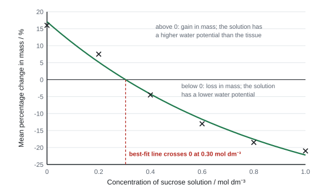
Worked example: from mass change to water potential
A piece goes from 3.20 g to 3.44 g in water: % change = 0.24 ÷ 3.20 × 100 = +7.5%.
Use % change, not the change in grams, because the starting masses are not exactly the same.
From the graph above, the line crosses 0% at 0.30 mol dm⁻³.
Then use the second graph (or table) given in the question, of the water potential of sucrose solutions: 0.30 mol dm⁻³ ≈ −800 kPa (Jan 2023). So the potato's water potential is about −800 kPa.
Draw lines on both graphs to show how you read them.
Explaining the shape
- Gain in mass at low concentrations: the solution has a higher water potential than the cells, so water enters by osmosis. The gain levels off when the cells are fully turgid (the cell wall stops further entry).
- Loss at high concentrations: the solution has a lower water potential, so water leaves by osmosis. The loss levels off when the cells have lost all the water they can (fully plasmolysed).
- Sucrose is used because it is soluble, has an osmotic effect, is not taken up by the cells and is not used by them quickly.
- Different tissues (yam v potato) cross zero at different concentrations because their cells contain different concentrations of solutes.
- "Water potential: the tendency of water (molecules) to move out of a solution; pure water is 0; it is always negative in a solution; water moves from higher to lower water potential."
- Method: "same size / surface area; mass before and after the same time; blot dry; repeat for each solution; percentage change".
- Accurate mass: "electronic balance, zeroed"; valid mass: "blot to remove surface solution, same blotting each time" (Jan 2023).
- Reading the graphs: "best-fit line crosses 0% change at 0.35 mol dm⁻³, which gives −1.7 MPa" (Oct 2020); "0.30 mol dm⁻³ gives −800 kPa" (Jan 2023).
Often asked as: define water potential (2); describe the method (5); add a best-fit line and read the zero point (2–3); use two graphs (2); explain why mass levels off (2); compare two tissues (2).
- "Concentration of water" or "the sugar moves". Use free water molecules and water potential; it is the water that moves.
- Joining the points dot to dot when the question asks for a line of best fit.
- Explaining the temperature control with enzymes: in osmosis it affects the movement (kinetic energy) of water molecules (Jan 2023 ER).
SpecCP4Enzyme activity and initial rate
Investigate the effect of temperature, pH, enzyme concentration and substrate concentration on the initial rate of enzyme-catalysed reactions (Unit 1, spec 2.8).
Principle
- Temperature: more kinetic energy → more successful collisions between substrate and active site → more enzyme–substrate complexes per second. Above the optimum, bonds holding the tertiary structure break, the active site changes shape, substrate no longer fits: the enzyme is denatured.
- pH: H⁺ / OH⁻ change the charges on R groups, breaking ionic and hydrogen bonds; the active site changes shape away from the optimum.
- Enzyme concentration: more active sites → rate rises in proportion, as long as substrate is in excess.
- Substrate concentration: rate rises (more collisions with active sites), then levels off when all active sites are occupied; the enzyme concentration is then limiting.
- Measure the initial rate: the gradient of the tangent at t = 0 on a graph of product formed (or substrate left) against time. Rates fall later because substrate is used up and product builds up, so only initial rates compare fairly (figure and worked example in P3).
Core practical 4: standard set-ups
Trypsin and milk, colorimeter (the Pearson method). Milk is cloudy because of the protein casein. Trypsin hydrolyses casein to soluble peptides and amino acids, so the milk clears.
- Put 2 cm³ of 1% trypsin and, in a separate tube, 2 cm³ of 2% skimmed milk in a thermostatically controlled water bath; leave 5 minutes to equilibrate.
- Zero the colorimeter with a blank (2 cm³ trypsin + 2 cm³ water).
- Mix, start the timer, and read the absorbance straight away and every 15 s for 5 minutes.
- Plot absorbance against time; draw the tangent at t = 0; its gradient is the initial rate.
- Repeat at five temperatures (e.g. 20–60 °C); or keep temperature constant and vary pH with buffers (pH 5–10), or trypsin concentration (0.2–1.0% by dilution).
Other set-ups that are credited
- Protease and photographic film / gelatine: time for the gelatine to be digested so the film turns clear; rate = 1 ÷ time (Oct 2021).
- Catalase and hydrogen peroxide: collect the oxygen in a gas syringe or upturned measuring cylinder; read the volume every 10 s.
- Amylase and starch: every 30 s put a drop of the mixture onto iodine on a spotting tile; record the time when it no longer turns blue-black.
Variables
| IV | Control the others with |
|---|---|
| Temperature (five values, e.g. 20, 30, 40, 50, 60 °C) | buffer of fixed pH; same volumes and concentrations of enzyme and substrate |
| pH (five buffers) | thermostatically controlled water bath at a fixed temperature (e.g. the optimum, so rates are measurable) |
| Enzyme concentration (dilutions of a stock) | water bath, buffer, substrate concentration and volume |
| Substrate concentration (dilutions of a stock) | water bath, buffer, enzyme concentration and volume |
DV: rate of product formed or substrate used, e.g. change in absorbance per minute (a.u. min⁻¹), cm³ O₂ s⁻¹, or 1 ÷ time (s⁻¹).
Choosing values. Do a trial first and pick concentrations where the reaction is neither too fast to time nor too slow (Jun 2019). A very fast reaction is not "better": it can't be measured accurately (Oct 2021 ER).
Safety
- Trypsin and other proteases can irritate skin and eyes and cause allergies: gloves and eye protection; wash spills off with cold water.
- Hydrogen peroxide is an irritant: eye protection. Hot water baths: take care above 50 °C.
Processing results
Worked example: initial rate and 1 ÷ time
Tangent. In the trypsin practical, the tangent at t = 0 runs from absorbance 0.80 at 0 s to 0.20 at 120 s.
Initial rate = (0.20 − 0.80) ÷ 120 = −0.0050 a.u. s⁻¹, i.e. a rate of decrease of 5.0 × 10⁻³ a.u. s⁻¹ (0.30 a.u. min⁻¹).
1 ÷ time. The gelatine film clears in 125 s at pH 7 and 250 s at pH 5. Rates = 1 ÷ 125 = 8.0 × 10⁻³ s⁻¹ and 1 ÷ 250 = 4.0 × 10⁻³ s⁻¹. The rate at pH 7 is twice the rate at pH 5.
Dilution (Oct 2021): 1 cm³ of 2% protease from a 5% stock = 0.4 cm³ stock + 0.6 cm³ water.
Errors and improvements
| Problem | Improvement |
|---|---|
| Delay between mixing and the first reading | mix in the cuvette; start the timer as you mix; data logger |
| Mixing changes the temperature | equilibrate enzyme and substrate separately at the test temperature |
| Drawing the tangent by eye | large graph; software; read many early points |
| End point (film clear, iodine no longer blue) judged by eye | colorimeter readings at set times |
| Temperature of "room temperature" tubes changes | thermostatic water bath |
| Scratched or dirty cuvette | same clean cuvette; hold by the frosted sides; re-zero with the blank |
How it is examined
- Urease and pH: why equilibrate at 40 °C, choosing concentrations, rate, initial rate (Jun 2019).
- Invertase: sucrose structure, temperature control, initial rate, criticise "the optimum pH is 5.5", immobilised v free enzyme (Oct 2020).
- Protease on gelatine film: DV, choosing a pH, rate = 1 ÷ time, initial rate, dilution (Oct 2021).
- Bromelain on casein with a colorimeter: initial rate, "determine" stem v fruit extract (Oct 2022).
- Papain and bromelain on squid: control v controlled variables, biuret estimate (Jun 2024); starch synthesis and SDs (Oct 2024).
- Savinase: colorimeter, devise an experiment to find the optimum temperature (Jan 2026; model answer in P5).
- Temperature control: "thermostatically controlled water bath"; "equilibrate enzyme and substrate separately before mixing (so the temperature of the mixture is the test temperature)".
- Initial rate: "measure product formed (or substrate used) over time; plot against time; gradient / tangent at the start". Reason: "substrate used up / product accumulates, so the rate changes; initial rates allow a valid comparison".
- Substrate curve: "rate rises because more substrate, more collisions / more E–S complexes; levels off because all active sites are occupied (enzyme is limiting)". If no plateau: "enzyme not saturated". "Enzyme used up" is ignored.
- Optimum curve: "rate rises to an optimum then falls as the enzyme is denatured; away from the optimum pH the active site changes shape, so fewer E–S complexes".
- Control: "water / buffer / boiled enzyme, so any effect can be attributed to the enzyme".
Often asked as: initial rate from a graph (2); why initial rate (2); explain a temperature, pH or concentration curve (3); describe or devise a method (5–6); control v controlled variable (2); criticise a stated optimum (2–3).
- Taking the gradient from the first and last points of the whole curve instead of a tangent at the start: examiners say many students "were not at all familiar with the concept of initial rate".
- "Denatured" at low temperature: below the optimum the enzyme just has less kinetic energy.
- "The rate decreases at high enzyme concentration."
- Saying "narrow range" when you mean "smaller intervals".
- Choosing humidity as a variable in a test tube.
- Immobilised enzymes compared with free enzyme: lower optimum in that data set; activity more affected by temperature; can be reused and don't contaminate the product (WBI13 Oct 2020).
- Sucrose = glucose + fructose joined by a glycosidic bond; invertase hydrolyses it (WBI13 Oct 2020).
- Protease digestion clears a protein suspension because the peptides and amino acids made are soluble (WBI13 Jan 2026).
SpecCP5Light microscope: cells, drawings and the graticule
Use a light microscope to observe and make labelled drawings of suitable animal cells, and use a graticule to make measurements and understand scale (Unit 2, spec 3.8). Recommended practical in this section: pollen tube growth (Unit 2, spec 3.13).
Principle
- Magnification = how much bigger the image is than the object. Total magnification = eyepiece × objective (×10 × ×40 = ×400).
- Resolution = the smallest distance between two points that can still be seen as separate. A light microscope resolves about 0.2 µm, so you see the nucleus, cytoplasm and cell membrane, but not mitochondria in detail, ribosomes or the nuclear pores.
- Staining adds contrast: unstained cells are almost transparent. Stains bind to particular chemicals, so different parts show up (methylene blue makes the nucleus darker blue).
- The eyepiece graticule must be calibrated against a stage micrometer at each objective (P3 figure and worked example).
Core practical 5: cheek cells
- Gently scrape the inside of your own cheek with a sterile cotton bud; smear it on a clean slide. Put the bud straight into disinfectant.
- Add 1–2 drops of methylene blue; leave 1 minute.
- Lower a coverslip at an angle with a mounted needle, to avoid air bubbles. Blot off excess stain.
- Put the slide on the stage. With the low-power objective, use the coarse focus (lens moving away from the slide) to find the cells, then the fine focus.
- Centre a cell and switch to high power; use the fine focus only.
- Draw two or three cells (rules below), with a title, the magnification or a scale line.
- Measure: calibrate the eyepiece graticule against the stage micrometer at this objective; count eyepiece units across the cell; convert. Measure several cells (and at different positions across each) and take the mean.
Why each step (Oct 2025):
| Step | Reason |
|---|---|
| Cells on a slide | so they can be placed on the stage and light can pass through |
| Stain | adds contrast; the nucleus (and chromosomes) become visible |
| Coverslip | flattens the cells into a thin layer; stops them drying out; protects the objective lens |
| Low power first | larger field of view to find the cells; then high power to see detail and measure |
Drawing rules
- A sharp HB pencil; continuous, single lines; no shading or colouring.
- Draw what you see in the specimen or photo, not a textbook cell: the right shape, proportions, nucleus size and position.
- Draw it large (use at least half the space).
- Label lines drawn with a ruler, touching the structure, no arrowheads, not crossing; labels outside the drawing.
- Add a title and the magnification or a scale line.
- In a cheek cell, label only what you can see: nucleus, cytoplasm, cell (surface) membrane. Labelling a cell wall, chloroplasts, mitochondria or ribosomes loses marks.
Variables (when you compare cells)
- Same objective and the calibration for that objective; same number of cells measured; measure in the same direction (e.g. the longest diameter).
Safety
- Body fluids could carry infection: use only your own cells; one bud per person; buds and slides into disinfectant.
- Methylene blue stains skin and clothes: gloves, wipe up spills.
- Slides and coverslips break: handle by the edges. Never point a mirror at direct sunlight.
Processing results
Worked example: size, magnification and volume
Calibration: 1 eyepiece unit = 2.5 µm at × 400 (P3). A cheek cell is 24 epu wide: 24 × 2.5 = 60 µm.
Mean of five cells: 60, 55, 63, 58, 64 µm → 300 ÷ 5 = 60 µm.
Your drawing is 90 mm wide: magnification = 90 000 µm ÷ 60 µm = × 1500.
Volume of a cylindrical cell 20 µm long and 4 µm across: r = 2 µm, V = πr²h = 3.14 × 2² × 20 = 251 µm³.
Errors and improvements
- Graticule not calibrated, or calibrated at a different objective → calibrate at every objective you use.
- Cells vary in size and are squashed unevenly → measure many cells, take a mean (and SD).
- Hard to judge the edge of a pale cell → better staining; adjust the light (iris diaphragm).
- One diameter doesn't describe an irregular cell → measure at several positions; calculate area or volume.
Recommended practical: pollen tube growth
The pollen tube grows out of a pollen grain on the stigma, down through the style, by chemotropism towards the micropyle of the ovule. It secretes enzymes (hydrolases) that digest a pathway through the style, and carries the male gamete nuclei (formed when the generative nucleus divides) to the ovule for fertilisation.
Recommended practical: factors affecting pollen tube growth
- Make five or more concentrations of the factor being tested (e.g. sucrose 0–0.5 mol dm⁻³, or boric acid or calcium chloride in a sucrose solution) by diluting a stock.
- Put one drop on a cavity slide (or a thin layer of agar), and dust pollen from a ripe anther onto it. Add a coverslip. Keep the slides in a humid chamber (Petri dish with damp paper) in an incubator at a constant temperature (e.g. 25 °C), with the pH kept constant by a buffer.
- At stated times (e.g. every hour for 4 hours) view under the microscope.
- Percentage germination: count the grains with a tube (e.g. a tube longer than the grain's diameter) and the total grains in a field of view; % = germinated ÷ total × 100. Count several fields.
- Tube length: measure tubes with a calibrated eyepiece graticule (stage micrometer); calculate the mean.
- Same species and flower age; repeat (several slides per concentration).
Worked example: pollen germination and dilution
In one field of view, 38 of 52 grains have germinated: 38 ÷ 52 × 100 = 73%.
A tube measures 32 eyepiece units at a calibration of 2.5 µm per unit: 32 × 2.5 = 80 µm.
Making 10 cm³ of 100 g dm⁻³ sucrose from a 500 g dm⁻³ stock: V₁ = 100 × 10 ÷ 500 = 2 cm³ of stock + 8 cm³ of distilled water.
Mean tube length rises from 120 µm (no boric acid) to 225 µm (with boric acid): % increase = 105 ÷ 120 × 100 = 88%.
- Cheek cells (Jan 2021): "one safety point + cotton bud / toothpick + stain + cells on a slide under a coverslip + view under high power".
- Measuring (Oct 2023, Oct 2025): "find the cell under low power, measure under high (or medium) power; calibrate the eyepiece graticule with a stage micrometer; count graticule units across the cell; convert units to µm; measure at different positions / several cells". It must say the graticule is in the eyepiece.
- Drawing: "correct shape; nucleus in the correct position; two correct labels; scale line".
- Pollen: IV "concentration of sucrose / boric acid / calcium chloride, temperature, pH"; DVs "percentage germination" and "pollen tube length"; "graticule and stage micrometer"; "stated times"; "pH matters because enzymes in germination have an optimum".
- Pollen tube role: "digests (with enzymes) a path through the style; grows towards the micropyle / ovule; carries the male gametes".
Often asked as: describe how to measure a cell with a graticule (3–4); draw a cell from a photo (3); actual size from a photo (2); why stain / coverslip (2); pollen: variables, dilution, percentage increase, the tube's role (2–5).
- Describing how to make the slide when the question gives you the slide (Oct 2023).
- Leaving out the calibration step or the conversion; measuring at the wrong power.
- Drawing a "fried egg" textbook cell, shading, or labelling organelles you can't see.
- Pollen grains "growing into seeds" (Jun 2023), or safety limited to "goggles and a lab coat".
- Controlling pH by "measuring it": use a buffer.
- Plant cell v red blood cell under a light microscope: the plant cell has a nucleus, cell wall, vacuole, chloroplasts and a regular shape, and is larger (WBI13 Jan 2021).
- Drawing a cell from an electron micrograph as it would look under a light microscope: outline in the right proportions, the nucleus (and nucleolus), but no nuclear pores (WBI13 Jan 2023).
- Fossil stomata: pore area measured with a graticule, SD bars, and an equation of a line used to predict (WBI13 Oct 2020).
SpecCP6Root-tip squash and mitotic index
Prepare and stain a root-tip squash to observe the stages of mitosis, and calculate the mitotic index (Unit 2, specs 3.15 and 3.16).
Principle
- In a root, cells divide only in the meristem, just behind the root cap, in the last few millimetres (the terminal 5 mm) of the tip.
- Hydrochloric acid (warm) breaks down the pectin of the middle lamella that holds cells together, so the cells can be separated and spread in a single layer.
- A stain (acetic orcein, toluidine blue, Schiff's reagent, acetocarmine) colours the chromosomes (DNA) so they can be seen.
- Squashing spreads the cells into a single layer so they don't overlap and light passes through.
- Mitotic index = cells in mitosis ÷ total cells counted. It shows how fast the tissue is dividing.
Core practical 6: root-tip squash
- Grow roots (garlic, onion) for a few days in water (or the test solutions). Cut off the terminal 5 mm of a root tip.
- Put the tip in 1 mol dm⁻³ hydrochloric acid at about 55–60 °C for 5 minutes.
- Rinse it in cold water (removes the acid, stops the hydrolysis).
- Put it on a slide with a few drops of stain (e.g. acetic orcein) for a few minutes (gently warmed if the method says).
- Tease the tip apart with a mounted needle, add a coverslip, and squash it gently with your thumb through a paper towel, without twisting the coverslip.
- Find the meristem under low power (small, square cells in rows, large nuclei), then switch to high power (× 400).
- Count cells in each stage, and the total, in several fields of view.
Identifying the stages
| Stage | What you see |
|---|---|
| Interphase | a nucleus with no separate chromosomes visible (most cells) |
| Prophase | chromosomes condense and become visible as threads; nuclear envelope breaks down |
| Metaphase | chromosomes lined up across the middle (equator) of the cell |
| Anaphase | sister chromatids pulled to opposite poles, often V-shaped |
| Telophase | two groups of chromosomes at the poles; nuclear envelopes re-form; a cell plate forms between them |
Variables (when you compare treatments)
| IV | concentration of a chemical (herbicide, plant extract, lectin), pH, temperature, or seed age, in which the roots are grown |
| DV | mitotic index (or % of cells in a stage) |
| Control | same species and variety; root length or age; same part of the root (terminal 5 mm); acid concentration, temperature and time; stain and staining time; number of fields counted |
Safety
- Hydrochloric acid and acetic orcein are corrosive/irritant: gloves and eye protection; rinse the tip in water after the acid; wash splashes off with plenty of water.
- Hot water bath: tongs. Mounted needles, scalpels and broken slides: take care.
Processing results
mitotic index = number of cells in mitosis ÷ total number of cells (× 100 for %)
Worked example: mitotic index and time in a stage
One field of view: interphase 112, prophase 14, metaphase 4, anaphase 3, telophase 4.
Total = 137. Cells in mitosis = 14 + 4 + 3 + 4 = 25.
Mitotic index = 25 ÷ 137 × 100 = 18.2% (or 0.182).
Time in a stage = fraction of cells in that stage × length of the cell cycle. If the cycle lasts 24 h, metaphase lasts 4 ÷ 137 × 24 × 60 = 42 minutes.
Rearranging (Jun 2021): if 14 cells are dividing and the mitotic index is 0.05, the total = 14 ÷ 0.05 = 280 cells.
Errors and improvements
- Cells overlap or the tissue is too thick → more maceration, firmer squash; count only cells you can see clearly.
- Identifying stages is subjective (late prophase or metaphase?) → agreed rules, the same person counting, photographs.
- Counting the same cell twice → count systematically across a grid or field.
- One field is not representative → several fields of view, several roots per treatment, means and SDs.
- Different distances from the tip → always the terminal 5 mm.
How it is examined
- Garlic flowchart: why each step, safety, design for the effect of pH, MI from a photo of 35 cells (Oct 2019).
- Seed-bank ageing and MI; total cells from MI; how to get SDs (Jun 2021).
- Plant extract on onion roots: safe method, MI, significance (Jun 2022).
- Lectin on onion cells: IV, safe procedure, table, % in mitosis, a test for counts (Oct 2023).
- Trifluralin herbicide: stages in order, why 25 °C, solvent control, why germinate seeds first (Jun 2025).
- Procedure: "root tip (terminal ~5 mm); warm acid (HCl at 55–60 °C); wash; stain (acetic orcein / toluidine blue / Schiff's); tease and squash gently under a coverslip; view under high power".
- Reasons: "stain to colour the chromosomes (not cells)"; "squash to spread the cells out so they don't overlap / a single layer"; "low power then high power to locate then magnify".
- Design (Oct 2019): "grow roots at a range of pH (buffers); several root tips per pH; same part of the root; count mitotic and total cells in several fields of view".
- Safety: "acid and stain are corrosive / irritant, so wear gloves and goggles / rinse tips".
- Trifluralin: "no cells in anaphase or telophase; division stops at metaphase; the spindle doesn't form, so chromatids can't be separated".
- Counts of cells in categories: "chi-squared" test.
Often asked as: describe the squash (4–5); reasons for steps (2–3); calculate MI or rearrange it (2); design an investigation of a factor (4–5); explain an effect on mitosis (2–3).
- Staining "the cells" instead of the chromosomes.
- Treating the cut root tips instead of growing the roots in the test solutions (Oct 2019, Oct 2023).
- Describing counting and calculating when only the method of viewing was asked (Jun 2022).
- "Acid is harmful" with no precaution.
- Rounding the MI wrongly (2 s.f. was required in Jun 2022, with no error carried forward).
- Seed banks: seeds are dried and stored at low temperature to slow ageing; aged seeds have a lower mitotic index (WBI13 Jun 2021).
- Cytokinesis: plant cells form a cell plate (new cell wall) between the nuclei; animal cells pinch in with a cleavage furrow. Plant cells stay connected by plasmodesmata (WBI13 Oct 2023, Jun 2025).
- Why roots are grown at 25 °C: near the optimum for the enzymes involved in growth, without denaturing them (WBI13 Jun 2025).
SpecCP7Plan diagrams of roots, stems and leaves
Use a light microscope to make observations and draw labelled plan diagrams of transverse sections of roots, stems and leaves; identify sclerenchyma fibres, phloem sieve tubes and xylem vessels and their positions (Unit 2, spec 4.6).
Principle
- A plan diagram shows the outlines of the tissues and their relative sizes and positions. It shows no individual cells. Draw it from low power.
- Sections must be thin, so light passes through one or two layers of cells.
- Toluidine blue O stains different walls different colours: lignified walls (xylem, sclerenchyma) blue-green; thin, pectin-rich walls (phloem, parenchyma) pink-purple.
Core practical 7: cutting and drawing a section
- Hold a short piece of stem (e.g. celery) upright; with a wet razor blade, cut thin transverse sections onto a white tile, cutting away from you. For a leaf, sandwich it between two strips of polystyrene or carrot and cut through all three.
- Move the sections into water with a paintbrush; pick the thinnest (a thin wedge is fine).
- Put it on a slide with 2 drops of toluidine blue O for a minute or two; rinse, add a coverslip, blot.
- View under low power. Draw a plan diagram: tissue outlines only, correct proportions and positions, labels with ruled lines.
- Switch to high power to draw a few cells of each tissue, if asked.
Prepared slides are fine for the drawing.
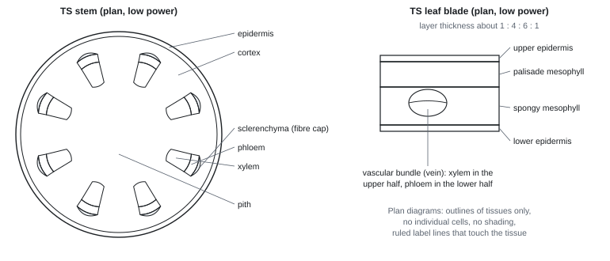
Identifying the tissues
| Tissue | How to recognise it | Position | Function |
|---|---|---|---|
| Xylem vessels | large, empty, rounded cells with thick lignified walls (blue-green); in LS, long tubes with no end walls, rings or spirals of lignin | inner side of each bundle in a stem; centre (star shape) in a root; upper side of a leaf vein | transport of water and mineral ions; support |
| Phloem sieve tubes | small cells with thin walls (pink-purple), with companion cells beside them; in LS, sieve plates across the ends | outer side of each bundle in a stem; between the arms of the xylem in a root; lower side of a leaf vein | translocation of organic solutes (e.g. sucrose) |
| Scleren­chyma fibres | small cells with very thick lignified walls and a tiny lumen, packed in a group | the cap outside the phloem in a stem bundle | support |
In a root, the xylem is in the centre, so it resists pulling forces; in a stem the bundles are in a ring near the outside, which resists bending.
Processing results
Worked example: leaf thickness from a photo (Oct 2025)
A section photographed at × 100 measures 50 mm thick on the photo.
Actual thickness = 50 ÷ 100 = 0.5 mm = 500 µm = 5 × 10² µm.
With an eyepiece graticule: 1 epu = 10 µm at low power, and the leaf is 52 epu thick → 520 µm.
Safety
- Razor blades: cut away from your body onto a tile; never test sharpness on a finger; blades into a sharps box.
- Toluidine blue stains skin: gloves; report spills.
Errors and improvements
- Sections too thick (too dark, cells on top of each other) → thinner sections; a thin wedge is enough.
- Too much stain hides the differences → stain for less time; rinse.
- Hard to tell tissues apart → compare TS and LS; use the stain colours and the position in the bundle.
- Preparing a thin section (Jan 2023): "cut a thin (transverse) section with a razor / scalpel; stain; on a slide under a coverslip; draw under low power".
- Plan diagram: "tissue layers only, no cells; proportions about 1 : 4 : 6 : 1 (upper epidermis : palisade : spongy : lower epidermis); three correct labels".
- Identifying tissue: "position in the bundle / stem; relative cell size; wall thickness". Phloem in LS: "sieve plates / end walls".
Often asked as: how to prepare a section (3); draw a plan diagram from a photo (3); identify tissues A, B, C with a reason (2–3); actual size from a photo (2).
- Drawing cells in a plan diagram.
- Naming a tissue when the question asks how you would identify it (give the features).
- Describing a root-tip squash instead of a thin section.
- Forgetting that plan diagrams are drawn at low power.
- Matching a transverse view to a longitudinal one: sieve tubes show sieve plates (cross walls with pores) in LS; xylem vessels show continuous tubes (WBI13 Jan 2023, Oct 2023).
- The cell types in plant fibres are xylem (vessels and fibres) and sclerenchyma; parenchyma and phloem are wrong (WBI13 Jan 2022, Jun 2023, Jan 2025).
SpecCP8Tensile strength of plant fibres
Determine the tensile strength of plant fibres (Unit 2, spec 4.9).
Principle and definitions
- Breaking force (or breaking mass, sometimes called "breaking strength") = the largest force (or mass) a fibre holds before it snaps. It depends on how thick the fibre is.
- Tensile strength = the breaking force per unit cross-sectional area. It is a property of the material: a thicker fibre of the same material holds more mass, but has the same tensile strength.
tensile strength = breaking force ÷ cross-sectional area
Units: N m⁻² (= pascals, Pa) or MPa (1 MPa = 10⁶ Pa). Weight in newtons = mass in kg × 9.8.
- Plant fibres are strong because they are made of cells with thick walls of cellulose microfibrils, strengthened with lignin (secondary thickening). The fibres are mainly xylem and sclerenchyma.
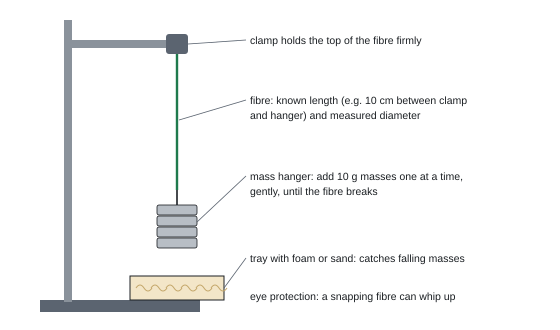
Core practical 8: breaking mass of plant fibres
- Extract fibres (e.g. celery "strings", coir, hemp) of the same length, with no visible damage. Mark the length to be tested (e.g. 10 cm).
- Measure the diameter at several points along the fibre (calipers, or a thin cross-section under a microscope with a calibrated graticule) and take the mean.
- Clamp the top of the fibre firmly to a retort stand; tie a mass hanger to the bottom (wind the ends round a pencil or pad them so the clamp doesn't cut the fibre).
- Put a tray with foam or sand under the hanger. Wear eye protection.
- Add 10 g masses one at a time, gently, waiting a few seconds after each, until the fibre breaks. Record the total mass at breaking.
- Repeat with several fibres of each type (or length), calculate the mean and SD.
- Convert to force (N) and divide by the cross-sectional area to get tensile strength.
Variables
| IV | type of plant fibre; fibre length; soaking time; plant age |
| DV | mass (force) at which the fibre breaks, converted to tensile strength |
| Control | length of fibre between the clamp and the hanger; diameter (or measure it and use tensile strength); how masses are added (size of increment, gently, same waiting time); age and part of the plant; how wet the fibre is (hydration); temperature and humidity of the room |
Safety
- Falling masses can hurt feet and hands: tray with a cushion below, keep feet clear, don't use masses far heavier than needed.
- A snapping fibre or mass can whip up: eye protection; stand back.
- Knife or scalpel for extracting fibres: cut onto a tile.
Processing results
Worked example: tensile strength
Mean breaking mass = 350 g = 0.350 kg. Breaking force = 0.350 × 9.8 = 3.43 N.
Mean diameter (graticule) = 0.20 mm, so r = 0.10 mm = 1.0 × 10⁻⁴ m.
Cross-sectional area = πr² = 3.14 × (1.0 × 10⁻⁴)² = 3.14 × 10⁻⁸ m².
Tensile strength = 3.43 ÷ 3.14 × 10⁻⁸ = 1.1 × 10⁸ N m⁻² (110 MPa).
The diameter is measured because tensile strength needs the area: two fibres with different breaking masses could have the same tensile strength if one is thicker (Jun 2023).
Errors and improvements
| Problem | Improvement |
|---|---|
| Diameter varies along the fibre | measure at several points; mean; use tensile strength, not breaking mass |
| Masses dropped on, not added gently | add slowly; same waiting time after each |
| Increments too big (true breaking mass is between two readings) | smaller masses (e.g. 5 g) near the breaking point |
| Fibre breaks at the clamp | pad the clamp; discard fibres that break there |
| Fibres dry out during the test | test quickly; keep moist; control hydration |
| Fibres from different parts of the plant | same part, same age |
How it is examined
- Method to compare breaking force; cross-sectional area from a graticule; area from tensile strength and force (Jan 2020).
- Hemp: graticule width of a fibre; strength against diameter: negative, non-linear, steepest between 21 and 25 µm (Jan 2022).
- Elephant grass: cell types, secondary thickening, soaking time as the IV, why measure diameter (Jun 2023).
- Coir: define tensile strength, length v breaking mass method, table, gradient and equation, explain using structure (Jan 2025).
- Method: "fibre clamped to a retort stand; masses added gradually / one at a time until the fibre breaks; record the mass at breaking; control fibre length, age, hydration, humidity / temperature, plant source; replicate and take the mean / SD; safety with a reason".
- Diameter: "cut a thin cross-section; slide and coverslip; calibrated graticule; measure diameter, convert; area = πr²".
- Graph (Jan 2025): gradient (160 − 200) ÷ 30 = −1.3, "the minus sign is essential"; "as fibre length increases, breaking strength decreases"; possible reason: longer fibres have more junctions between cells, or weaker points.
- Secondary thickening: "lignin makes the walls stronger / more rigid and waterproof".
Often asked as: define tensile strength (1–2); describe the method (4–5); calculate area or tensile strength (2–3); describe a graph (2); cell types and lignin (2).
- Defining tensile strength with the word "strength", or as just "the mass it can hold". Include force per unit cross-sectional area.
- Confusing breaking force with tensile strength.
- Masses far too heavy (kilograms for a single celery string), or no safety reason (Jan 2025 ER).
- Testing only one length when the question asks about length.
- Writing a gradient as a fraction, or dropping the minus sign.
- Mark-scheme anomaly: the Jan 2025 mark scheme credited "the force a fibre can take without breaking" as tensile strength. Use the full definition (force ÷ cross-sectional area), which matches Jan 2020 and the Jun 2023 examiner report, and call the other quantity breaking force (WBI13 Jan 2025).
- Soaking fibres (retting) changes strength: strength more than doubled in the first 6 hours, then levelled off after 18 hours (WBI13 Jun 2023).
SpecCP9Antimicrobial properties of plants and aseptic technique
Investigate the antimicrobial properties of plants, using aseptic techniques to handle bacteria safely (Unit 2, spec 4.12; links to 4.10, the conditions bacteria need, and 4.11, plant chemicals with antimicrobial properties).
Principle
- Many plants make chemicals that kill bacteria or stop them growing (garlic, mint, cloves, roselle, cinnamon).
- A filter-paper disc soaked in a plant extract is put on agar spread with a lawn of bacteria. The chemicals diffuse out into the agar. Where they are concentrated enough, bacteria can't grow: a clear zone of inhibition forms.
- Bigger zone → more effective extract (at that concentration). But zone size also depends on how fast the chemical diffuses through agar (molecule size, solubility, concentration), so it is not a perfect measure.
- Bacteria need: nutrients (a carbon source such as glucose, a nitrogen source for proteins), water, a suitable temperature and pH, and oxygen (for aerobic species).
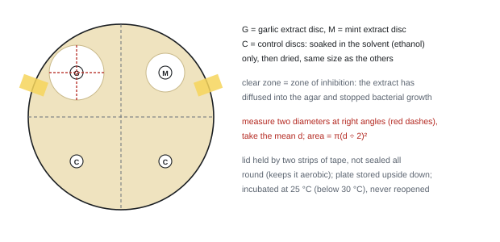
Core practical 9: disc diffusion with plant extracts
Making the extract
- Grind a known mass of plant material (e.g. 3 g garlic) with a known volume of ethanol (e.g. 10 cm³) with a mortar and pestle for a fixed time. Filter.
- Soak sterile filter-paper discs (same size) in the extract for the same time. Soak control discs in ethanol only. Let the ethanol evaporate on a sterile surface.
Making and incubating the plate (aseptic technique)
- Disinfect the bench; wash your hands; work beside a lit Bunsen burner.
- Flame the neck of the culture bottle; with a sterile pipette spread 0.1 cm³ of the bacterial culture evenly over a nutrient agar plate with a sterile spreader, lifting the lid only slightly. This makes a lawn.
- With flamed (or sterile) forceps, put the discs on the agar, evenly spaced (e.g. one in each quarter, marked on the base).
- Tape the lid with two strips (not sealed all round); label the base; turn the plate upside down.
- Incubate at 25 °C (never above 30 °C) for 24–48 hours.
- Without opening the plate, measure the diameter of each clear zone twice at right angles; take the mean and calculate the area. Repeat with several plates.
- Autoclave all plates and equipment afterwards.
Alternatives: cut wells in the agar with a sterile cork borer and fill them with extract; chill the plate (e.g. 5 °C) first so the extract diffuses before the bacteria grow.
Aseptic technique: each step and its reason
| Step | Reason |
|---|---|
| Disinfect the bench; wash hands | kills microbes that could contaminate the culture or you |
| Work next to a lit Bunsen burner | the rising air carries airborne microbes away from the plate |
| Flame the loop, spreader (dipped in ethanol, then flamed) and bottle neck | kills microbes on them; the updraft stops microbes entering the bottle |
| Lift the lid only slightly, briefly | less chance of airborne microbes landing on the agar |
| Tape the lid with two strips, not all round | the plate can't be opened accidentally; air can still get in, so anaerobic pathogens are not encouraged |
| Incubate at 25 °C, below 30 °C | human pathogens grow best at 37 °C (body temperature); 25 °C still lets the culture grow |
| Never reopen plates; autoclave afterwards | stops the culture escaping; kills all microbes before disposal |
The two purposes, which the mark scheme wants you to separate: prevent contamination of the culture with other microbes (otherwise the results are invalid) and prevent the culture escaping to infect people or the environment.
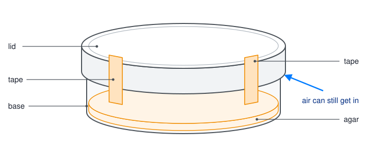
Variables
| IV | type of plant (or plant part); solvent used; extract concentration |
| DV | diameter or area of the zone of inhibition / mm or mm² (or number of colonies; turbidity) |
| Control | species and volume of bacterial culture; agar type, volume and depth; disc size; volume and concentration of extract (same mass of plant per volume of solvent); incubation temperature and time |
Safety
- Bacteria may be pathogenic: non-pathogenic strains only; aseptic technique; no eating or drinking; incubate below 30 °C; never open plates; autoclave.
- Ethanol is flammable: keep it away from the Bunsen flame (dip the spreader, then pass it through the flame briefly).
- Some plants irritate skin or eyes (garlic, chilli): gloves; eye protection.
Processing results
Worked example: zone area, percentage difference, numbers of bacteria
Area. Garlic zone: diameters 18 mm and 20 mm at right angles. Mean d = 19 mm, r = 9.5 mm. Area = π × 9.5² = 284 mm² (3 s.f.).
Mint zone: mean d = 14 mm, r = 7 mm, area = π × 7² = 154 mm².
% difference relative to mint = (284 − 154) ÷ 154 × 100 = 84% larger.
Using diameters instead gives (19 − 14) ÷ 14 × 100 = 36%: diameters understate differences in area.
Numbers in the inoculum (Jun 2024): 5 × 10⁵ bacteria cm⁻³ × 0.2 cm³ = 1 × 10⁵ bacteria.
Errors and improvements
| Problem | Improvement |
|---|---|
| Zones not circular; edges fuzzy | two diameters at right angles; trace on squared paper; photograph against a scale |
| Zone size depends on diffusion as well as effectiveness | same disc size and volume; compare like with like; MIC method |
| Extract strength not standardised | same mass of plant per volume of solvent; known concentrations |
| Solvent might kill bacteria | control discs with solvent only, dried |
| Contamination | aseptic technique; colonies of a different colour or shape show it |
| Only one species tested; lab conditions not like a body or a food | test several species; say what the model can't show |
How it is examined
- Five extracts and two bacteria; why chill at 5 °C; area of zone; control disc; % difference; bar chart; food preservation (Oct 2019).
- Plant extracts: method, bar chart of scores, evaluate (Jun 2021); extracts v gentamicin, placebo and double-blind (Jan 2022).
- Roselle and clove: reasons for aseptic technique, method, table, ratio, conclusions (Jun 2023).
- Chitosan and cinnamon coatings: pipette use, bacterial numbers in standard form, fungi need other media (Jun 2024).
- Wells in agar, 48 h at 30 °C, three aseptic techniques, area, diffusion factors, MIC (Oct 2024).
- Blue lotus seed extract: making the extract, the lawn, why not 37 °C, table, graph, conclusions (Jan 2026).
- DV: "zone of inhibition diameter / area (mm, mm²)". Alternatives: "number of colonies, turbidity, absorbance".
- Method: "culture bacteria (lawn / pour plate / broth); extract on soaked filter-paper discs or in wells; control disc / well with solvent or water; control a variable (disc size, extract volume); incubate at a suitable temperature (below 37 °C; 25–30 °C) and time (24–48 h; up to 7 days); measure the zone; safety".
- Extract (Jan 2026): "powder seeds (mortar and pestle); known mass; known volume of ethanol (not water); filter". Control disc: "soaked in ethanol and dried".
- Aseptic reasons: "prevent escape / spread of bacteria"; "prevent contamination of the cultures with other bacteria, so the results are valid". "Do not accept unqualified gloves / goggles."
- Incubation (Oct 2024): "time for colonies to become visible / extract to diffuse; 30 °C does not allow growth of human pathogens but is high enough for growth". Chilling first: "allows the extract to diffuse into the agar before bacterial growth begins".
- Other factors affecting zone size: "solubility, concentration / volume of extract, molecule size, rate of diffusion, agar depth, incubation temperature".
Often asked as: describe the method safely (5–6); reasons for aseptic steps (2–3); zone area and % difference (2–3); bar chart (3–4); conclusions or evaluation of data (3–5); other factors affecting zone size (2).
- "Measure the area" with no method (two diameters and πr², or squared paper).
- Leaving out the solvent control, or calling it a controlled variable.
- Incubating at 37 °C, or sealing the lid all the way round.
- "Wear gloves and goggles" with no reason.
- Inventing a new experiment (fish, microscopes) when the question wants CP9 adapted (Jan 2024).
- Using ethanol near a flame without saying how you keep it safe.
- Minimum inhibitory concentration (MIC): the concentration at which the number of living cells falls to 10% of the starting count. Read it from a graph: 10% of 200 = 20 cells gave 4.3 mg dm⁻³ (WBI13 Oct 2024).
- Fungi need a different medium (e.g. potato dextrose agar), a lower temperature and a longer incubation than bacteria, because of different nutrient needs, enzyme optima and slower growth (WBI13 Jun 2024).
- Whole extract v isolated chemicals: the whole extract can be more effective, because it contains other antimicrobial chemicals or the chemicals act together (WBI13 Jan 2022).
- Low internal pH in a fruit helps preserve it: it denatures the enzymes of pathogens such as E. coli (WBI13 Jun 2023).
SpecCP10Photosynthesis in an aquatic plant
Investigate how light intensity, light wavelength, temperature and carbon dioxide availability affect the rate of photosynthesis, using a suitable aquatic plant (Unit 4, spec 5.8).
Principle
- A pondweed (Elodea or Cabomba) releases oxygen from photolysis of water. The volume of oxygen released per minute is a measure of the rate of photosynthesis. (Strictly it is the net rate: some O₂ is used in the plant's own respiration.)
- Each factor can be limiting: the one in shortest supply holds the rate down. Raise it and the rate rises until another factor becomes limiting.
- Light intensity is roughly proportional to 1 ÷ d², where d is the distance from the lamp (the inverse square law). Halve the distance and the intensity goes up four times.
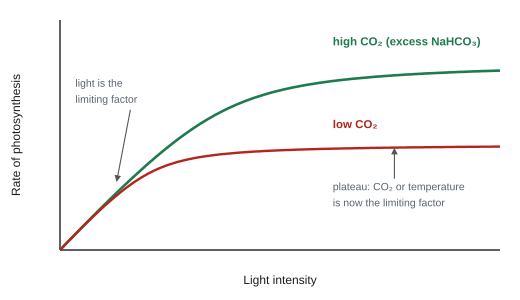
Core practical 10: light intensity (photosynthometer)
- Cut a 7–8 cm piece of pondweed under water, with a slanting cut at the stem end. Place it cut end up in a boiling tube of sodium hydrogencarbonate solution (e.g. 1%, in excess: it supplies CO₂).
- Put the tube in a beaker of water at a fixed temperature (a heat shield), or use an LED lamp, so the lamp doesn't warm the plant. Darken the room.
- Place the lamp 10 cm from the plant, measured with a metre rule. Leave the plant 5 minutes to acclimatise.
- Collect the gas for a fixed time (e.g. 5 minutes) in the funnel of a photosynthometer: draw the bubble into the capillary tube with the syringe and measure its length against the scale. Or collect it in a gas syringe and read the volume.
- Repeat three times at this distance, then at 20, 30, 40 and 50 cm.
- Volume of gas in a capillary = πr²l (r = internal radius of the capillary).
Other variables: wavelength: the same lamp with named colour filters (e.g. red, blue, green, and no filter), at the same distance. Temperature: tube in a thermostatically controlled water bath at five temperatures, e.g. 10–40 °C. CO₂: five NaHCO₃ concentrations, e.g. 0, 0.25, 0.5, 0.75, 1.0%.
Variables
| Light-intensity version | |
|---|---|
| IV | light intensity: lamp distance 10–50 cm (five values) with a metre rule; or a light meter |
| DV | volume of oxygen (gas) collected per minute / mm³ min⁻¹ or cm³ min⁻¹ |
| Control | temperature (heat shield + thermostatic bath); CO₂ (NaHCO₃ in excess, same concentration); wavelength (same lamp, no filter); same piece of pondweed (or same length/mass); pH (buffer); background light (room dark) |
When depth of water is the IV (a 2024 question), light intensity is controlled, and vice versa: you can't change both.
Safety
- Lamp and water: keep mains leads and sockets away from water; don't touch a hot bulb.
- NaHCO₃ is low hazard; pondweed can carry pond microbes: wash hands.
Processing results
Worked example: rate of photosynthesis
At 20 cm the gas bubble in the capillary (radius 0.5 mm) is 25 mm long after 5 minutes.
Volume = πr²l = 3.14 × 0.5² × 25 = 19.6 mm³. Rate = 19.6 ÷ 5 = 3.9 mm³ min⁻¹.
Light intensity ∝ 1 ÷ d² = 1 ÷ 20² = 1 ÷ 400 = 0.0025 cm⁻² (arbitrary units). At 10 cm it is 0.01: four times as bright.
Plot mean rate against 1/d² (or against light intensity from a meter). Expect a rise, then a plateau where CO₂ or temperature takes over as the limiting factor.
Errors and improvements
| Problem | Improvement |
|---|---|
| Counting bubbles: they differ in size | measure volume (capillary + scale or gas syringe) |
| Lamp heats the water | heat shield or LED bulb; check temperature with a thermometer |
| Some O₂ dissolves in the water; some is used in respiration | use water already saturated with air; accept rate is net; compare like with like |
| Gas collected isn't all O₂ (some N₂, CO₂) | note as a limitation; collect for the same time at each value |
| Background light | darkened room / blackout |
| NaHCO₃ used up over time | fresh solution, in excess |
| Leaves differ in surface area | same piece of pondweed for all readings |
How it is examined
- Full 21-mark plan on light intensity with Cabomba (Oct 2020); "describe an experiment" on wavelength (Oct 2021) and temperature (Oct 2022), each with 3 marks of synoptic recall (grana, photolysis).
- 16-mark plans: two light intensities → bar graph and t test (Oct 2023); distance below the water surface (Oct 2024).
- Preliminary work: find how to change light intensity; find a length/mass of plant giving measurable gas; find a suitable time.
- "description of method to provide 5 different intensities of light" (lamp at stated distances), "at least two filters of different named colours, or one coloured filter and white light".
- "sodium hydrogencarbonate (in excess)"; "time to acclimatise"; "volume of gas collected in a stated time"; "repeats and mean"; "calculation of rate".
- Light control: "heat shield / LED bulb", "blackout other light sources".
- Limitations: "oxygen dissolves in water / used in respiration", "temperature change due to lamp", "difficult to control surface area of leaves", "some gas may be CO₂".
- "IGNORE counting oxygen bubbles".
Often asked as: 5-mark method; full plan; limitations; recall of the light-dependent reactions.
- Using soda lime or saying NaHCO₃ is there to absorb CO₂. It supplies CO₂. Soda lime belongs in a respirometer.
- "Increase the light" with no distances. Give five measured distances.
- Not naming the filter colours.
- Forgetting the acclimatisation time at each new intensity.
- The rate at different depths: deeper water = lower light intensity, so depth is a stand-in for light (WBI16 Oct 2024).
- Grana give a large membrane surface area for photosystems, pigments and electron carriers (WBI16 Oct 2021); photolysis splits water, giving electrons, H⁺ and O₂ (WBI16 Oct 2022).
SpecCP11Ecology of a habitat: quadrats, transects and abiotic factors
Study the ecology of a habitat: use quadrats and transects to find the distribution and abundance of organisms, and measure abiotic factors suited to the habitat (Unit 4, spec 5.14).
Which sampling method?
| Aim | Method | Analyse with |
|---|---|---|
| Compare abundance in two areas (grazed v ungrazed, polluted v clean) | random sampling: quadrats at random coordinates in each area | t test (or Mann-Whitney) |
| Show how distribution changes along a gradient (sea to inland, under a tree to open grass) | systematic sampling: a transect, quadrat at regular intervals | Spearman's rank (abundance v distance or v an abiotic factor); kite diagram |
| Do two species occur together? | random quadrats, presence/absence of each | chi-squared or odds ratio |
| Mobile animals | pitfall traps, sweep nets, kick sampling, mark-release-recapture | compare counts; Lincoln index |
Abundance = how many (density = number per m², % cover, or ACFOR scale). Distribution = where they are.
Core practical 11: random quadrats and a belt transect
Random sampling (comparing two areas)
- Lay two tape measures at right angles along two edges of the area to make a grid (e.g. 20 m × 20 m).
- Use a random number generator to get coordinates; place the bottom-left corner of the quadrat (e.g. 0.5 m × 0.5 m = 0.25 m²) at each coordinate.
- Record the number of plants (density) or % cover (gridded quadrat with 100 small squares: count squares more than half covered).
- Take enough quadrats that the running mean levels off (often 10–20). Repeat in the second area with the same quadrat size and method.
Transect (along a gradient)
- Run a tape from the sea (or tree trunk) inland, at 90° to the shoreline.
- Place the quadrat at regular intervals (e.g. every 10 m for 200 m) on the same side of the tape.
- Record species, % cover or count in each quadrat.
- At each quadrat, measure abiotic factors (soil moisture, pH, salinity, wind speed, temperature) the same way and at the same time of day.
- Repeat with two or more parallel transects and calculate means for each distance.
Measuring abiotic factors
| Factor | How |
|---|---|
| Soil moisture | sample from a fixed depth (e.g. 5 cm); weigh, dry in an oven at 80 °C until constant mass, reweigh; % water = mass lost ÷ wet mass × 100. Or a moisture meter |
| Soil or water pH | pH probe or meter (calibrated); or soil + distilled water + universal indicator |
| Salinity | conductivity meter |
| Light intensity | light meter at a fixed height, same time of day |
| Wind speed | anemometer at a fixed height |
| Temperature | thermometer or probe at a fixed depth/height |
Variables
- IV: site (two areas) or distance along the transect.
- DV: density (number m⁻²), % cover, or ACFOR rating of the named species.
- Standardise: quadrat size; the way it is placed; time spent searching; same person identifying; same time of day and season.
- Monitor (can't control): soil moisture, pH, temperature, weather. Choose sites where these are similar, or record them so you can compare.
Safety and ethics
- Hazards: slips and trips on dunes or rocks, tides, sunburn and heat, bites and stings, plant spines or allergies, sand blown into eyes. Matching controls: footwear, check tide times, sunscreen and water, gloves, goggles, never work alone.
- Ethics: trample as little as possible, put stones back, return animals unharmed, don't remove protected species.
Processing results
Worked example: estimating population size
Quadrats. Ten 0.25 m² quadrats contain a mean of 6.5 plants. Density = 6.5 ÷ 0.25 = 26 plants m⁻². The meadow is 2000 m², so the population ≈ 26 × 2000 = 52 000 plants.
Mark-release-recapture. 40 beetles caught and marked (M), released. Next day 50 caught (C), 8 of them marked (R).
Population N = (M × C) ÷ R = (40 × 50) ÷ 8 = 250.
This assumes no migration, births or deaths between samples, marks don't rub off or make beetles easier for predators to see, and marked animals mix back into the population.
- % frequency = quadrats containing the species ÷ total quadrats × 100.
- Kite diagram: distance along the transect on the x-axis; each species' abundance drawn as a band symmetrical about its own line; the width shows abundance.
Errors and improvements
- Sample bias (placing quadrats where it "looks interesting") → random numbers.
- Too few quadrats → more, until the running mean is steady.
- Estimating % cover is subjective → gridded quadrat, same observer, or point quadrat.
- Misidentification → identification key, photos.
- One transect or one day → repeat on more transects, at other times of year.
- Animals counted twice or hidden → standard search time, nets, cameras, mark and recapture.
How it is examined
The most varied practical: marram grass leaf length along a dune (Spearman, Oct 2021); mayfly nymphs by kick sampling (t test, Jan 2022); grasshoppers on two gravel areas (plan, Jan 2023); cactus near mimosa trees (odds ratio, Jun 2023); acacia trees near termite mounds (chi-squared, Jan 2025); earthworm mass in soil blocks (SD, Jun 2025); grazing and biomass (t test, Oct 2025); marram from the sea to 200 m inland and dung beetles in pitfall traps (Jan 2026).
- Method (Jan 2026): "transect (line); use of quadrat; defined size of quadrat / transect at 90° to shoreline; standardised method of placing quadrat; record number of plants / % cover in quadrat; measure one named variable (e.g. pH, salinity, humidity, temperature, wind speed); repeat with at least one more transect".
- Random sampling: "creation of a grid; select co-ordinates using a random number generator".
- Abiotic factor: "use of correct equipment / method; standardisation (known depth / height / same time); location of samples (each position / every 2 m along transect)".
- Population (plan): "standardised sample sites of known area on both sites; standardised method and time of counting; method of calculating population density, e.g. number per unit area".
Often asked as: describe a sampling method in the given habitat; how to measure one abiotic factor; risk; null hypothesis (correlation for a transect).
- Generic quadrat descriptions with no link to the habitat in the question. Name the organism, the size of quadrat and the distances.
- Saying you will "control" soil pH in the field. You monitor it.
- "Throw the quadrat over your shoulder" is not random sampling.
- A difference null hypothesis for transect data: it should be about correlation with distance.
- Odds ratio for association between two species in 100 random quadrats (WBI16 Jun 2023).
- Standard deviation of earthworm biomass and what it shows about two populations (WBI16 Jun 2025).
- Mark-release-recapture and the Lincoln index for mobile animals were credited in a grasshopper plan (WBI16 Jan 2023).
SpecCP12Effect of temperature on the development of organisms
Investigate how temperature affects the development of organisms, such as seedling growth rate or brine shrimp hatch rate, taking into account the ethical use of organisms (Unit 4, spec 5.22).
Principle
- Development depends on enzyme-controlled reactions. As temperature rises, molecules gain kinetic energy, there are more collisions and more enzyme–substrate complexes, so metabolism (and respiration, growth, hatching) speeds up.
- Above the optimum, bonds in the enzymes' tertiary structure break, active sites change shape, enzymes denature and development slows or stops.
- This links to climate change: warmer water may speed up or upset development.
Core practical 12: brine shrimp hatching and seedling growth
Brine shrimp (Artemia)
- Make salt water of a fixed salinity (e.g. 30 g dm⁻³). Put the same volume (e.g. 50 cm³) in five containers.
- Stand each in a thermostatically controlled water bath or incubator at a different temperature, e.g. 15, 20, 25, 30, 35 °C. Let the water reach temperature.
- Add the same number of eggs (e.g. 50, counted with a hand lens or by mass) from the same batch.
- Count the hatched larvae at fixed intervals (e.g. every 12 h for 3 days). Shine a light at one side: larvae swim towards it, which makes them easier to count; remove them with a pipette once counted.
- Repeat three times at each temperature.
Seedlings
- Soak seeds of the same variety; sow the same number in the same compost or on damp cotton wool, with the same volume of water.
- Grow at five temperatures (incubators or controlled rooms) with the same light.
- Measure the shoot length of each seedling with a ruler every day (straighten curved shoots along a thread) and work out the mean.
Variables
| Brine shrimp | Seedlings | |
|---|---|---|
| IV | temperature (five values, thermostatic control) | temperature (five values, or two to compare) |
| DV | number of eggs hatched per unit time (or % hatched after a stated time; time for 50% to hatch) | increase in mean shoot length per day / mm day⁻¹ |
| Control | salinity, volume, light intensity and period, pH (buffer), egg batch and age, number of eggs, O₂ (aeration) | seed variety, age and number; volume of water (standard watering method); light; compost; CO₂ |
Ethics and safety
- Use invertebrates or plants where possible; brine shrimp are not thought to feel pain and are plentiful.
- Keep temperatures within a range the organism can survive; use the minimum number of animals; return or dispose of them humanely (not into the wild if they are non-native).
- Warm salt water near electrical baths: keep dry hands, mop spills.
Processing results
Worked example: hatch rate and Q₁₀
50 eggs per container; number hatched after 48 h: 20 °C 12, 25 °C 27, 30 °C 35, 35 °C 18.
% hatched at 30 °C = 35 ÷ 50 × 100 = 70%. Rate of hatching = 35 ÷ 48 = 0.73 eggs h⁻¹.
Optimum (of these values) ≈ 30 °C; the fall at 35 °C fits enzyme denaturation (or eggs damaged).
Q₁₀ = rate at (T + 10 °C) ÷ rate at T = 35 ÷ 12 = 2.9 between 20 and 30 °C: about three times faster for a 10 °C rise.
Seedlings: mean shoot 12 mm on day 3 and 40 mm on day 7 → growth rate = (40 − 12) ÷ (7 − 3) = 7 mm day⁻¹.
Errors and improvements
- Hard to count small larvae (they move) → light to attract them, count in a small dish, two people count.
- Deciding when a seed has "germinated" or an egg "hatched" → define it (radicle 2 mm long; larva swimming free).
- Temperature drifts in cheap incubators → thermostatic control, monitor with a thermometer.
- Warmer water holds less O₂ → aerate all containers.
- Curved shoots are hard to measure → thread or digital image analysis.
How it is examined
- Brine shrimp hatching with calcium ions (Jun 2021) and with copper ions (Jan 2025): a 5–6 mark method, then ions and enzymes (calcium as a cofactor; copper changing tertiary structure).
- Shoot growth of drumstick seedlings at 20–35 °C in a greenhouse (Jan 2026 plan).
- Pollen tube growth over time at 24 °C (Jan 2024): rate from a graph, temperature and enzymes.
- "dependent variable is the number (of eggs) hatched per unit time / time for a fixed number of eggs to hatch"; "use of five different concentrations (accept zero)"; "counting at the same / stated time intervals (if single count, min 1 h, max 3 days)"; "control of temperature (thermostatic) / pH (buffer) / light (bulb wattage, distance) / salinity (g dm⁻³)"; "repeats and calculate mean / SD".
- Seedlings: "length of shoot after stated time"; "same number / age / source of seeds"; "standardised method of watering"; "description of shoot measuring technique"; "method of calculating rate of growth".
- Temperature effect: "more enzyme–substrate complexes"; "increase respiration / metabolic rate"; "very high temperatures denature enzymes".
- Ethics: shrimps "are not vertebrates / cannot feel pain / are plentiful".
Often asked as: 5–6 mark method; abiotic variables to control; ethics in one line; explain the temperature effect.
- A rate worked out over the wrong time interval (between hour 1 and hour 5 is 4 hours).
- "Temperature kills the enzymes." Enzymes aren't alive: they denature.
- Using the context temperature range wrongly (the greenhouse only reaches 20–35 °C, so don't plan 5–55 °C).
- "Simple nervous system" or "stress" as the ethical reason for brine shrimp: not credited.
SpecCP13Growth of microorganisms in a liquid culture
Investigate the rate of growth of microorganisms in a liquid culture, using microbes safely and ethically (Unit 4, spec 6.4; links to 6.1–6.3: aseptic technique, measuring growth, growth curves and growth rate constants).
Principle
- In a closed culture, numbers follow a growth curve: lag (cells adjust, make enzymes, little division), exponential/log (doubling at a steady rate, plenty of nutrients), stationary (nutrients run short, toxic wastes build up, new cells = dying cells), death (deaths exceed new cells).
- Ways to measure growth: turbidity (cloudiness) with a colorimeter; dilution plating (viable count); haemocytometer (cell count under a microscope); dry mass.
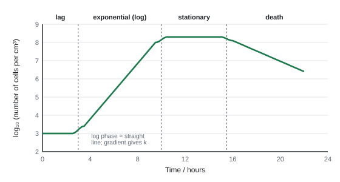
Aseptic technique (every microbiology plan)
- Disinfect the bench before and after; wash hands.
- Work next to a lit Bunsen burner (the updraft carries microbes away).
- Flame the neck of bottles and flasks when opened; sterilise loops by flaming until red hot; use sterile pipettes and spreaders.
- Lift lids as little as possible; keep flasks plugged with cotton wool.
- Incubate at 25 °C (not above 30 °C), so human pathogens aren't favoured.
- Tape Petri dish lids with two strips (not sealed all round, so anaerobic pathogens don't grow); never reopen.
- Autoclave (121 °C, 15 minutes) all cultures and equipment before disposal.
Core practical 13: yeast growth by turbidity
- Sterilise a flask of glucose broth (e.g. 100 cm³). Using aseptic technique, add a fixed mass or volume of yeast (e.g. 1 cm³ of a stock culture). Plug with cotton wool.
- Incubate at a fixed temperature (e.g. 25 °C) and mix (shake or magnetic stirrer) so cells don't settle.
- Zero the colorimeter with sterile broth (the blank) and a red filter.
- Every 30 minutes (then every few hours), remove a sample aseptically, mix, put it in a clean cuvette and read the absorbance.
- Continue for at least 24 h. Plot absorbance (or log of cell number from a calibration curve) against time.
To compare conditions (pH, temperature, glucose concentration), run several flasks side by side and compare their rates of increase in turbidity.
Dilution plating
- Serially dilute the culture (e.g. 1 cm³ into 9 cm³ sterile water, five times: 10⁻¹ to 10⁻⁵), because there are far too many cells to count otherwise.
- Spread a known volume (e.g. 0.1 cm³) of each dilution over a nutrient agar plate with a sterile spreader. Each live cell grows into one colony.
- Incubate for a fixed time and temperature (e.g. 48 h at 25 °C) so colonies are big enough to see and count.
- Count the colonies on a plate with 30–300 separate colonies, then multiply back.
Worked example: dilution plating and growth rate constant
Viable count. 0.1 cm³ of the 10⁻⁵ dilution gives 42 colonies.
Cells per cm³ of the original culture = 42 ÷ 0.1 × 10⁵ = 4.2 × 10⁷ cm⁻³.
Growth rate constant. A culture rises from N₀ = 2.0 × 10³ to Nₜ = 6.4 × 10⁴ cells cm⁻³ in t = 150 minutes.
k = (log₁₀Nₜ − log₁₀N₀) ÷ (0.301 × t) = (4.806 − 3.301) ÷ (0.301 × 150) = 1.505 ÷ 45.15 = 0.033 min⁻¹ (2.0 h⁻¹).
That is 5 doublings in 150 minutes, so the generation (doubling) time = 1 ÷ k = 30 minutes.
(0.301 is log₁₀ 2: k counts doublings per unit time.)
Variables
- IV: time (or a factor such as pH, temperature, glucose concentration, pineapple juice).
- DV: absorbance (turbidity), or number of cells cm⁻³ (from plating or a haemocytometer), at each time.
- Control: starting volume and concentration of the inoculum (same stock, mixed); volume and composition of broth; temperature (incubator); pH (buffer); aeration/mixing; same colorimeter filter and cuvette.
Safety and ethics
- Treat every culture as a possible pathogen: aseptic technique, no eating or drinking, wash hands, autoclave waste.
- Use non-pathogenic strains (baker's yeast, lab E. coli K12); incubate below 30 °C.
- Yeast can be an allergen. Disposal by autoclaving stops release of cultures into the environment.
Errors and improvements
- Turbidity counts dead as well as live cells (and debris) → back it up with dilution plating or a haemocytometer with a stain that marks dead cells.
- Cells settle or clump → mix before every sample.
- Fingerprints or condensation on cuvettes → hold by the frosted sides, wipe.
- Uneven starting numbers → mix the stock well; same volume from the same stock.
- Contamination → aseptic technique; a sterile-broth control flask that should stay clear.
How it is examined
- Plan: E. coli in broth with and without fresh pineapple juice (Oct 2021).
- Dilution plating risk, growth rate constant to 3 s.f., abiotic variables (Jan 2023).
- "Justify each step of the dilution plating method" (6 marks, Jun 2025).
- Yeast turbidity at pH 6, 7 and 8: rate from a graph, 5-mark method (Jan 2026).
- Dilution plating justified: "serially dilute (because too many to count individual colonies); spread a known volume to make a lawn / separate individual cells; incubate for a fixed time and temperature, 20–35 °C, 1–4 days (to see / count colonies); aseptic technique (to avoid contamination / errors in counting)".
- Turbidity method: "colorimeter / optical density / light transmission"; "same strain / age of yeast"; "standardised method of starting each culture"; "use of buffer"; "measure turbidity at each time interval"; "method of agitating culture".
- Plan: "nutrient broth with and without pineapple juice (accept heated juice / water as control)"; "aseptic technique"; "samples taken at suitable intervals"; "method of calculating growth rate".
- Risk: "harmful bacteria / infection / pathogens" with a specific control. "Not contamination unqualified."
Often asked as: justify dilution plating; calculate k or a cell count; risk and control; method using turbidity.
- Streaking with a loop instead of spreading a known volume: you can't count back to a concentration.
- Incubating at 37 °C in a school lab.
- Forgetting the blank when using a colorimeter.
- Drawing a death phase on an absorbance graph.
SpecCP14Effect of antibiotics on bacteria
Investigate the effect of different antibiotics (or plant extracts) on bacteria (Unit 4, spec 6.14).
Principle
- An antibiotic diffuses out of a paper disc into the agar. Where its concentration is high enough, bacteria can't grow: a clear zone of inhibition appears in the bacterial lawn.
- Larger zone → bacteria more sensitive to that antibiotic (at that dose). No zone → resistant or the substance has no effect.
- Bacteriostatic antibiotics stop bacteria multiplying (e.g. tetracycline); bactericidal ones kill them (e.g. penicillin).
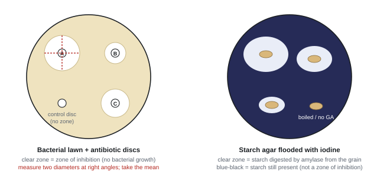
Core practical 14: disc diffusion
- Use aseptic technique throughout (see CP13).
- Pipette 0.1 cm³ of a broth culture of a non-pathogenic bacterium onto a nutrient agar plate and spread it evenly with a sterile spreader to make a lawn.
- With sterile forceps, place filter-paper discs (same size, e.g. 6 mm), each soaked in the same volume of a different antibiotic (or concentration), evenly spaced and the same distance from the edge.
- Include a control disc soaked in sterile water (or the solvent used for a plant extract).
- Tape the lid with two strips (not sealed), invert the plate, and incubate at 25 °C for 48 h.
- Measure the diameter of each clear zone twice at right angles with a ruler or calipers and take the mean. Area = πr².
- Use several plates (repeats) and calculate mean zone sizes.
Plant extracts (e.g. leaves, roots, flowers): grind the same mass of each part with the same volume of solvent (e.g. ethanol) for the same time; filter; soak discs (or fill wells cut in the agar); let the solvent evaporate; use a solvent-only control disc.
Variables
- IV: type of antibiotic, its concentration, or the plant part used for the extract.
- DV: diameter (or area) of the zone of inhibition after a stated incubation time / mm (mm²).
- Control: species/strain and volume of bacterial culture; agar type, volume and depth; disc size and volume of solution; incubation time and temperature; extraction method.
Safety
- Treat bacteria as pathogens: aseptic technique, tape (don't open) plates, autoclave all waste.
- Antibiotics can cause allergic reactions: gloves, avoid skin contact.
- Ethanol is flammable: keep it away from the Bunsen flame.
Processing results
Worked example: zone area
A zone measures 13 mm and 15 mm at right angles. Mean diameter = 14 mm, so r = 7 mm.
Area = πr² = 3.14 × 7² = 154 mm².
If the disc is 6 mm across you can subtract its area (28 mm²) to give the cleared agar: 126 mm². Say which you did and do it the same way every time.
Compare two antibiotics or extracts with a t test on the zone diameters (see P5 for a full example).
Errors and improvements
- Zone edges fuzzy or not circular → two perpendicular diameters; photograph against a scale and use image software; digital calipers.
- Zone size also depends on how fast the molecule diffuses (size, solubility), not just how effective it is → compare like with like, or use a broth dilution method (lowest concentration that stops growth).
- Uneven lawn or agar depth → same volume of culture and agar, spread well.
- Contamination → aseptic technique; contaminating colonies are a different colour or shape.
- Lab conditions differ from the body (aerobic, 25 °C; gut is anaerobic, 37 °C); only one species tested.
How it is examined
- Data from ampicillin-fed chickens in two villages: null hypothesis, table, bar graph, t test, criticise the claim that resistance has developed (Jan 2021).
- Plan: antibacterial compounds in Piper betle leaves (Jun 2023).
- Compare parts of Tussilago farfara (root, stem, leaf, flower); bacteriostatic v bactericidal; code of practice for prescribing (Jan 2024).
- Method: "use of any two (stated) parts of the plant; same / standardised extraction method; preparation of agar plate / broth with bacteria; aseptic technique; discs soaked in extract (wells accepted); incubate for stated time and temperature (24–72 h at 20–30 °C); measure diameter / area of zone of inhibition".
- Plan: "a control for comparison"; "incubate at a stated temperature, not more than 30 °C"; "repeat the whole experiment for mean and SD / error bars".
- "Bacteriostatic: prevents increase in bacterial numbers; bactericidal: kills bacteria."
- Code of practice: "only for bacterial infections, not viral / minor ones; finish the course; to reduce bacterial resistance".
- Criticising a resistance claim: "cannot comment on development of resistance in village B as there is no data from before ampicillin was used".
Often asked as: 6-mark method; plan; data handling with a t test; limitations.
- Not stating which parts of the plant you'll use.
- Leaving out the control disc.
- Incubating at 37 °C or sealing the plate all round.
- "Resistance has developed" from data that has no "before" measurement.
- Antibiotic resistance: heavy use (e.g. in animal feed) is a selection pressure; resistant bacteria survive and reproduce, passing on resistance alleles (WBI16 Jan 2021).
- Limitations of a plant-extract test as a model for gut infections: bacteria grown aerobically, gut anaerobic, not at body temperature (WBI16 Jun 2023).
SpecCP15Using a redox indicator to investigate respiration in yeast
Use an artificial hydrogen carrier (a redox indicator) to investigate respiration in yeast (Unit 5, spec 7.7).
Principle
- In glycolysis and the Krebs cycle, dehydrogenase enzymes remove hydrogen from respiratory substrates. Normally NAD or FAD accepts it.
- A redox indicator is an artificial hydrogen acceptor. It takes the hydrogen instead and changes colour when reduced:
- methylene blue: blue → colourless;
- DCPIP: blue → colourless;
- TTC (triphenyltetrazolium chloride): colourless → red.
- The faster the yeast respires, the faster the indicator changes colour. Rate = 1 ÷ time for the colour change.
Core practical 15: temperature and yeast respiration
- Set up five thermostatically controlled water baths, e.g. 20, 25, 30, 35 and 40 °C.
- In each bath put a tube of yeast suspension in glucose solution (e.g. 5 cm³; same concentration of yeast and of glucose) and, in a separate tube, the indicator (e.g. 1 cm³ of 0.05% methylene blue). Leave both 10 minutes to equilibrate.
- Add the indicator to the yeast, mix once by inverting, and start the timer.
- Don't shake again: oxygen from the air re-oxidises the indicator. (A thin layer of oil on top keeps air out.)
- Stop the timer when the blue has gone, judged against a colour standard (yeast suspension with water instead of indicator).
- Repeat three times at each temperature; calculate mean time and rate = 1 ÷ mean time.
Controls: boiled (denatured) yeast + indicator should not change colour; yeast with no glucose changes much more slowly.
Variables
| IV | temperature (five values, thermostatic water baths); or glucose concentration; or type of sugar |
| DV | time taken for the indicator to change colour / s, converted to rate (s⁻¹) |
| Control | mass/volume and strain of yeast; concentration and volume of glucose (respiratory substrate); volume and concentration of indicator; pH (buffer); same mixing; same tube size |
Safety
- Methylene blue stains skin and clothes: gloves. Hot water baths: take care at higher temperatures.
- Yeast can be an allergen; wash hands.
Processing results
Worked example: rate and Q₁₀
Mean time for the methylene blue to decolourise: 240 s at 25 °C and 120 s at 35 °C.
Rate at 25 °C = 1 ÷ 240 = 4.2 × 10⁻³ s⁻¹. Rate at 35 °C = 1 ÷ 120 = 8.3 × 10⁻³ s⁻¹.
Q₁₀ = 8.3 × 10⁻³ ÷ 4.2 × 10⁻³ = 2.0: the rate doubles with a 10 °C rise, as expected for enzyme-controlled reactions below the optimum.
Plot rate against temperature: it rises to an optimum, then falls as the enzymes denature.
Errors and improvements
| Problem | Improvement |
|---|---|
| Judging the end point by eye is subjective (yeast is cream-coloured) | colour standard tube; same person; better: colorimeter reading absorbance at set times |
| Indicator re-oxidised by air | don't shake; oil layer |
| Yeast settles, so it's unevenly mixed | stir/invert the stock before each sample |
| Mixing tubes at different temperatures | equilibrate yeast and indicator separately first |
| Yeast respiring before the start | same time from making the suspension to starting |
How it is examined
- Plan: "the higher the temperature, the faster the rate of respiration" in yeast (Jan 2022), which accepted gas collection or a redox indicator.
- 5–6 mark methods with a redox indicator and temperature (Jun 2024, Jun 2025), plus recall: where oxidative phosphorylation happens (inner mitochondrial membrane / cristae), what NAD does in anaerobic respiration.
- "range of five suitable temperatures (5–45 °C)"; "use of thermostatic water bath"; "incubate yeast and indicator separately to reach the same temperature"; "suitable named indicator (TTC, DCPIP, methylene blue)"; "record time taken for colour to change"; "repeats and calculate means / SDs".
- "add glucose / sugar / respiratory substrate"; "same volume / mass of indicator"; "use a timer". Ignore stated colours, "amount", "number of drops".
- Rate: "1 ÷ time taken for colour change".
- Temperature effect: "more kinetic energy, more enzyme–substrate complexes; above the optimum enzymes denature (active site changes shape)".
- Anaerobic recall: "NAD accepts electrons / hydrogen; ATP made by substrate-level phosphorylation". Not FAD, not oxidative phosphorylation.
Often asked as: name an artificial hydrogen carrier; 5–6 mark method; explain the effect of temperature.
- A water bath without "thermostatically controlled".
- Forgetting the glucose (the substrate).
- Shaking the tube during timing.
- Vague "kinetic energy" explanations with no link to collisions and enzyme–substrate complexes.
SpecCP16Simple respirometer: rate of respiration and RQ
Use a simple respirometer to find the rate of respiration and the respiratory quotient (RQ) of a suitable material, such as germinating seeds or small invertebrates (Unit 5, spec 7.8).
Principle
- Organisms take in O₂ and give out CO₂. Soda lime (or KOH/NaOH) absorbs the CO₂, so the only volume change is the O₂ taken in. The pressure falls and the coloured drop moves towards the organisms.
- Volume of O₂ = distance moved × cross-sectional area of the capillary = πr²l.
- RQ = CO₂ given out ÷ O₂ taken in. It shows the respiratory substrate:
| RQ | Substrate |
|---|---|
| 1.0 | carbohydrate |
| about 0.9 | protein |
| about 0.7 | lipid |
| above 1 | some anaerobic respiration (or lipid being made from carbohydrate) |
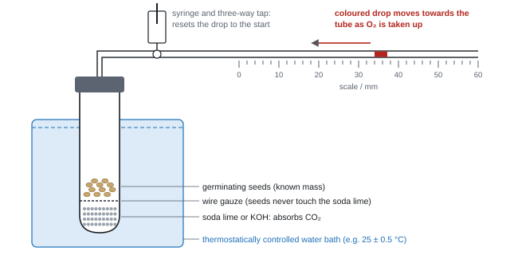
Core practical 16: rate of respiration and RQ
- Weigh a sample of germinating seeds (e.g. 2.0 g), or small invertebrates such as woodlice or maggots.
- Put soda lime in the bottom of the tube, a wire gauze above it, then the seeds. Set up a control tube with glass beads of the same volume.
- Put both tubes in a thermostatically controlled water bath (e.g. 25 °C). Leave 10 minutes with the tap open to equilibrate.
- Close the tap. Mark the drop's position; record the distance it moves in a fixed time (e.g. 10 minutes). Reset it with the syringe.
- Repeat three times; calculate the mean distance. Rate = πr²l ÷ time (÷ mass for a per-gram rate).
For RQ: repeat with the same seeds with the soda lime replaced by the same volume of glass beads (no CO₂ absorber).
- With soda lime: movement x = O₂ taken in.
- Without soda lime: movement y = O₂ taken in − CO₂ given out.
- CO₂ given out = x − y, so RQ = (x − y) ÷ x. (If the drop moves away from the seeds without soda lime, CO₂ out is more than O₂ in: add instead of subtract, RQ > 1.)
Worked example: respiration rate and RQ
Capillary radius 0.5 mm. 2.0 g of germinating sunflower seeds. In 10 minutes the drop moves 20 mm towards the seeds with soda lime, and 6 mm towards the seeds without it.
O₂ uptake = πr²l = 3.14 × 0.5² × 20 = 15.7 mm³ in 10 min → 1.57 mm³ min⁻¹, or 1.57 ÷ 2.0 = 0.79 mm³ min⁻¹ g⁻¹.
CO₂ given out = 20 − 6 = 14 mm of capillary. RQ = 14 ÷ 20 = 0.70 → lipid is being respired (sunflower seeds store oil).
The same capillary is used throughout, so you can use distances directly in the RQ: πr² cancels.
With potassium hydroxide present, the fluid moved 25 mm in 10 minutes in a capillary of radius 0.50 mm. Oxygen used = πr² × distance = 3.14 × 0.50² × 25 = 19.6 mm³, a rate of 1.96 mm³ min⁻¹.
The absorbent removes all the carbon dioxide released, so the only change in gas volume is the oxygen taken in.
The experiment was repeated with water in place of the absorbent. The fluid moved 7.5 mm towards the seeds in 10 minutes, a net decrease of 3.14 × 0.50² × 7.5 = 5.9 mm³.
Now the carbon dioxide given out partly replaces the oxygen taken in, so the change equals oxygen used minus carbon dioxide produced.
Carbon dioxide produced = 19.6 − 5.9 = 13.7 mm³.
RQ = CO₂ produced ÷ O₂ used = 13.7 ÷ 19.6 = 0.70, which suggests the seeds are respiring lipid, as oil-rich seeds do.
If the fluid had moved away from the seeds without absorbent, more carbon dioxide was released than oxygen used; the two volumes are then added, and the RQ is above 1.
Variables
| IV | temperature; type, age or variety of seed; tissue the larvae feed on; type of organism |
| DV | distance moved by the drop in a set time (raw data), converted to volume of O₂ per minute (per gram) |
| Control | mass of organisms; temperature (thermostatic bath or air-conditioned room); volume of soda lime; capillary bore; equilibration time; age of seeds and time soaked; species of larvae |
Safety and ethics
- Soda lime and KOH are corrosive: gloves and goggles; organisms on gauze so they never touch it.
- Invertebrates: handle gently, short experiments, keep the temperature non-lethal, return them to their habitat.
- Germinating seeds can be surface-sterilised (dilute hypochlorite, rinse) to reduce microbial respiration.
Errors and improvements
- Small movements are hard to read precisely → finer capillary, longer time, read against a scale with a hand lens; a gas syringe or pressure sensor and data logger.
- Leaks at the bung or tap → seal with petroleum jelly; check the drop holds still in the control.
- Temperature changes alter gas volume (and germinating seeds give off heat) → water bath; control tube.
- Soda lime saturated → fresh soda lime each run.
- Seeds may switch to anaerobic respiration as O₂ falls → short runs, open the tap between readings.
- Larvae may develop or seeds die during the test; viability of seeds varies.
How it is examined
The most-planned core practical: maggot data, rate in mm³ min⁻¹, RQ and why glass beads replace soda lime (Jan 2021); "RQ of mung beans decreases as they age" (Jun 2022); tetraploid v diploid watermelon seeds (Jan 2024); mung beans v peas (Jun 2024); blowfly larvae on liver v muscle (Jan 2025).
- "clear statement of the dependent variable, e.g. distance moved by the meniscus / volume of oxygen in unit time"; "respirometer / labelled diagram"; "control mass of seeds"; "time to acclimatise / equilibrate"; "repeat with and without soda lime"; "formula for RQ: carbon dioxide released ÷ oxygen consumed".
- "use of a CO₂ absorber (soda lime / KOH / NaOH, not sodium hydrogencarbonate)".
- Glass beads replace soda lime "so carbon dioxide is not absorbed / so carbon dioxide produced can be measured" (and keep the volume the same).
- Table: raw data is "distance moved by the bubble in a given time". "A heading RQ is not appropriate as it is a calculated value."
- Limitations: "gas leakage / spent soda lime / death of some larvae / heat generated by respiration"; "difficult to measure small distances along the capillary".
Often asked as: full plan; calculate rate (πr²l) and RQ; explain the soda lime and glass beads; identify the substrate from RQ.
- Using NaHCO₃ as the CO₂ absorber (that's the photosynthesis practical).
- Using the diameter in πr².
- Inverting the RQ (O₂ ÷ CO₂).
- Saying a respirometer measures CO₂ output directly. It measures O₂ uptake; CO₂ comes from the difference between two runs.
- "Contamination" as a limitation for a short test on germinating seeds: not credited (Jun 2024).
SpecCP17Exercise and breathing: spirometer traces
Investigate how exercise affects tidal volume, breathing rate, respiratory minute ventilation and oxygen consumption, using data from spirometer traces (Unit 5, spec 7.15).
Principle and definitions
- A spirometer is a chamber of air (or medical-grade oxygen) floating over water. The subject breathes in and out of it through a mouthpiece; the lid rises and falls and a pen or sensor draws a trace.
- Soda lime absorbs the CO₂ breathed out, so the total volume in the chamber falls as O₂ is used. The slope of the trace gives O₂ consumption.
| Term | Meaning | From the trace |
|---|---|---|
| Tidal volume | volume breathed in or out in one normal breath (≈ 0.5 dm³ at rest) | height from a peak to the next trough |
| Breathing rate | breaths per minute | count peaks in a known time |
| Minute ventilation | volume breathed per minute | tidal volume × breathing rate |
| O₂ consumption | volume of O₂ used per unit time | gradient of a line through the peaks (or troughs) |
| Vital capacity | largest volume breathed out after the deepest breath in | biggest peak-to-trough distance |
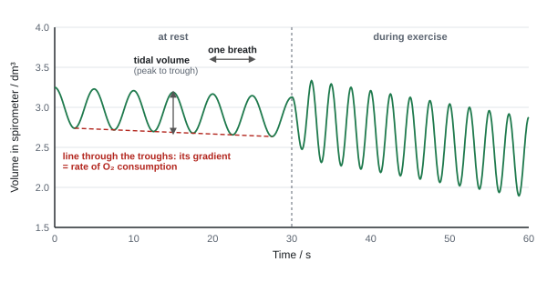
Core practical 17: rest and exercise
- Check the subject is healthy (no asthma, heart or breathing problems) and gets informed consent.
- Fill the spirometer; check the soda lime is fresh; fit a sterilised (or new) mouthpiece; put on a nose clip so no air enters or leaves through the nose.
- Let the subject breathe normally for a minute to get used to the apparatus, then record 1–2 minutes at rest.
- The subject does a standard exercise (e.g. step-ups for 2 minutes at a fixed rate set by a metronome).
- Reconnect immediately and record for 1–2 minutes. To study recovery, keep recording until breathing returns to the resting rate and note the time.
- Repeat with several subjects; rest between trials.
Worked example: reading the trace above
At rest: 6 peaks in 30 s → breathing rate = 12 breaths min⁻¹. Peak to trough = 0.50 dm³ (tidal volume).
Minute ventilation = 0.50 × 12 = 6.0 dm³ min⁻¹.
The line through the troughs falls by 0.125 dm³ in 30 s → O₂ consumption = 0.25 dm³ min⁻¹ (4.2 × 10⁻³ dm³ s⁻¹).
During exercise: 12 peaks in 30 s → 24 breaths min⁻¹; tidal volume 1.0 dm³; minute ventilation = 1.0 × 24 = 24 dm³ min⁻¹. The trough line falls 0.5 dm³ in 30 s → 1.0 dm³ min⁻¹ of O₂: four times the resting value.
Why ventilation rises during exercise
- Muscles respire faster (more aerobically) to make more ATP, so they need more O₂ and produce more CO₂.
- CO₂ lowers blood pH. Chemoreceptors (in the medulla, and in the carotid and aortic bodies) detect it.
- The ventilation centre in the medulla sends more impulses to the diaphragm and intercostal muscles, so breathing gets faster and deeper.
Variables
- IV: exercise (rest v exercise; intensity; or a fitness programme v none).
- DV: tidal volume, breathing rate, minute ventilation, O₂ consumption, or time to return to the resting breathing rate (recovery time).
- Control (biotic): age, sex, BMI/mass, height, fitness, smoking, health; same subject where possible. Abiotic: room temperature and humidity (air-conditioned room), altitude, same spirometer.
Safety and ethics
| Risk | Control |
|---|---|
| Infection from the mouthpiece | sterilise or replace it for each person |
| CO₂ build-up → dizziness, breathing difficulty | fresh soda lime; short recordings; stop if unwell |
| Soda lime is corrosive | handle the canister with gloves |
| Overexertion | health questionnaire; moderate exercise; supervision |
| Ethics | informed consent; volunteers can withdraw; nobody pressured |
Errors and improvements
- Leaks at the mouthpiece or nose → nose clip, check seals.
- Breathing is abnormal when on a mouthpiece → practice breathing first; discard the first readings.
- Soda lime exhausted → O₂ consumption underestimated; replace it.
- Hard to read peaks precisely, especially a sloping trace → use a digital spirometer and software; average five breaths.
- Volunteers differ in fitness, diet, stress and health → larger groups, matched for age and sex.
How it is examined
- Trace at rest: breathing rate, estimate minute ventilation, why it rises in exercise, abiotic and biotic variables (Oct 2021).
- Risk from using a spirometer, rate of O₂ consumption from a line PQ (with units), biotic variables, the ventilation centre (Oct 2023).
- Plan: does a fitness programme shorten recovery time? Ethics and safety, method, analysis, limitations (Jun 2025).
- Trace: "breaths per minute" from counting peaks; minute ventilation = "tidal volume × rate"; O₂ consumption from the slope of the trace with units such as dm³ s⁻¹ (avoid the solidus).
- Plan: "one group with and one without a fitness programme"; "clear statement of DV, e.g. time for the trace to return to the resting rate"; "use of soda lime"; "sterilise / replace mouthpiece for each student"; "find the resting breathing rate"; "standardised exercise, e.g. for one minute"; "two variables controlled (BMI, sex, age, room temperature) and method for one"; "repeats to give means and SDs".
- Ventilation: "chemoreceptors detect pH / CO₂ concentration; impulses to intercostal muscles / diaphragm; rate of breathing increases".
- Exercise: "more O₂ for aerobic respiration; muscles need more ATP; more CO₂ to remove". "Just oxygen is needed for respiration" is not enough.
Often asked as: read the trace (rate, tidal volume, ventilation, O₂ use); risk; plan with volunteers; ventilation control.
- Measuring tidal volume from the baseline to a peak rather than peak to adjacent trough.
- Forgetting the units (dm³ min⁻¹) or using a solidus where the mark scheme rejects it.
- Answering the ventilation question with the ventilation centre only, and not linking it to exercise.
- "Recovery time" as the DV with no definition of what "recovered" means.
SpecCP18Production of amylase in germinating cereal grains
Investigate the production of amylase in germinating cereal grains (Unit 5, spec 8.12).
Principle
- A cereal grain (barley, wheat) has an embryo, a starchy endosperm, and an aleurone layer around the endosperm.
- When the grain absorbs water, the embryo releases gibberellin (GA). GA diffuses to the aleurone layer, where it switches on transcription of the amylase gene (mark schemes say GA "acts as / activates a transcription factor").
- Amylase is made, secreted into the endosperm, and hydrolyses starch → maltose. The maltose (then glucose) is used in respiration for the growing embryo.
- To test the effect of GA, remove the embryo (the grain's own source of GA) and add GA from outside.
Core practical 18: starch agar and half-grains
- Cut each grain across with a scalpel on a tile to give an embryo half and an endosperm half (the embryo is at the pointed end).
- Surface sterilise the halves in dilute sodium hypochlorite (e.g. 1% for 5 minutes), then rinse in sterile water (aseptic technique: other microbes also make amylase).
- Soak endosperm halves in a range of GA concentrations made by serial dilution (e.g. 0, 0.001, 0.01, 0.1 and 1 g dm⁻³) for 24 h. The 0 (water) dish is the control.
- Place the halves cut side down on starch agar plates, the same number per plate, evenly spaced. Tape the lids loosely; incubate at 25 °C for 24–48 h.
- Remove the grains and flood the plate with iodine. Agar with starch turns blue-black; where amylase digested the starch, there is a clear zone.
- Measure each clear zone (two diameters at right angles, or trace it onto graph paper and count squares). Calculate mean area for each concentration.
Other comparisons: embryo halves v endosperm halves (only embryo halves make zones without added GA); boiled grains (no zone); two wheat varieties; abscisic acid (ABA) concentrations, which reduce amylase production.
Alternative: grind germinated grains in a buffer, mix the extract with starch solution, and follow the loss of starch with iodine and a colorimeter (or colour standards and a calibration curve).
Variables
| IV | GA (or ABA) concentration; presence of embryo; variety of grain; time of germination |
| DV | area (or diameter) of the clear zone after a stated incubation time / mm²; or proportion of starch left after a set time |
| Control | variety, age and size of grain; number of grain halves per plate; soaking time; starch concentration and depth of agar; incubation temperature and time; volume and concentration of iodine |
Safety
- Scalpel: cut on a tile, away from fingers.
- Sodium hypochlorite is an irritant: gloves and goggles.
- Iodine stains and irritates: gloves.
Processing results
Worked example: clear zone areas
Mean clear-zone diameters: 0 g dm⁻³ GA 6 mm (just the area under the grain), 0.1 g dm⁻³ 18 mm, 1 g dm⁻³ 24 mm.
Area at 0.1 g dm⁻³ = π × 9² = 254 mm²; at 1 g dm⁻³ = π × 12² = 452 mm².
% increase = (452 − 254) ÷ 254 × 100 = 78%.
Plot mean area against GA concentration (a log scale suits a ×10 dilution series). For a correlation, Spearman's rank between concentration and zone area.
Errors and improvements
- Zone edges are fuzzy and zones aren't circular (half-grain shape) → trace and count squares, or photograph and use image software.
- Microbial contamination could also digest starch → surface sterilise grains, aseptic technique, a no-grain control plate.
- Grains vary (size, age, genotype) → many grains per treatment, same batch, mean.
- Agar depth uneven → same volume of agar in each plate.
- Grain halves differ in cut surface area → cut in a standard way.
How it is examined
- Plan: "the greater the concentration of abscisic acid, the smaller the production of amylase" (Jan 2021).
- Method to find whether GA acts on the endosperm or the embryo; how GA increases amylase synthesis (Oct 2024).
- Plan: two wheat varieties digest starch at different rates; recall of maltose structure (Oct 2025).
- Oct 2024 method: "aseptic technique (wash with sterile water or sodium hypochlorite); cut seed in half / separate endosperm from embryo; soak both halves in gibberellin; use of a control not soaked in gibberellin; place cut side down on starch agar; incubate for a stated time (24–48 h) at a stated temperature; add iodine after incubation; compare clear zone sizes". "Ignore zone of inhibition."
- ABA plan: "clear statement of DV, e.g. size of clear area"; "test at five different ABA concentrations"; "stated incubation time 24–72 h"; "method of determining clear area (trace for total area or several diameters)".
- GA mechanism: "acts as / activates a transcription factor; increases transcription of amylase mRNA; translation of amylase".
- Maltose: "disaccharide of two α-glucose joined by a 1,4 glycosidic bond".
Often asked as: 6-mark method; full plan; GA mechanism; starch and maltose recall.
- Calling the clear area a "zone of inhibition". Nothing is inhibited: starch has been digested.
- Cutting the grain in half but then only testing one half when the question asks you to compare both.
- Forgetting that the agar must contain starch.
- Not saying how the zones will be compared (measured diameter or area).
- Why grains need amylase: to hydrolyse stored starch to maltose for respiration in the embryo (WBI16 Oct 2024).
- Abscisic acid as the antagonist of GA: it reduces amylase production and keeps seeds dormant (WBI16 Jan 2021).
Quick checks
A student investigates the effect of temperature on pigment leakage from beetroot. Which of these is a controlled variable?
Surface area affects how much pigment can escape, so it must be kept the same in every tube. Temperature is the independent variable, the commonest wrong choice, and absorbance (which measures pigment concentration) is the dependent variable.
Repeat readings of 4.1, 4.2, 4.1 and 4.2 cm³ are obtained when the true value is 5.0 cm³. How would you describe these readings?
The readings agree closely with each other, so they are precise, but all are well below the true value, so they are not accurate. This pattern points to a systematic error. "Accurate but not precise" mixes the two terms up.
A volume of 20 cm³ is measured with a measuring cylinder that has an uncertainty of ±0.5 cm³. What is the percentage uncertainty?
Percentage uncertainty = 0.5 ÷ 20 × 100 = 2.5%. An answer of 0.5% just repeats the uncertainty without dividing it by the measurement.
Fifteen discs soaked in garlic extract and fifteen soaked in mint extract were tested on agar plates. Which statistical test should be used to compare the mean diameters of their clear zones?
Two means of continuous data are being compared, which is what the t-test is for. Chi-squared needs counts in categories, and Spearman's rank looks for a correlation between two paired variables, not a difference between two groups.
A Spearman's rank test on 10 pairs gives rs = 0.45. The critical value at p = 0.05 is 0.648. What should be concluded?
0.45 is below the critical value, so the null hypothesis of no correlation is accepted. A positive value alone does not make a correlation significant, and even a significant correlation would not show cause.
40 eyepiece units match 100 µm on a stage micrometer. A cell measures 18 eyepiece units with the same objective. What is its actual length?
One eyepiece unit = 100 ÷ 40 = 2.5 µm, so the cell is 18 × 2.5 = 45 µm. 7.2 µm comes from dividing the wrong way (18 × 40 ÷ 100).
Why is a root tip placed in warm hydrochloric acid when making a root tip squash?
The acid hydrolyses the pectins that hold neighbouring cells together, so the tissue can be spread into a single layer. Staining is done separately with a stain such as acetic orcein, which is the commonest confusion.
In a respirometer containing potassium hydroxide, why does the coloured fluid move towards the tube of germinating seeds?
Oxygen is removed by respiration and its replacement, carbon dioxide, is absorbed, so the pressure in the seed tube drops and the fluid is drawn towards it. Heat from the seeds would push the fluid the other way, and the control tube is there to cancel such effects.